Introduction
dictk (Digital Image Correlation Toolkit) is a Python library for digital
image correlation (DIC) — comparing images of a specimen before and after
deformation to measure displacement and strain fields.
Installation
pip install dictk
Overview
DIC compares a reference image (often of an undeformed specimen) to a subject image (often of a deformed specimen) as a means to optically quantify displacement and strain fields.
Before we discuss the image portion of DIC, it is useful to introduce basic concepts of Continuum Mechanics and the Finite Element Method. This introduction will formalize definitions of displacement and strain and lay the groundwork for motion of discrete points locatable in reference/subject image pairs that are mapped to nodes of a finite element mesh (i.e., nodes).
The basic workflow is as follows:
- Collect a pair of before and after images that capture an area of interest.
- The before image, often called the reference image, captures some (possibly undeformed or deformed) configuration of the specimen.
- The after image, often called the current image or subject image, captures the specimen in a newly deformed state, different from the before state.
- Within each pair of images, identify points of interest.
- Use the coordinates of the image points as coordinates of nodes that compose a finite element mesh.
- Use DIC to quantify the displacement field of each (nodal) point.
- Use the mesh (nodal) deformation to calculate a discrete strain field at Gauss points.
The following sections explicate this workflow in detail.
Literature Overview
The development of modern Digital Image Correlation (DIC) spans from specialized hardware acquisition to advanced mathematical frameworks and open-source implementations. For high-resolution SEM imaging, Lenthe et al. describe advanced detector signal acquisition and scanning methods,1 while Black et al. demonstrate high-throughput measurements using multi-beam SEM imaging.2 When dealing with plastic localization, the Heaviside-DIC approach offers a robust method for capturing discontinuities.3
Mathematical foundations for the DICe engine are established through the work of Turner, covering gradient-based local formulations,4 stereo correlation and triangulation,5 and the implementation of virtual strain gauges.6 Alternatively, the Augmented Lagrangian DIC (ALDIC) framework provides a global approach to displacement fields, available as both a theoretical framework7 and a MATLAB implementation.8 For complex geometries and large deformations, the SpatioTemporally Adaptive Quadtree (STAQ) mesh offers significant improvements in resolution.9
Software accessibility is primarily supported by the µDIC toolkit, an open-source Python library for DIC tasks.10 The project's evolution is tracked through specific version forks,11 comprehensive online documentation, and its primary repository.12 Finally, looking toward performance optimization, the Rust GPU project provides the infrastructure for hardware-accelerated computations that could benefit future DIC processing pipelines.13
References
-
Lenthe WC, Stinville JC, Echlin MP, Chen Z, Daly S, Pollock TM. Advanced detector signal acquisition and electron beam scanning for high resolution SEM imaging. Ultramicroscopy. 2018 Dec 1;195:93-100. link ↩
-
Black RL, Garbowski T, Bean C, Eberle AL, Nickell S, Texier D, Valle V, Stinville JC. High-throughput high-resolution digital image correlation measurements by multi-beam SEM imaging. Experimental Mechanics. 2023 Jun;63(5):939-53. link ↩
-
Bourdin F, Stinville JC, Echlin MP, Callahan PG, Lenthe WC, Torbet CJ, Texier D, Bridier F, Cormier J, Villechaise P, Pollock TM. Measurements of plastic localization by heaviside-digital image correlation. Acta Materialia. 2018 Sep 15;157:307-25. link ↩
-
Turner DZ. An overview of the gradient-based local DIC formulation for motion estimation in DICe. 2016 Aug 19. SAND2016-7360R. link ↩
-
Turner DZ. An overview of the stereo correlation and triangulation formulations used in DICe. 2017 Mar 10. SAND2017-1876R. link ↩
-
Turner DZ. An overview of the virtual strain gauge formulation in DICe. 2018 May 21. SAND2018-5463R. link ↩
-
Yang J, Bhattacharya K. Augmented Lagrangian digital image correlation. Experimental Mechanics. 2019 Feb 15;59:187-205. link ↩
-
Augmented Lagrangian Digital Image Correlation (2D_ALDIC) MATLAB code. link ↩
-
Yang J, Rubino V, Ma Z, Tao J, Yin Y, McGhee A, Pan W, Franck C. SpatioTemporally adaptive quadtree mesh (STAQ) digital image correlation for resolving large deformations around complex geometries and discontinuities. Experimental Mechanics. 2022 Sep;62(7):1191-215. link ↩
-
Olufsen SN, Andersen ME, Fagerholt E. μDIC: An open-source toolkit for digital image correlation. SoftwareX. 2020 Jan 1;11:100391. link ↩
-
Olufsen SN. Fork: µDIC: A Python toolkit for Digital Image Correlation (DIC), GitHub: https://github.com/ElsevierSoftwareX/SOFTX_2019_193 link fork of https://github.com/PolymerGuy/muDIC for the 2020 paper. ↩
-
Olufsen SN. docs for µDIC: A toolkit for digital image correlation, docs and repo ↩
-
Rust GPU https://rust-gpu.github.io/ and https://github.com/rust-gpu/rust-gpu ↩
Continuum Mechanics
This section summarizes the kinematics of general (finite) motion, the motion map, the deformation gradient and its Jacobian, the family of finite-strain measures and their linearizations, and the polar and spectral decompositions.
- Upper case indices denote vector components in the reference configuration and
- Lower case indices denote vector components in the current configuration.
All vectors are referenced to origin and dextral, orthonormal basis vectors , , (equivalently, , , ).
Motion
Let the arbitrary time interval be defined as , from initial to final time, inclusive.1 Let the motion, a one-parameter family of configurations, , map the material particle (the reference configuration) into the current configuration ,
A motion evaluated at a particular time is referred to as a current configuration or placement. For any placement at time , there is a displacement field ,
Thus, the current configuration is simply a function of the original placement , plus a displacement , which is a function of reference configuration and time ,
The initial condition is found from the initial placement and the reference configuration ,
Deformation Gradient
To each configuration , we define a deformation gradient ,
Real, square matrices of dimension three with positive determinant are denoted . Gradient operations with and without a subscript "" are gradients taken in the reference and current configurations, respectively:
Alternative notations are and , respectively.
Jacobian of the Deformation Gradient
The Jacobian of the deformation gradient,
describes the (generally non-uniform) volumetric expansion or contraction of the motion from the reference configuration . All configurations must be admissible in the sense that the Jacobian of the deformation must be positive . This requirement keeps the deformations from mapping the body to a single, infinitesimally small point or turning the body inside-out .
Isochoric motions preserve the body's total volume. A Jacobian of unity describes an isochoric motion. The table below describes the categories of motions (expansion, volume-preserving, contraction, and inadmissible) by Jacobian measure.
| inadmissible | inadmissible | contraction | isochoric | expansion |
| body has turned inside-out | body has shrunk to zero volume | body's total volume has decreased | body's total volume is preserved | body's total volume has increased |
Four important isochoric deformations are (1) pure translation, (2) pure rotation, (3) isochoric stretch, and (4) isochoric shear.
Displacement Gradient
From the displacement field defined above, the relationship between the displacement gradient and the deformation gradient is given by
Right Cauchy-Green Deformation
The right Cauchy-Green deformation arises from the inner product of two differential fiber elements in the reference configuration, and , mapped by the deformation gradient to obtain the inner product of the same differential fibers in the current configuration, and ,
where
The right Cauchy-Green deformation tensor :
- is defined in the reference configuration,
- is symmetric and positive-definite,
- gets its name from the location of the deformation gradient in the definition, which is to the right,
- is a metric that maps fiber lengths from the reference configuration to the current configuration, and
- is second-order in reference displacement gradients, as shown below:
This result can be expected since, by definition, is second-order in the deformation gradient , and the relationship between the deformation gradient and the displacement gradient is linear.
Left Cauchy-Green Deformation
The left Cauchy-Green deformation arises from similar multiplication as with the right Cauchy-Green deformation, but with the stretching going in reverse, from the current configuration back to the reference configuration,
where
The left Cauchy-Green deformation tensor :
- is defined in the current configuration,
- is symmetric and positive-definite,
- gets its name from the location of the deformation gradient in the definition, which is to the left,
- is a metric whose inverse maps fiber lengths from the current configuration to the reference configuration, and
- is second-order in current displacement gradients.
Green-Lagrange Strain
The Green-Lagrange strain tensor,
is closely related to the right Cauchy-Green deformation tensor and is often used in defining constitutive law relationships because the measure, when linearized about the reference configuration, coincides with the small strain tensor of linear deformation elasticity, denoted and defined in the Infinitesimal Strain section. This relationship can be seen as follows:
where the higher-order (quadratic) term in the first line is set to zero to achieve the linearized second line.
Almansi-Euler Strain
The Almansi-Euler strain tensor,
can likewise be used to approximate the small strain tensor by combining the definitions of the left Cauchy-Green deformation and the deformation gradient as follows:
where the higher-order (quadratic) term is set to zero to achieve the linearized final line.
Small Strain
When displacement gradients are small in the reference configuration,
or in the current configuration,
respectively, the nonlinear gradient terms are negligible and the finite strain theory simplifies to small strain theory, which occurs when finite strain measures are linearized to obtain and in the previous sections.
Note that we have restricted the gradients of displacement, and not the displacement itself. Thus, displacements between the reference and current configurations can be large (finite), but the gradients of the displacement, either in the reference or current configuration, are small.
The Strain Tensors and Finite Rotations section will demonstrate that the small strain tensors are not suitable to describe motion that contains finite rotation. This makes sense because, in finite rotation, gradients of displacement are large, not small. To adequately describe motion that includes finite rotation, a fully nonlinear strain measure, such as the Seth-Hill strain family, must be used.
Infinitesimal Strain
If we further restrict the small strain theory such that the displacement is small compared to unity,
the infinitesimal strain theory is obtained, which has no distinction between Lagrangian and Eulerian strain tensors.
In this case, the two small strain tensors, and , converge to a single definition of strain, called the infinitesimal strain tensor , defined as
Note that the notation has been dropped since the distinction between the reference and current configurations is nonexistent. Also, note that the factor of appears because it then follows that the infinitesimal strain is simply the symmetric part of the displacement gradient,
Finally, note that the finite Lagrangian and Eulerian strain tensors were defined with the factor of so that their expressions, once linearized and subject to a small displacement assumption, simplify to exactly the infinitesimal strain tensor .
Seth-Hill Strain Family
We now return to finite strain definitions. Seth and Hill showed that the Green-Lagrange strain tensor and the Almansi-Euler strain tensor are special cases of the so-called Seth-Hill family of strain measures, defined as
The principal stretches , , allow the strain measure to be written as principal strains, as a function of principal stretch, ,
where the stretch function
For integer values2 of , five common strain measures result, listed in the table below, in their three-dimensional and one-dimensional forms. Similar relationships can be constructed for the spatial tensors using
| Name | 3D | 1D | |
|---|---|---|---|
| Green-Lagrange | |||
| engineering (Biot, nominal) | |||
| log (Hencky, natural) | |||
| true | |||
| Almansi-Euler |
The one-dimensional strains are illustrated as a function of stretch ratio in the figure below.
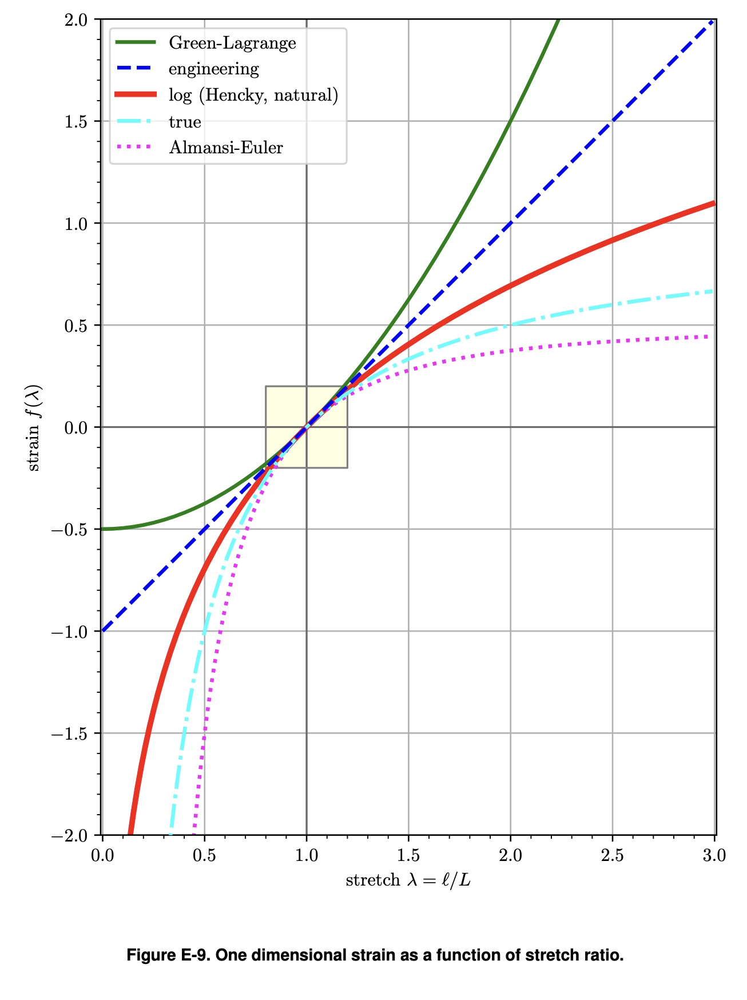
Source: Terpsma et al.3
The figure illustrates several results:
- For small stretches, , (a) the stretch ratio is near unity, , (b) the strain values are small, , and (c) the tangent of the strains with respect to the stretch ratio is near unity, .
- For elongations, , the strain monotonically increases since when .
- For extreme compressions, , (a) the Green-Lagrange strain goes to a value of , (b) the engineering (Biot, nominal) strain tensor goes to a value of , and (c) the log, true, and Eulerian strains tend to .
- The engineering (Biot, nominal) strain is a linear function of stretch ; all other measures are nonlinear functions of stretch .
Neff (2013)4 suggested "reasonable requirements" on , summarized in the table below, wherein a "+" indicates the requirement is satisfied and a "−" indicates the requirement is not satisfied.
| Requirement | |||||
|---|---|---|---|---|---|
| is smooth | + | + | + | + | + |
| is monotonically increasing | + | + | + | + | + |
| + | + | + | + | + | |
| + | + | + | + | + | |
| as , | + | + | + | − | − |
| as , | − | − | + | + | + |
| − | − | + | − | − | |
| for | − | − | + | − | − |
The results above illustrate that the log strain retains more of the desired qualities than any other strain tensor, in the context of finite compression and extension.5
- For infinitesimal deformation, all tensors converge to the infinitesimal strain tensor .
- For finite deformation, the Seth-Hill strain measures given by the function diverge quickly for both large compression and large tension.
The figure below illustrates the one-dimensional strains subtracted from the natural logarithmic strain, , as a function of stretch ratio . The log strain is considered as the finite deformation baseline.
The results show, for example, that in compression at , the Green-Lagrange strain tensor underreports the log strain by nearly 5%. Such a result illustrates that for finite deformation:
- Strain measures are not interchangeable, and
- It is ambiguous and incomplete to simply refer to "strain" as a deformation measure.
For finite deformation, both the strain value and the strain tensor must be specified.
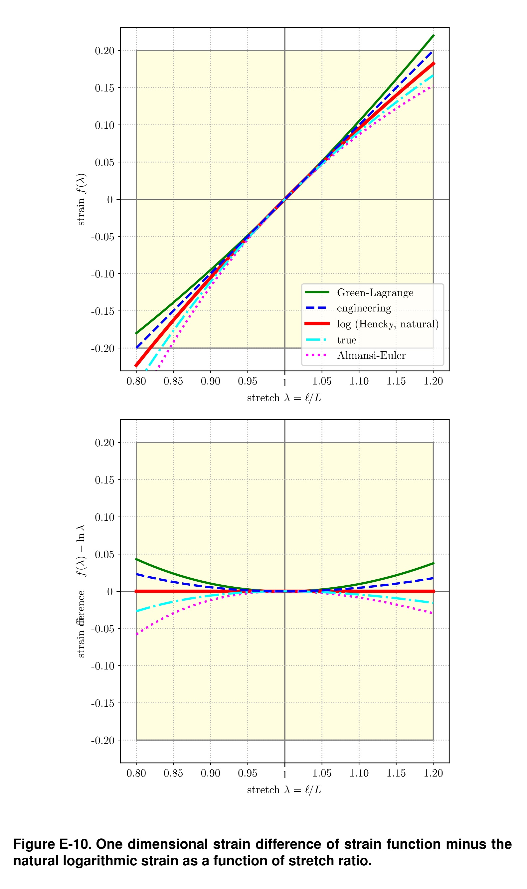
Source: Terpsma et al.3
Strain Tensors and Finite Rotations
Because it takes on nonzero values under finite rotation, the linearized strain tensor should not be used for geometrically nonlinear analysis. These nonzero values are completely artificial and strictly a result of using a linear strain definition with geometrically nonlinear motions. This result is shown as follows.
Let be a two-dimensional, rigid body rotation parameterized by time and scaled by constant radians per second. Then, the motion of a body can be written as
Then the deformation gradient is a function of time alone,
The linearized strain tensor is found to be
Now, for small angles, , which is for small deviations , , then for rigid body rotations. However, for arbitrary finite angles, , and the linearized strain tensor reports nonzero strain for rigid body rotations, which is nonsensical.
A correct strain tensor will report zero strain for rigid body rotations. One such strain tensor is the fully nonlinear Green-Lagrange strain tensor. This result is shown as follows:
Polar Decomposition
Given the rotation tensor , the material stretch tensor , and the spatial stretch tensor , the deformation gradient has the multiplicative decomposition,
Here we have a slight abuse of notation, where intermediate configurations that have stretched but not yet rotated are denoted with capital letter indices. Thus the "" subscript in is an intermediate stretched but non-rotated configuration.
The stretch tensors and are both symmetric and positive definite. The rotation tensor is non-symmetric and orthogonal. The figure below shows the polar decomposition about a material point and fibers in its vicinity mapped to the spatial point with the same fibers mapped to .
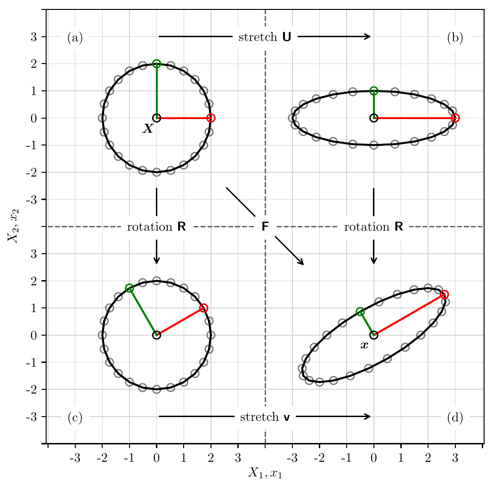
polar_decomposition.py.
Principal Stretches and Axes
The stretch tensors and have the same eigenvalues, , called principal stretches. For non-trivial rotations, i.e. , and have unique eigenvectors, called principal stretch directions. The principal stretch directions of are . The principal stretch directions of are . The two sets of eigenvectors are related through rotation ,
or generally,
Spectral Representation
The deformation gradient, its polar decomposition, and the Cauchy-Green deformations have spectral decompositions in terms of the principal stretches and stretch directions,
The Green-Lagrange strain tensor and the Almansi-Euler strain tensor , in principal stretches and stretch directions, are
The generalization of the Seth-Hill material strain tensor and spatial strain tensor , in principal stretches and stretch directions, are
and the relationship between the two strain tensors is given through a rotation transformation,
In the case when , the material and spatial logarithmic strain tensors, also known as the Hencky material and spatial strain tensors, and , are obtained as6
Two concrete illustrations follow: Rigid Body Motion works through pure translation as the simplest possible deformation, and Simple Shear works through an isochoric shear in closed form, computing , , , , and explicitly.
-
Note that , while typically zero, may be any real number less than . ↩
-
Technically, can be any real number, not just an integer. ↩
-
Terpsma RJ, Hovey CB. Blunt impact brain injury using cellular injury criterion. Sandia National Lab. (SNL-NM), Albuquerque, NM (United States); 2020 Oct 1. link ↩ ↩2
-
Neff, P. (2013). The Hencky strain measure is the geodesic distance to SO(), at 6. ↩
-
The Bažant strain, , not considered here, also satisfies . ↩
-
See Xiao H, Bruhns OT, Meyers A. Hypo-elasticity model based upon the logarithmic stress rate. Journal of Elasticity. 1997 Apr 1;47(1):51-68, at page 54, Eq. (2.2). ↩
Rigid Body Motion
Translation
A translation is a homogeneous deformation of the form
This deformation occurs when the displacement is a constant , and thus not a function of reference position or time .
For the concrete example in the figure below, let . In this case, we see the placement moves right and up on the page, relative to the reference configuration , by an amount of 3 and 2, respectively. The reference configuration is shown in blue. The current configuration is shown in red.
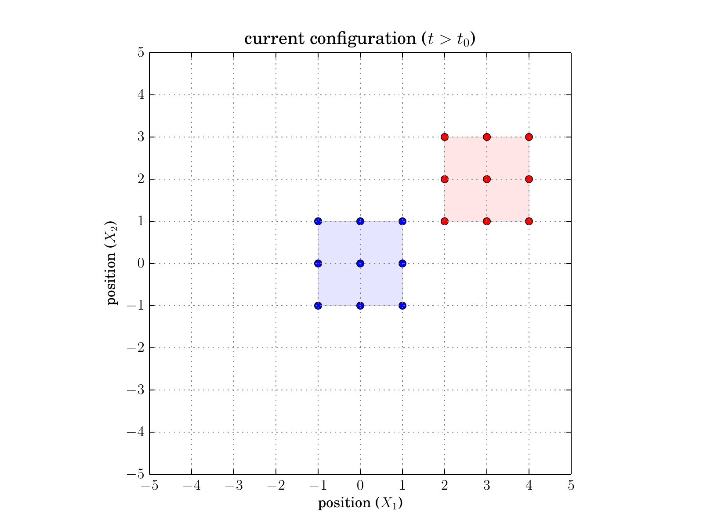
Simple Shear
Note: The source code for this section is listed below.
In this section, we cover simple shear, a deformation that illustrates several concepts without being too complicated. That said, we will find that simple shear isn't quite as trivial as its name would suggest. In fact, a paper titled Simple shear is not so simple1 reviews some details not discussed here.
The figure below illustrates simple shear, with relative motion of planes normal to the vertical axis. For all configurations (reference and current):
- Horizontal fibers remain horizontal.
- The length of horizontal fibers remains constant.
- The vertical distance between the horizontal fibers remains constant.
- The body's volume is constant. The deformation is isochoric since .
The relative motion is characterized by the non-dimensional ratio of length per unit height, where . The angle, , subtended by simple shear is . In the limit as , the shear angle . For small values of , the small-angle assumption is valid, with .
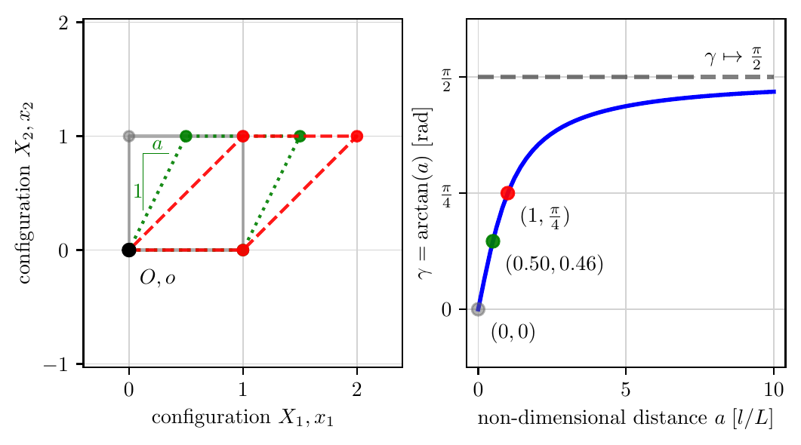
Source: simple_shear.py
Rate-Independent Form
The simple shear deformation in rate-independent form is
The deformation gradient is
Note that the volume remains constant for all deformations since . The deformation thus belongs to the group of isochoric motions. The right Cauchy-Green strain, , in simple shear, is
The principal directions of are given with the three eigenvectors and their respective eigenvalues ,
For simple shear, the eigenvalues of and their corresponding eigenvectors, satisfying , are
The Green-Lagrange strain, , in simple shear is
The left Cauchy-Green strain, , (and its inverse), in simple shear, are
The Almansi-Euler strain, , for simple shear is
Source
simple_shear.py
"""Demonstrate simple shear deformation of a square body."""
from typing import Tuple
import os
import numpy as np
from numpy.typing import NDArray
from matplotlib import rc
import matplotlib.pyplot as plt
from matplotlib.ticker import MultipleLocator
rc("text", usetex=True)
# rc('font', **{'family': 'serif', 'serif': ['Computer Modern Roman']})
rc("font", family="serif")
def rotate(x0: NDArray, y0: NDArray, rotation: float) -> Tuple[NDArray, NDArray]:
"""Given list of reference points (x0, y0), rotate them about the
z-axis by rotation angle (radians) to the current points (x1, y1).
"""
x1 = np.cos(rotation) * x0 - np.sin(rotation) * y0
y1 = np.sin(rotation) * x0 + np.cos(rotation) * y0
return x1, y1
def simple_shear(x0: NDArray, y0: NDArray, shear: float) -> Tuple[NDArray, NDArray]:
"""Given a list of reference points (x0, y0), simple shear them in
the x-axis by distance shear_x (Length) to the current points (x1, y1).
"""
x1 = x0 + shear * y0
y1 = y0
return x1, y1
def draw_shape(
axis,
xs: np.ndarray,
ys: np.ndarray,
color: str = "dimgray",
linestyle: str = "-",
alpha: float = 1.0,
):
"""Draw the body and points."""
# Draw body outline
axis.plot(
xs,
ys,
color=color,
linestyle=linestyle,
alpha=alpha,
) # body outline
# Plot points on the body
axis.plot(xs, ys, "o", color=color, markersize=5, alpha=alpha)
SHOW = False
SAVE = True
fig = plt.figure(figsize=(6, 3)) # inches, (wide, tall)
ax1 = fig.add_subplot(1, 2, 1)
ax2 = fig.add_subplot(1, 2, 2)
# Subfigure 1
OFFSET_X = 0
OFFSET_Y = 0
RADTODEG = 180.0 / np.pi
DEGTORAD = 1.0 / RADTODEG
# Defined reference configuration path, in a closed circle
xs_0 = np.array([0, 1, 1, 0, 0])
ys_0 = np.array([0, 0, 1, 1, 0])
# Draw reference shape
draw_shape(axis=ax1, xs=xs_0, ys=ys_0, color="dimgray", linestyle="-", alpha=0.5)
# Draw first sheared shape
SHEAR_1 = 0.5
(xs_1, ys_1) = simple_shear(xs_0, ys_0, shear=SHEAR_1)
draw_shape(axis=ax1, xs=xs_1, ys=ys_1, color="green", linestyle=":", alpha=0.9)
# Draw second sheared shape
SHEAR_2 = 1.0
(xs_2, ys_2) = simple_shear(xs_0, ys_0, shear=SHEAR_2)
draw_shape(axis=ax1, xs=xs_2, ys=ys_2, color="red", linestyle="--", alpha=0.9)
# Draw origin point
ax1.plot(0, 0, "o", color="black", label="origin = (0, 0, 0)")
# Draw origin label
ax1.text(0.25, -0.25, r"$O, o$", ha="center", va="center")
# Draw 1:a rise over run lines
SCALE = 0.90 # scale
HAIRLINE_OFFSET_Y = 0.1
epsx, epsy = 0.125, 0.25 + HAIRLINE_OFFSET_Y
slope_x, slope_y = np.array([0, 0, 0.25]) * SCALE, np.array([0, 0.5, 0.5])
ax1.plot(slope_x + epsx, slope_y + epsy, lw=0.5, color="green")
ax1.text(0.125, 0.5, "1", color="green", ha="right", va="center")
ax1.text(0.25, 0.88, r"$a$", color="green", ha="center")
# SHEAR_12 = 0.5 # Length units, shear in the X_1 direction
# draw(ax1, ux=OFFSET_Y, uy=OFFSET_Y, ur=dr, shear=SHEAR_12, t0=False, c="green", ls=":")
# SHEAR_12 = 1.0 # Length units, shear in the X_1 direction, larger shear
# draw(ax1, ux=OFFSET_X, uy=OFFSET_X, ur=dr, shear=SHEAR_12, t0=False, c="red", ls="--")
ax1.axis("equal")
# ax2.axis('equal')
# major axes
ax1.xaxis.set_major_locator(MultipleLocator(1.0))
ax1.yaxis.set_major_locator(MultipleLocator(1.0))
ax2.xaxis.set_major_locator(MultipleLocator(1.0))
ax2.yaxis.set_major_locator(MultipleLocator(1.0))
# minor axes
# ax1.xaxis.set_minor_locator(MultipleLocator(0.5))
# ax1.yaxis.set_minor_locator(MultipleLocator(0.5))
ax1.grid(
visible=True, which="major", linestyle="solid", linewidth=0.5, color="lightgray"
) # FIX APPLIED HERE
ax2.grid(
visible=True, which="major", linestyle="solid", linewidth=0.5, color="lightgray"
) # FIX APPLIED HERE
#
# ax.grid(b=True, which='minor', linestyle=':')
ax1.set_xlabel(r"configuration $X_1, x_1$")
ax1.set_ylabel(r"configuration $X_2, x_2$")
# Subfigure 2
X_MIN = 0
X_MAX = 10
epsx, epsy = 0.4, np.pi / 16
x = np.linspace(X_MIN, X_MAX)
y = np.arctan(x)
ax2.plot(x, y, linewidth=2, color="blue")
ax2.text(
X_MAX - epsx,
np.pi / 2 + epsy / 2,
r"$\gamma \mapsto \frac{\pi}{2}$",
ha="right",
backgroundcolor="white",
)
ax2.plot(
[X_MIN, X_MAX],
np.pi / 2 * np.array([1, 1]),
lw=2,
alpha=0.5,
color="black",
linestyle="--",
zorder=4,
)
ax2.plot(0, 0, "o", color="dimgray", alpha=0.5, zorder=4)
ax2.text(0 + epsx, 0 - epsy, r"$(0, 0)$", backgroundcolor="white")
ax2.plot(0.5, 0.46, "o", color="green", alpha=0.9, zorder=4)
ax2.text(0.50 + epsx, 0.46 - epsy, r"$(0.50, 0.46)$", backgroundcolor="white")
ax2.plot(1, np.pi / 4, "o", color="red", alpha=0.9, zorder=4)
ax2.text(1 + epsx, np.pi / 4 - epsy, r"$(1, \frac{\pi}{4})$", backgroundcolor="white")
ax2.set_xlabel(r"non-dimensional distance $a\;[l/L]$")
ax2.set_ylabel(r"$\gamma = \arctan(a)$ [rad]")
# https://matplotlib.org/3.1.1/gallery/ticks_and_spines/tick-locators.html
# ax2.xaxis.set_major_locator(ticker.FixedLocator([0, 5, 10]))
ax2.set_xticks([0, 5, 10])
ax2.set_yticks([0, np.pi / 4, np.pi / 2])
ax2.set_yticklabels(["0", r"$\frac{\pi}{4}$", r"$\frac{\pi}{2}$"])
ax1.set_xlim(-epsx, 2 + epsx)
ax2.set_xlim(0 - epsx, X_MAX + epsx)
eps = np.pi / 8
ax2.set_ylim(0 * np.pi / 4 - eps, np.pi / 2 + eps)
if SHOW:
plt.show()
if SAVE:
script_name = os.path.basename(__file__)
figure_name = os.path.splitext(script_name)[0]
print(f"Saving figure as {figure_name}.pdf")
fig.savefig(figure_name + ".pdf", bbox_inches="tight")
References
-
Destrade M, Murphy JG, Saccomandi G. Simple shear is not so simple. International Journal of Non-Linear Mechanics. 2012 Mar 1;47(2):210-4. download ↩
Finite Element Method
A finite element mesh is a collection of nodes (points) connected into elements — small regions used to interpolate a quantity of interest (e.g. displacement) across the whole domain. Multi-Point Motion (covered later in this book) builds exactly this kind of nodal point collection and, in Tracking the Grid, tracks every one of its 12 points to its current position — exactly the per-node displacement data a mesh needs to represent how an object deformed.
Tracking the Grid also covers the kernel-size-versus-point-spacing tradeoff involved in getting that per-node data reliably — the same considerations apply whether the points come from a toy grid or a real mesh.
Once every node's current position is known, an actual finite element mesh still needs one more thing this page doesn't provide: element connectivity — which nodes join together into which elements. Building that connectivity is future work, not implemented here; what this page covers below is the element formulation that connectivity would plug into — shape functions, strain, and deformation gradient, for the four-node quadrilateral element.
Four-Noded Quadrilateral Finite Element (Q4)
The four-node quadrilateral element is one of the most commonly used elements in 2D FEA. It has four corner nodes, with each node having two degrees of freedom (DOFs): displacements in the and directions.
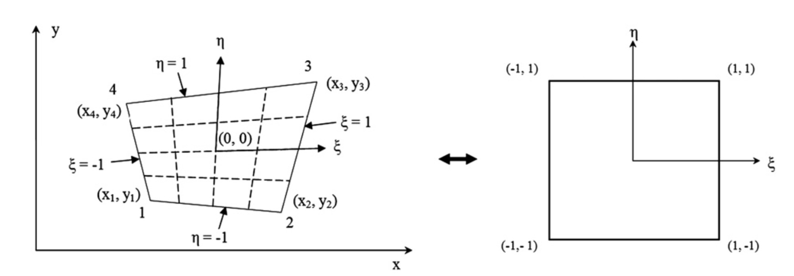
Image credit: James et al.1
Note: Since we are using a finite deformation continuum mechanics framework, we will use and (instead of and in the James et al. figure above).
Shape Functions
For the element in local coordinates , the bilinear shape functions are defined:
The shape functions satisfy the following properties:
- Kronecker delta property: (equals 1 at node , 0 at other nodes)
- Partition of unity: for all
Local Coordinates
The key concept in finite element analysis is the isoparametric mapping between the local coordinate system and the global coordinate system.
This mapping allows:
- Integration to be performed on the local domain (parent element)
- Handling of arbitrarily shaped quadrilaterals
- Use of the same shape functions for geometry and displacement (isoparametric concept)
The isoparametric coordinates range from to in both the and directions.
The mapping between global coordinates and local coordinates is introduced as a linear combination of local shape functions :
where is the position of node , and .
Shape Function Derivatives in Local Coordinates
The derivatives with respect to the local coordinate system are
These are assembled into a matrix:
Jacobian Matrix
The Jacobian matrix relates derivatives in local coordinates to derivatives in global coordinates. It is important to include the "matrix" part of "Jacobian matrix". It is distinct from the Jacobian of the Deformation Gradient , which is a scalar value (not a matrix). For nodal coordinates organized as:
the Jacobian matrix is computed as:
The individual components (dropping the reference configuration notation to avoid subscript confusion) are:
Shape Function Derivatives in Global Coordinates
The transformation from local to global coordinate derivatives requires the inverse Jacobian matrix through the chain rule. Since
then
In matrix form for all shape functions:
where:
Displacement Field
The displacement is defined as the difference between the current configuration and the reference configuration ,
The displacement field within the element is interpolated using shape functions:
where is the respective displacement of node , and .
Displacement Gradient
Each component is computed using the chain rule:
In compact matrix notation:
where is the nodal displacement matrix:
See Displacement Gradient for more information.
Deformation Gradient
The deformation gradient tensor maps material points in the reference configuration to their positions in the current (deformed) configuration :
Because ,
Explicitly:
The determinant represents the local volume ratio and must be positive for physically admissible deformations. See Deformation Gradient and Jacobian of the Deformation Gradient for more information.
Gauss Points
To evaluate quantities that depend on the displacement field and its gradient, such as strain, we use Gaussian Quadrature. We don't typically calculate quantities at the nodes. Rather, we quantify strain at specific integration points (also known as Gauss points) where mathematical precision is the highest.
For a 2D quadrilateral element, we typically use a Gauss rule. The integration points are located in the local coordinate system at
References
-
James KA, Lee E, Martins JR. Stress-based topology optimization using an isoparametric level set method. Finite Elements in Analysis and Design. 2012 Oct 1;58:20-30. link ↩
Image Generation
The source for the commands on this page is
dictk's ownrosta,checkerboard, andastronautsubcommands — seedictk --help.
Note: the images embedded on this page are rendered as PNG (
--format png), notdictk's default TIFF. Browsers don't natively render TIFF in<img>tags, so a TIFF embedded here simply wouldn't display.Among the alternatives, PNG also wins on its own merits: it is lossless, whereas JPG's compression tends to smear hard edges and speckle-pattern detail (for the 200x200 checkerboard on this page: TIFF 40,256 bytes, JPG 6,760 bytes, PNG only 418 bytes — JPG is actually larger than PNG here, because its block-based compression is a poor fit for hard-edged content like a checkerboard). SVG doesn't help either: since there's no vector structure to trace,
dictk's SVG output just wraps that same PNG in a base64-encoded XML container, which comes out to 809 bytes here — roughly double the raw PNG for no rendering benefit.TIFF remains
dictk's command-line default, since it's the lossless, uncompressed format conventionally used for DIC and other scientific-imaging workflows.
CLI vs. API: the Command Line Interface (CLI) subcommands on this page (
dictk rosta,dictk checkerboard,dictk astronaut) write an image file to disk — that's their whole job. The corresponding Python functions,dictk.rosta,dictk.checkerboard, anddictk.astronaut, take the same parameters but perform no file I/O: they return a NumPy array only. That keeps the Python API composable in a functional style — arrays can be piped through further functions (e.g.combinebelow) before anything touches disk — and callers who do want a file calldictk.image.writeexplicitly, as a separate step. See each function's docstring (rendered in the API reference) for details.
Rosta
We create a synthetic example speckle pattern with the built-in rosta
image generator. It implements the Rosta algorithm described by
Olufsen (Olufsen SN,
Andersen ME, Fagerholt E. muDIC: An open-source toolkit for digital image
correlation. SoftwareX. 2020 Jan 1;11:100391, Algorithm 1, page 6,
repository).
The help text for rosta:
dictk rosta --help
returns
usage: dictk rosta [-h] [--dot-size DOT_SIZE] [--density DENSITY]
[--smoothness SMOOTHNESS] [--random-seed RANDOM_SEED]
[--output OUTPUT] [--format {tiff,png,jpg,svg}]
[width] [height]
positional arguments:
width Image width in pixels (int), default: 200.
height Image height in pixels (int), default: 200.
options:
-h, --help show this help message and exit
--dot-size DOT_SIZE, -s DOT_SIZE
Dot pattern size factor, 0.0 to 100.0 (float),
default: 4.0.
--density DENSITY, -d DENSITY
Dot pattern density, 0.0 to 1.0 (float), default:
0.32.
--smoothness SMOOTHNESS, -m SMOOTHNESS
Smoothness factor, 0.0 to 100.0 (float), default: 2.0.
--random-seed RANDOM_SEED, -r RANDOM_SEED
Seed for reproducible pattern generation (int),
default: 42.
--output OUTPUT, -o OUTPUT
Output directory (path), default: current directory.
--format {tiff,png,jpg,svg}, -f {tiff,png,jpg,svg}
Output image format (str), default: tiff.
Create a synthetic image, 200 by 200 pixels, 50% dot density:
dictk rosta 200 200 --density 0.5 --format png -o .
Saved image: rosta_200w_by_200h_dot_4.0_den_0.5_smo_2.0.png
Note that the file name is automatically chosen based on the input parameters.
The result:
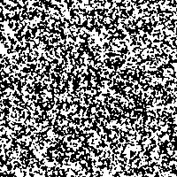
The Python equivalent returns the same pixel data as a NumPy array, with no file written:
import dictk
pattern = dictk.rosta(width=200, height=200, density=0.5)
shape=(200, 200), dtype=uint8
Checkerboard
To make it easier to manually identify discrete points in the speckle
pattern, dictk can also generate a checkerboard test image.
The help text for checkerboard:
dictk checkerboard --help
returns
usage: dictk checkerboard [-h] [--count-x COUNT_X] [--count-y COUNT_Y]
[--output OUTPUT] [--format {tiff,png,jpg,svg}]
[width] [height]
positional arguments:
width Image width in pixels (int), default: 200.
height Image height in pixels (int), default: 200.
options:
-h, --help show this help message and exit
--count-x COUNT_X, -x COUNT_X
Number of rectangles along the width (int), default:
8.
--count-y COUNT_Y, -y COUNT_Y
Number of rectangles along the height (int), default:
8.
--output OUTPUT, -o OUTPUT
Output directory (path), default: current directory.
--format {tiff,png,jpg,svg}, -f {tiff,png,jpg,svg}
Output image format (str), default: tiff.
Create a synthetic image, 200 by 200 pixels:
dictk checkerboard 200 200 --format png -o .
Saved image: checkerboard_200w_by_200h_8x8.png
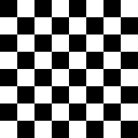
The Python equivalent, again returning an array with no file written:
import dictk
board = dictk.checkerboard(width=200, height=200)
shape=(200, 200), dtype=uint8
Astronaut
Unlike rosta and checkerboard, which procedurally generate a fresh
synthetic pattern from parameters, astronaut loads a bundled real-world
photograph and converts it to grayscale — useful for exercising dictk's
imaging utilities against something other than a synthetic pattern. The
source is a NASA portrait of astronaut Eileen Collins, from the NASA Great
Images database ("No known copyright restrictions, released into the
public domain."). Its native resolution is 512x512; passing width/
height other than that resizes the source image rather than generating a
new one at that size.
The help text for astronaut:
dictk astronaut --help
returns
usage: dictk astronaut [-h] [--output OUTPUT] [--format {tiff,png,jpg,svg}]
[width] [height]
positional arguments:
width Image width in pixels (int), default: 512.
height Image height in pixels (int), default: 512.
options:
-h, --help show this help message and exit
--output OUTPUT, -o OUTPUT
Output directory (path), default: current directory.
--format {tiff,png,jpg,svg}, -f {tiff,png,jpg,svg}
Output image format (str), default: tiff.
Save it at 300 by 300 pixels — smaller downscales from the native 512x512 start to lose too much detail:
dictk astronaut 300 300 --format png -o .
Saved image: astronaut_300w_by_300h.png

The Python equivalent, again returning an array with no file written:
import dictk
photo = dictk.astronaut(width=300, height=300)
shape=(300, 300), dtype=uint8
Combining into a reference image
combine works on any
two grayscale images of the same shape, so it isn't limited to combining
the two synthetic images below —
Speckle + Astronaut further down combines rosta
with a real photograph instead.
Speckle + Checkerboard
We combine the rosta speckle pattern with the checkerboard into a
reference image checkerboard0 by averaging their pixel values and
normalizing back to uint8:
from dictk.image import combine, read, write
speckle = read(path="rosta_200w_by_200h_dot_4.0_den_0.5_smo_2.0.png")
checker = read(path="checkerboard_200w_by_200h_8x8.png")
checkerboard0 = combine(a=speckle, b=checker)
write(arr=checkerboard0, path="checkerboard0.png")
Saved image: checkerboard0.png

Because both inputs are averaged and rescaled together, the checkerboard's squares stay clearly black or white while the speckle pattern shows up as gray texture within them:
- Where the checkerboard is black, speckle white maps to gray and speckle black stays black.
- Where the checkerboard is white, speckle black maps to gray and speckle white stays white.
That trimodal structure is visible in the pixel-intensity histograms below:
speckle and checkerboard are both roughly bimodal (dark/light), while
checkerboard0 picks up a distinct middle hump from the
black/white-speckle-on-opposite checkerboard combinations.
from dictk.image import read
from dictk.plot import histogram_save
speckle = read(path="rosta_200w_by_200h_dot_4.0_den_0.5_smo_2.0.png")
checker = read(path="checkerboard_200w_by_200h_8x8.png")
checkerboard0 = read(path="checkerboard0.png")
histogram_save(arr=speckle, path="rosta_histogram.png")
histogram_save(arr=checker, path="checkerboard_histogram.png")
histogram_save(arr=checkerboard0, path="checkerboard0_histogram.png")
Saved histograms: rosta_histogram.png, checkerboard_histogram.png, checkerboard0_histogram.png
| rosta | checkerboard | checkerboard0 |
|---|---|---|
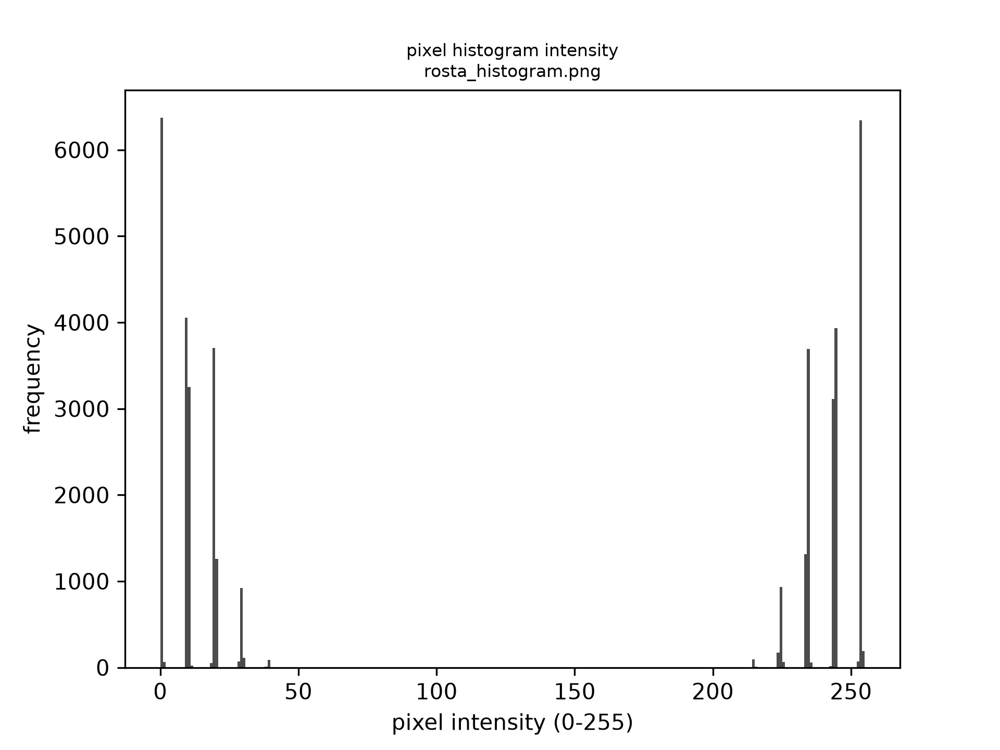 | 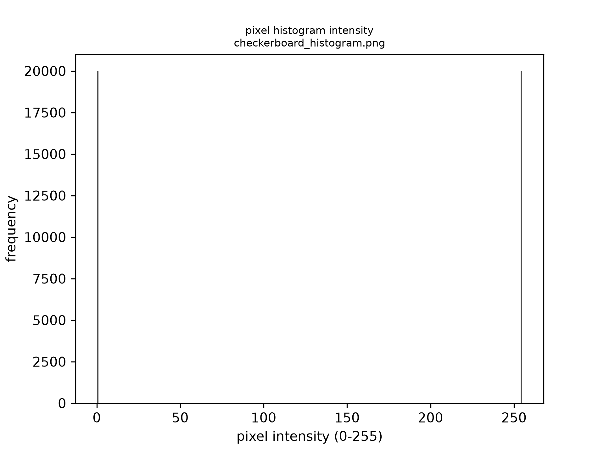 |  |
Speckle + Astronaut
The checkerboard above is a stand-in for an actual specimen — in a real
DIC setup, the speckle pattern is applied directly to the surface being
measured, not swapped in from another generator. Combining rosta with
the astronaut photo instead of the checkerboard is closer to that: a
speckle pattern overlaid on a realistic, non-uniform grayscale image.
This time the two source images are never written to disk at all — both
dictk.rosta and
dictk.astronaut return arrays directly,
which combine accepts
as-is, so only the combined result astronaut0 is saved:
import dictk
from dictk.image import combine, write
speckle = dictk.rosta(width=300, height=300, density=0.5)
photo = dictk.astronaut(width=300, height=300)
astronaut0 = combine(a=speckle, b=photo)
write(arr=astronaut0, path="astronaut0.png")
Saved image: astronaut0.png

Both checkerboard0.png and astronaut0.png are also bundled in
src/dictk/data/, alongside the source astronaut.png, so later examples
can reuse them without regenerating from scratch each time.
Subimage Generation
Now we consider extracting a subimage from a subject image. A subimage is a useful precursor to image computation: narrowing the data down to a region of interest makes the computation more efficient than considering the full image.
Reference Frames
When we have just a single image, we have a single, trivial reference
frame : origin (blue dot) at the top-left corner, with
the -axis (red) running left-to-right and the -axis (green)
running top-to-bottom. origin, and every pixel coordinate on this
page, is expressed in this frame — one that's always implicitly
present, even in the left panel below where nothing is drawn to show
it. astronaut0 here is the same reference image created in Image
Generation:
from dictk.image import read
from dictk.plot import reference_frame_plot
astronaut0 = read(path="astronaut0.png")
reference_frame_plot(image=astronaut0, path="reference_frame.png")
Saved: reference_frame.png
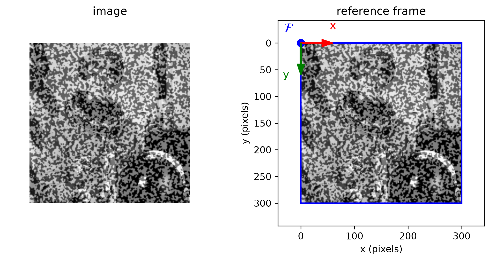
astronaut0 (300x300 pixels) alone. Right: the same image with its reference frame made explicit and labeled near the origin — origin (blue dot) at the top-left corner, -axis (red), and -axis (green), used throughout this page.When we extract a subimage from an image, it is useful to be explicit about reference frames: the subimage has its own frame , located within the image's frame . The Python API section below demonstrates this concept.
Python API
dictk.image.subimage extracts a
rectangular crop from a source image: a width x height region whose
top-left corner sits at origin. origin may place the requested
region partially or completely outside the source image — rather than
raising an error, subimage fills whatever doesn't overlap with black
(zero) pixels, so the result is always a well-formed height x width
array. This is the building block later tutorials use to pull a kernel
or search area out of a larger reference/current image pair around a
point of interest.
dictk.image.PixelCoordinate
is a simple (x, y) NamedTuple used for origin.
dictk.image.subimage itself
returns the cropped array directly, with no file written.
The examples below use
subimage_comparison_plot,
which saves a two-panel figure: the left panel shows where the region
falls relative to the source image (blue/red boxes), and the right panel
shows the extracted result on its own, in its own local frame
— sharing the same axis limits as the left panel so the
two red boxes render at matching scale. It's built from two smaller
single-panel functions, also available individually:
subimage_bounds_plot
(the left panel alone) and
subimage_plot (the right
panel alone, but zoomed to the subimage's own size rather than sharing
the source image's scale).
Square, fully inside
An 80x80 square region entirely within astronaut0's 300x300 bounds.
subimage_comparison_plot
draws both panels side by side, sharing the same axis limits, so the
red box in the right panel renders at identical scale to the one on the
left.
from dictk.image import PixelCoordinate
from dictk.plot import subimage_comparison_plot
origin = PixelCoordinate(x=100, y=40)
subimage_comparison_plot(image=astronaut0, origin=origin, width=80, height=80, path="subimage_comparison_80w_by_80h_at_100_40.png")
Saved: subimage_comparison_80w_by_80h_at_100_40.png
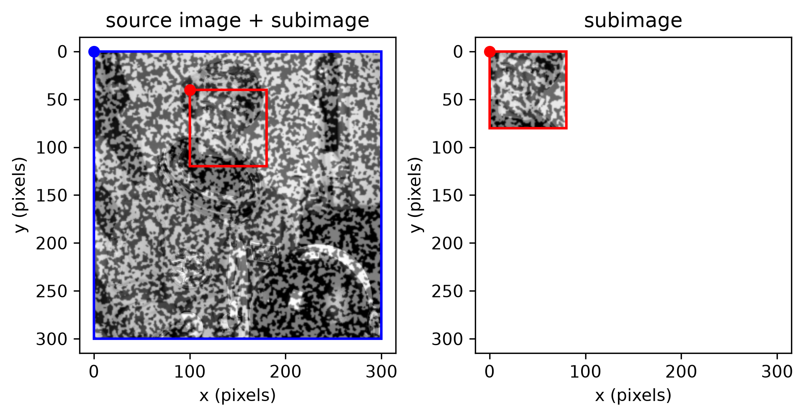
Rectangle, fully inside
A 180x70 region — wider than it is tall — also entirely within the source image bounds:
from dictk.image import PixelCoordinate
from dictk.plot import subimage_comparison_plot
origin = PixelCoordinate(x=50, y=200)
subimage_comparison_plot(image=astronaut0, origin=origin, width=180, height=70, path="subimage_comparison_180w_by_70h_at_50_200.png")
Saved: subimage_comparison_180w_by_70h_at_50_200.png
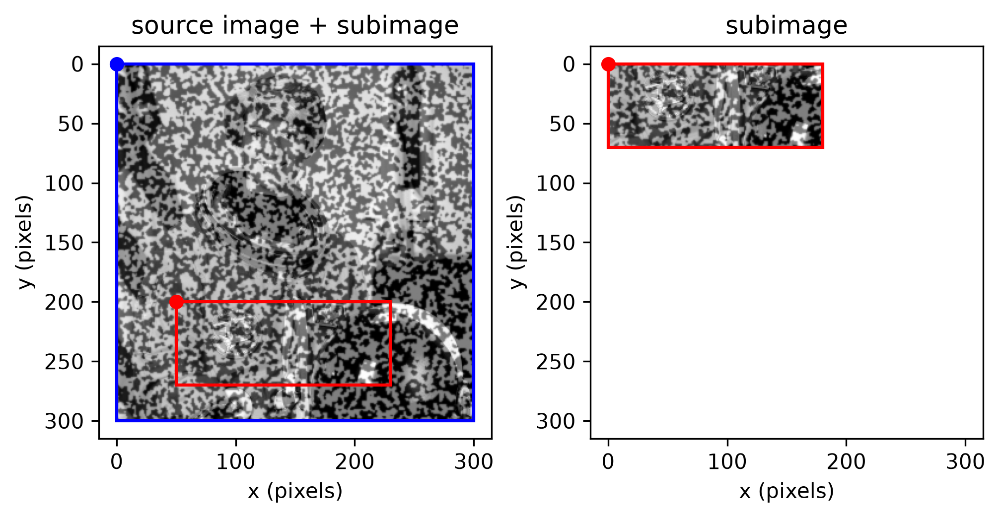
Partially outside
A 120x120 region with a negative origin, straddling the source image's
top-left corner. subimage fills the part of the region above and to
the left of the source with black:
from dictk.image import PixelCoordinate
from dictk.plot import subimage_comparison_plot
origin = PixelCoordinate(x=-20, y=-40)
subimage_comparison_plot(image=astronaut0, origin=origin, width=120, height=120, path="subimage_comparison_120w_by_120h_at_-20_-40.png")
Saved: subimage_comparison_120w_by_120h_at_-20_-40.png
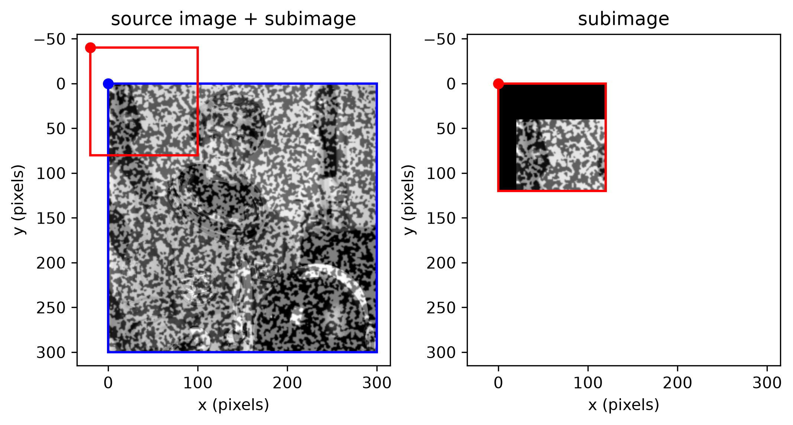
astronaut0.Completely outside
A 40x100 region entirely beyond the source image's bounds — its x-range (310 to 350) shares no pixels with the source's (0 to 300), so there is no overlap at all and the result is entirely black:
from dictk.image import PixelCoordinate
from dictk.plot import subimage_comparison_plot
origin = PixelCoordinate(x=310, y=250)
subimage_comparison_plot(image=astronaut0, origin=origin, width=40, height=100, path="subimage_comparison_40w_by_100h_at_310_250.png")
Saved: subimage_comparison_40w_by_100h_at_310_250.png
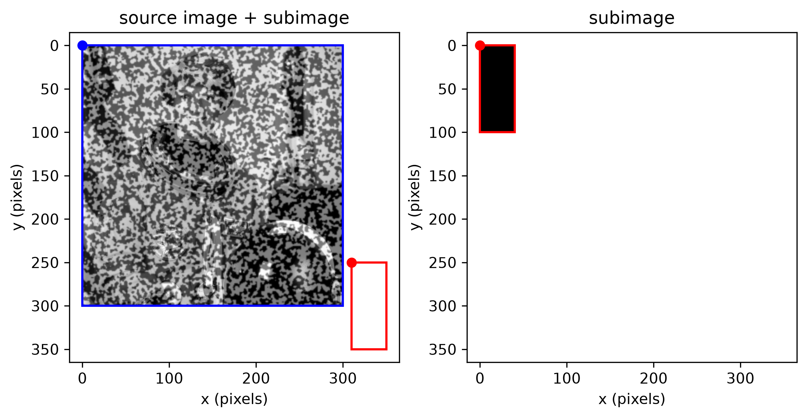
astronaut0.Image Preprocessing
Certain preprocessing steps can make digital image correlation more robust to differences between a reference and current image — some in pixel intensity, others in how well an image's content suits an FFT-based technique such as phase correlation.
- Brightness and Contrast shift and stretch the pixel-intensity histogram, the two most basic differences a reference and current image can have.
- Windowing tapers an image's edges toward zero before a Fourier transform, reducing spectral leakage.
Brightness and Contrast
This page covers two preprocessing steps that can make digital image correlation more robust to pixel-intensity differences between a reference and deformed image, using the astronaut reference image from Image Generation as an example.
Brightness
Brightness shifts the entire pixel-intensity histogram up or down by a constant amount — the whole image gets lighter or darker together, dark areas included. Pushed too far, dark regions wash out to a flat gray and highlights clip at pure white (255), permanently losing detail.
import dictk
from dictk.image import brightness, write
from dictk.plot import histogram_save
photo = dictk.astronaut(width=300, height=300)
write(arr=photo, path="astronaut_original.png")
histogram_save(arr=photo, path="astronaut_original_histogram.png")
bright_1_5 = brightness(arr=photo, factor=1.5)
write(arr=bright_1_5, path="astronaut_brightness_1.5.png")
histogram_save(arr=bright_1_5, path="astronaut_brightness_1.5_histogram.png")
bright_2_0 = brightness(arr=photo, factor=2.0)
write(arr=bright_2_0, path="astronaut_brightness_2.0.png")
histogram_save(arr=bright_2_0, path="astronaut_brightness_2.0_histogram.png")
Saved: astronaut_original.png, astronaut_brightness_1.5.png, astronaut_brightness_2.0.png
| factor=1.0 (original) | factor=1.5 | factor=2.0 |
|---|---|---|
 |  |
| factor=1.0 (original) | factor=1.5 | factor=2.0 |
|---|---|---|
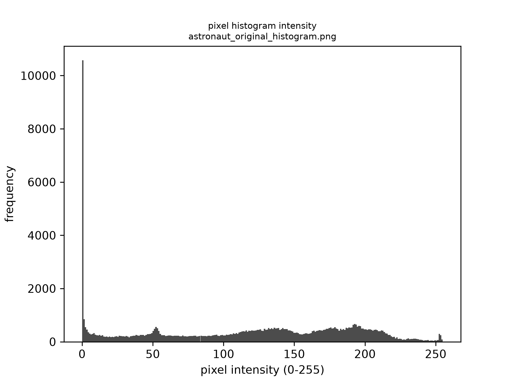 | 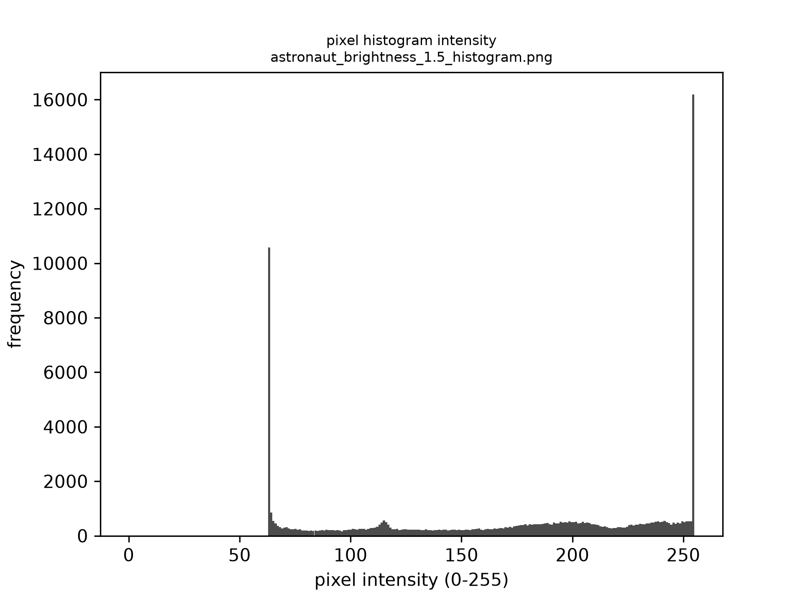 |  |
At factor=1.5 the histogram shifts right as a whole — midtones move into the brighter half and the mean climbs, with a few highlights starting to clip at 255. At factor=2.0 the shift is large enough that a big share of pixels pile up at that 255 ceiling, visible as a tall spike at the histogram's right edge: real detail that's been clipped away and can't be recovered.
Contrast
Contrast is the spread between an image's darkest and lightest pixels. Increasing contrast stretches the histogram outward from its own mean — darks get darker, lights get lighter — while the mean itself stays roughly where it was.
import dictk
from dictk.image import contrast, write
from dictk.plot import histogram_save
photo = dictk.astronaut(width=300, height=300)
contrast_1_5 = contrast(arr=photo, factor=1.5)
write(arr=contrast_1_5, path="astronaut_contrast_1.5.png")
histogram_save(arr=contrast_1_5, path="astronaut_contrast_1.5_histogram.png")
contrast_2_0 = contrast(arr=photo, factor=2.0)
write(arr=contrast_2_0, path="astronaut_contrast_2.0.png")
histogram_save(arr=contrast_2_0, path="astronaut_contrast_2.0_histogram.png")
Saved: astronaut_contrast_1.5.png, astronaut_contrast_2.0.png
| factor=1.0 (original) | factor=1.5 | factor=2.0 |
|---|---|---|
|  |  |
| factor=1.0 (original) | factor=1.5 | factor=2.0 |
|---|---|---|
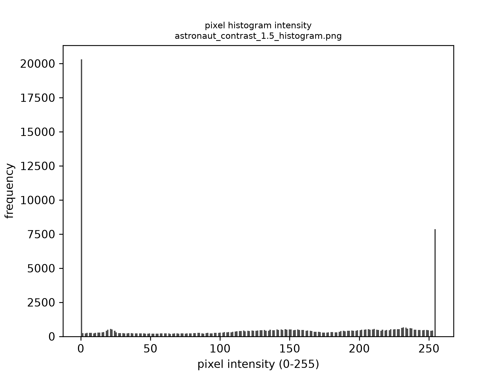 |  |
At factor=1.5 the histogram spreads outward from the mean rather than shifting — the astronaut's silhouette and helmet edges get sharper, while the mean barely moves. At factor=2.0 the spread is wide enough that more pixels pile up at both the 0 and 255 ends, crushing fine midtone detail even as high-contrast edges sharpen further.
Key Insight: Contrast stretches the histogram, while brightness translates it.
Windowing
The FFT implicitly treats an image as one period of an infinitely-repeating signal. If the content doesn't tile seamlessly, which is the general case since nothing arranges an image's edges to match up, that discontinuity leaks energy across many frequencies rather than the few the underlying content actually has, an effect called spectral leakage. In a correlation surface, leakage broadens and can shift the peak, hurting the precision of any technique that searches that surface for a match.
Windowing counters this by tapering an image's edges toward zero before transforming it, so the (still discontinuous, but now near-zero) seam contributes far less energy. Two standard 1D windows, applied to an image by taking the outer product of a window with itself along each axis:
for across a window of length . Hann tapers all the way to exactly zero at both ends; Hamming stops short (around ), trading a little residual discontinuity for a narrower main lobe in the transformed signal.
See Harris FJ. "On the use of windows for harmonic analysis with the discrete Fourier transform." Proceedings of the IEEE 1978;66(1):51-83. A U.S. government work, not protected by U.S. copyright.
window()
dictk.correlation.window
applies either taper to a 2D array. This reuses kernel from Cross
Correlation (CC) and the Fourier
Domain section of Correlation
Criteria — the same checkerboard0, p0, and kernel_margin — to show
what tapering actually does to an image before it's passed to an FFT:
import numpy as np
import matplotlib.pyplot as plt
from dictk.image import read, PixelCoordinate, subimage, write
from dictk.correlation import window, WindowingMethod
reference_image = read(path="checkerboard0.png")
p0 = PixelCoordinate(x=100, y=75)
kernel_margin = 25
kernel = subimage(
image=reference_image,
origin=PixelCoordinate(x=p0.x - kernel_margin, y=p0.y - kernel_margin),
width=2 * kernel_margin,
height=2 * kernel_margin,
)
write(arr=kernel, path="windowing_kernel_original.png")
kernel_hann = window(arr=kernel, method=WindowingMethod.HANN)
write(arr=kernel_hann.astype(np.uint8), path="windowing_kernel_hann.png")
kernel_hamming = window(arr=kernel, method=WindowingMethod.HAMMING)
write(arr=kernel_hamming.astype(np.uint8), path="windowing_kernel_hamming.png")
# window()'s own weights, isolated from kernel's content: windowing an
# all-ones array leaves exactly the 2D weight array behind. A single row
# at the kernel's mid-height cuts through the row axis's own peak (~1.0),
# so what's left is each method's column-axis taper alone.
mid_row = kernel.shape[0] // 2
ones = np.ones_like(kernel, dtype=np.float64)
weight_profiles = {
"none": np.ones(kernel.shape[1]),
"hann": window(arr=ones, method=WindowingMethod.HANN)[mid_row, :],
"hamming": window(arr=ones, method=WindowingMethod.HAMMING)[mid_row, :],
}
for name, profile in weight_profiles.items():
fig, ax = plt.subplots(figsize=(4, 2.5), constrained_layout=True)
ax.plot(profile, color="black")
ax.set_ylim(-0.05, 1.05) # shared across all three, for a fair comparison
ax.set_xlabel("x (pixels)")
ax.set_ylabel("window weight")
fig.savefig(f"windowing_kernel_cut_{name}.png", dpi=300)
plt.close(fig)
Saved: windowing_kernel_original.png, windowing_kernel_hann.png, windowing_kernel_hamming.png, windowing_kernel_cut_none.png, windowing_kernel_cut_hann.png, windowing_kernel_cut_hamming.png
| none | Hann | Hamming |
|---|---|---|
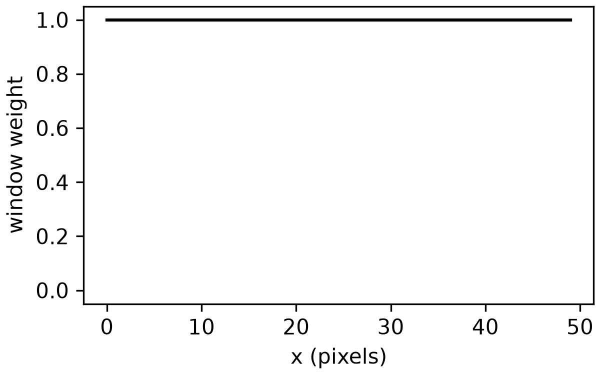 | 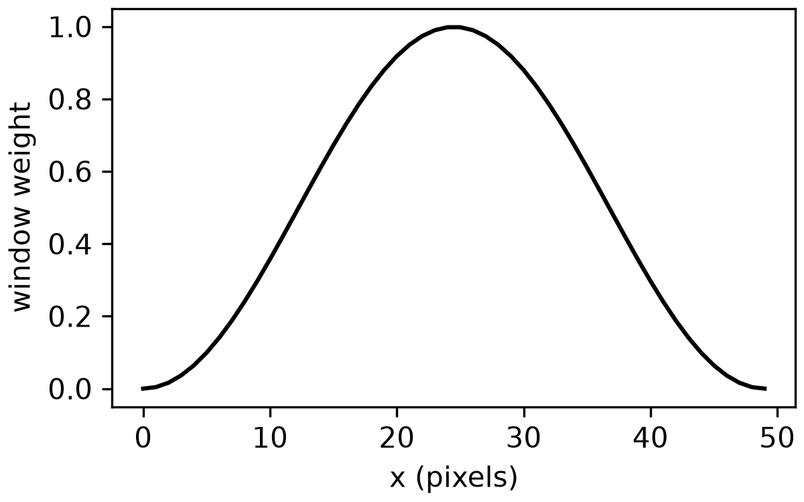 | 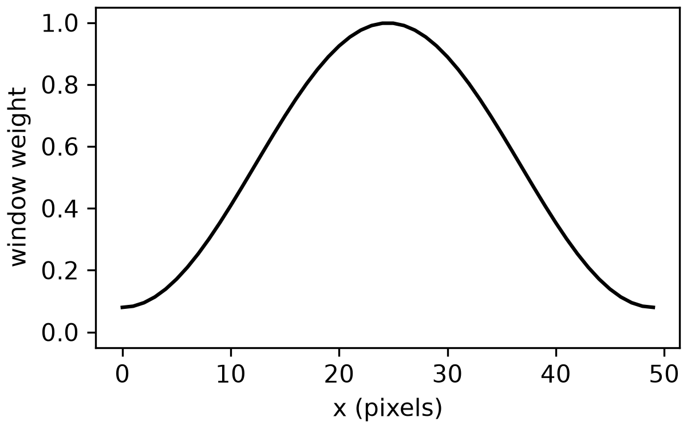 |
Every edge fades toward black; Hann's corners go fully black (tapers to exactly 0), while Hamming's stay a faint gray (tapers to of the original corner pixel, the product of both axes' own edge value).
The bottom row makes each method's own taper precise, independent of
checkerboard0's content: a horizontal cut through the window's weight
array at the kernel's mid-height, all three sharing the same -axis.
none is flat at everywhere -- no taper at all. Hann and Hamming
both peak at at that same mid-height (the row axis's own window is
near its own peak there), so this cut isolates the column axis's taper
alone: Hann reaches exactly at both edges, Hamming levels off at
-- not the smaller corner value above, since a corner is
where both axes are simultaneously at their own edge, and a mid-height
cut only ever passes through one axis's edge at a time.
See Correlation Visualization for windowing shown in action, tapering a real kernel and search area before they're compared.
Image Transformation
Image deformations, also called transformations in the computer vision literature (see Szeliski1), fall into the categories shown below:

Each category preserves a different, nested set of geometric properties — every property a category preserves is also preserved by every more restrictive category to its left:
| Property | Translation | Euclidean | Similarity | Affine | Projective |
|---|---|---|---|---|---|
| Straight lines stay straight | Yes | Yes | Yes | Yes | Yes |
| Parallel lines stay parallel | Yes | Yes | Yes | Yes | No |
| Angles preserved | Yes | Yes | Yes | No | No |
| Lengths/distances preserved | Yes | Yes | No | No | No |
| Absolute orientation preserved (no rotation) | Yes | No | No | No | No |
Pure Translation (Rigid Body Motion)
As the simplest of the categories above — no change in shape or size —
dictk.image.translate shifts
every pixel by a fixed displacement. This example shifts the image by
dx=-60 pixels in x and dy=+80 pixels in y, representing rigid-body
motion where the material moves without deforming.
import dictk
from dictk.image import translate, write
photo = dictk.astronaut(width=300, height=300)
write(arr=photo, path="astronaut_translate_original.png")
translated = translate(arr=photo, dx=-60, dy=80)
write(arr=translated, path="astronaut_translate_rigid_body.png")
Saved: astronaut_translate_original.png, astronaut_translate_rigid_body.png
| Translation | Image |
|---|---|
| Original |  |
| dx=-60, dy=+80 |
Pure Rotation
A 30° counterclockwise rotation, another rigid-body motion that preserves
distances and angles.
dictk.image.rotate pivots on the
image's top-left corner (0, 0), consistent with stretch and
translate's pivot choice in this codebase — unlike the more typical
"object spins in place" rotation about the center, most content swings
away from that fixed corner, similar to a door on a hinge.
import dictk
from dictk.image import rotate, write
photo = dictk.astronaut(width=300, height=300)
write(arr=photo, path="astronaut_rotate_original.png")
rotated = rotate(arr=photo, angle=30.0)
write(arr=rotated, path="astronaut_rotate_30deg.png")
Saved: astronaut_rotate_original.png, astronaut_rotate_30deg.png
| Rotation | Image |
|---|---|
| Original |  |
| 30° (origin-pivoted) |  |
X-Axis Stretch (Extension)
As a concrete example of the similarity category above,
dictk.image.stretch applies a
uniaxial stretch along the x-axis: the image's top-left corner (x=0, y=0)
stays fixed, and content grows away from it, using backward mapping with
bilinear interpolation so the result has no gaps (unlike naively moving
each source pixel forward, which can leave holes). The two stretches
below range from a small, realistic deformation (5%, similar in magnitude
to a modest tensile strain in a materials test) up to a much larger one
(50%).
import dictk
from dictk.image import stretch, write
photo = dictk.astronaut(width=300, height=300)
write(arr=photo, path="astronaut_stretch_original.png")
stretch_5pct = stretch(arr=photo, factor_x=1.05)
write(arr=stretch_5pct, path="astronaut_stretch_x_5pct.png")
stretch_50pct = stretch(arr=photo, factor_x=1.50)
write(arr=stretch_50pct, path="astronaut_stretch_x_50pct.png")
Saved: astronaut_stretch_original.png, astronaut_stretch_x_5pct.png, astronaut_stretch_x_50pct.png
| Stretch | Image |
|---|---|
| Original | |
| 5% (factor_x=1.05) |  |
| 50% (factor_x=1.50) |  |
Y-Axis Stretch (Compression)
The same dictk.image.stretch
function compresses along the y-axis with factor_y < 1.0. Pivoting on
the origin means the top edge (y=0) stays fixed while content shrinks
toward it, leaving a black margin along the bottom — the mirror image of
the x-axis stretch case, where growth away from the origin never leaves a
gap.
import dictk
from dictk.image import stretch, write
photo = dictk.astronaut(width=300, height=300)
write(arr=photo, path="astronaut_compress_original.png")
compress_neg5pct = stretch(arr=photo, factor_y=0.95)
write(arr=compress_neg5pct, path="astronaut_compress_y_neg5pct.png")
compress_neg50pct = stretch(arr=photo, factor_y=0.50)
write(arr=compress_neg50pct, path="astronaut_compress_y_neg50pct.png")
Saved: astronaut_compress_original.png, astronaut_compress_y_neg5pct.png, astronaut_compress_y_neg50pct.png
| Compression | Image |
|---|---|
| Original |  |
| -5% (factor_y=0.95) | |
| -50% (factor_y=0.50) |
Simple Shear
A shear deformation with γ = 0.5, where horizontal planes slide relative
to each other by an amount proportional to their y-coordinate — the
higher up a row of pixels, the further it shifts sideways.
dictk.image.shear pivots on the
image's top-left corner (0, 0), consistent with the other transform
functions in this codebase.
import dictk
from dictk.image import shear, write
photo = dictk.astronaut(width=300, height=300)
write(arr=photo, path="astronaut_shear_original.png")
sheared = shear(arr=photo, shear_x=0.5)
write(arr=sheared, path="astronaut_shear_x_0.5.png")
Saved: astronaut_shear_original.png, astronaut_shear_x_0.5.png
| Shear | Image |
|---|---|
| Original |  |
| γ = 0.5 (shear_x=0.5) |  |
Complex Deformation
Combines rotation (15°) with anisotropic stretching (1.3x in x, 0.8x in
y) — realistic loading scenarios where materials experience multiple
simultaneous deformation modes, typically the hardest case for
correlation algorithms.
dictk.image.complex_deform
composes the two into a single deformation gradient (stretch applied
first, then rotation) and applies it in one backward-mapping pass, so
the result isn't blurred by interpolating twice as calling stretch
and then rotate separately would.
import dictk
from dictk.image import complex_deform, write
photo = dictk.astronaut(width=300, height=300)
write(arr=photo, path="astronaut_complex_original.png")
combined = complex_deform(arr=photo, factor_x=1.3, factor_y=0.8, angle=15.0)
write(arr=combined, path="astronaut_complex_deform.png")
Saved: astronaut_complex_original.png, astronaut_complex_deform.png
| Composed Deformation | Image |
|---|---|
| Original |  |
| factor_x=1.3, factor_y=0.8, angle=15° |  |
Crack Dislocation
A vertical crack splits the image at x = width/2: the left half shifts down 4 pixels and the right half shifts up 4 pixels, producing a displacement field that jumps discontinuously across the crack line — unlike every other example on this page, which deforms smoothly. Standard DIC assumes smooth displacements and cannot capture this jump; cases like this motivate the Heaviside finite-element formulation.
import dictk
from dictk.image import crack_dislocation, write
photo = dictk.astronaut(width=300, height=300)
write(arr=photo, path="astronaut_crack_plain_original.png")
cracked_plain = crack_dislocation(arr=photo, offset=4.0)
write(arr=cracked_plain, path="astronaut_crack_plain_dislocation.png")
Saved: astronaut_crack_plain_original.png, astronaut_crack_plain_dislocation.png
| Crack Dislocation | Image |
|---|---|
| Original |  |
| offset=4 pixels |
References
-
Szeliski R. Computer vision: algorithms and applications, 2nd Edition, Springer Nature; 2022 Jan 3. download (43 MB) ↩
Single Point Motion
Consider a single point , fixed to a physical location on the object being imaged. In the reference image , this point is located at a known pixel location, for example pixels. This vector, from the origin of the reference image frame to the pixel point , locates the reference configuration. For brevity, we will use to denote the fully explicit vector .
Next, the object is moved (e.g., translated, rotated, stretched, or deformed — see Image Transformation). A second image , called the current image, is taken. Where is point from located in ? We label point 's found location in as . For brevity, we will use to denote the fully explicit vector .
Note that the camera itself has not moved, only the object and any point of interest on the object have moved. The origin and the reference frame are the same across the two images and .
The canonical problem solved by digital image correlation (DIC) is as follows:
- Given a point in image , find the location of that same point in image .
Below, we motivate this canonical problem with a simple example of a single
point translation. We first develop a manual solution to serve as the known
ground truth. Then, we illustrate how
dictk.translation.locate
solves this problem numerically via DIC.
Reference Configuration
The examples below reuse checkerboard0, the speckle pattern combined
with the checkerboard introduced in Image
Generation. This will be the
reference_image, matching locate's own parameter name:
from dictk.image import read, PixelCoordinate
from dictk.plot import point_plot, ArrowAnnotation
reference_image = read(path="checkerboard0.png")
p0 = PixelCoordinate(x=100, y=75)
point_plot(
image=reference_image,
arrows=[
ArrowAnnotation(
tail=PixelCoordinate(x=0, y=0), head=p0, color="orange", label=r"$\boldsymbol{p}_0$"
)
],
figsize=(6.4, 4.8),
path="single_point_motion_p0.png",
)
Saved: single_point_motion_p0.png
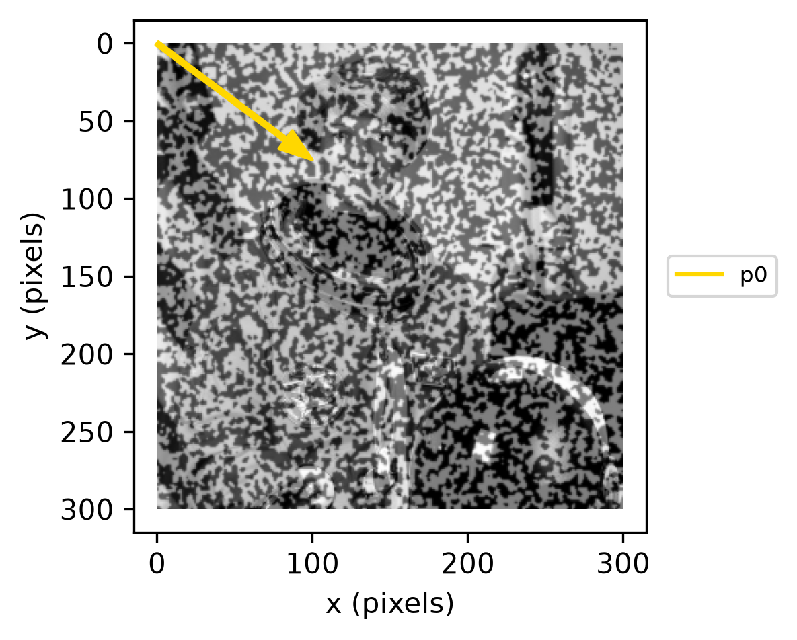
Current Configuration and Displacement
For this page, the current image is generated with
dictk.image.translate (see Image
Transformation): every pixel of
reference_image shifts by the same (dx, dy), a rigid-body
translation. Because the whole
image moves together, point 's new location follows directly:
from dictk.image import translate
dx, dy = -6, 8
current_image = translate(arr=reference_image, dx=dx, dy=dy)
p1 = PixelCoordinate(x=p0.x + dx, y=p0.y + dy) # ground truth, known here by construction
We define the displacement of the point as the relative motion between the reference configuration and the current configuration , such that
so with and ,
point_plot(
image=current_image,
arrows=[
ArrowAnnotation(
tail=PixelCoordinate(x=0, y=0), head=p0, color="orange", label=r"$\boldsymbol{p}_0$"
),
ArrowAnnotation(
tail=PixelCoordinate(x=0, y=0), head=p1, color="cyan", label=r"$\boldsymbol{p}_1$"
),
ArrowAnnotation(
tail=p0, head=p1, color="magenta", label=r"$\delta \boldsymbol{p}$"
),
],
figsize=(6.4, 4.8),
path="single_point_motion_p1_displacement.png",
)
Saved: single_point_motion_p1_displacement.png
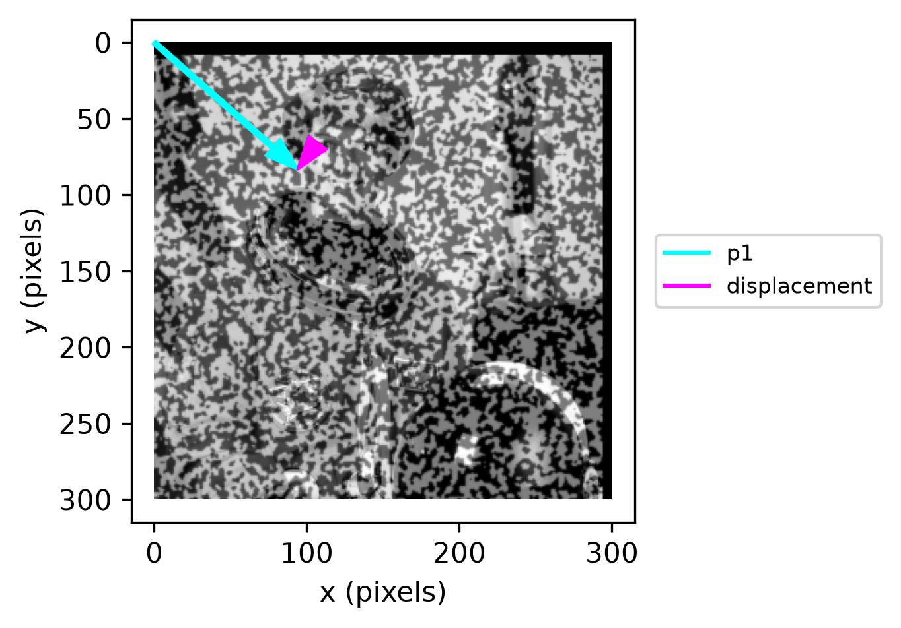
In the example above, p1 was only known in advance because we generated
current_image ourselves with a known translate. In practice, the
location is unknown and found via DIC of a pair of images.
Below, we illustrate the canonical DIC process:
- Given a in the
reference_image, find in thecurrent_image.
The next page, Cross Correlation (CC), shows how the
locate function calculates directly, using the
technique its name describes.
Cross Correlation (CC)
Cross-correlation can be used to find where point in the reference_image
can be found in the current_image.
There are many different implementations of cross-correlation. We discuss the varied implementations in Correlation Criteria. For now, it is sufficient to know only that cross-correlation is used to locate a point in a current image given a known location of that same point in a reference image. The current focus is to make the subordinate concepts underlying cross-correlation be well-defined and well-illustrated.
Let the kernel (also called a subset, filter, or
convolution matrix) be a rectangular region of reference_image centered on
, the vector that locates point from origin in the reference_image.
The kernel is a small, distinctive patch of the reference image
content that we want to locate within a subsequent image.
In the needle in a haystack idiom, the kernel is the needle, and the
haystack is current_image. To keep the search tractable, we don't
search the entire haystack — we constrain it to a search area (also
called the area of interest (AOI), search window, or scanning zone).
The search area is a subimage of the current_image, centered on a search_center, which is a guess of roughly where ended up, not the answer
itself.
While there are techniques derived from macro deformation metrics that can
provide a good first guess for the search_center, for simplicity, and since
the deformations are small, we reuse itself as the search_center
in this example.
Because the kernel and search area are themselves subimages of a larger image (see Subimage Generation), each subimage has its own local frame:
- Let be the reference frame of the kernel subimage.
- Let be the reference frame of the search area subimage.
reference_image, p0, current_image, and p1 are the same as in
Single Point Motion:
from dictk.image import read, translate, PixelCoordinate
reference_image = read(path="checkerboard0.png")
p0 = PixelCoordinate(x=100, y=75)
dx, dy = -6, 8
current_image = translate(arr=reference_image, dx=dx, dy=dy)
p1 = PixelCoordinate(x=p0.x + dx, y=p0.y + dy)
Kernel
From reference_image, extract the kernel surrounding ,
with a 25-pixel margin on every side (50x50 total):
from dictk.plot import subimage_comparison_plot
kernel_margin = 25
kernel_origin = PixelCoordinate(x=p0.x - kernel_margin, y=p0.y - kernel_margin)
subimage_comparison_plot(
image=reference_image,
origin=kernel_origin,
width=2 * kernel_margin,
height=2 * kernel_margin,
point=p0,
point_color="orange",
point_label="$P$",
subimage_label="kernel",
color="green",
origin_label="$K$",
source_origin_label="$O$",
figsize=(6.4, 4.8),
path="single_point_motion_kernel.png",
)
Saved: single_point_motion_kernel.png
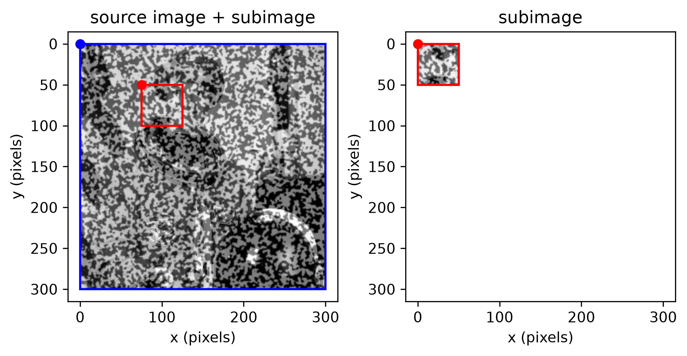
reference_image centered on , with origin pixels (green dot); point itself is the orange dot at . Right: the extracted kernel, in its own local reference frame ; the same point (orange dot) is now at pixels.The kernel has its own local coordinate system , with origin at its top-left corner. Point 's position is the same in both frames, just expressed relative to a different origin:
Since the kernel is centered on with a 25-pixel margin,
pixels. Point always
sits at (kernel_margin_width, kernel_margin_height) within the kernel's
own frame, regardless of where the kernel came from in reference_image.
Search Area
From current_image, extract the search area surrounding
search_center (here, again, since it is currently our best guess), with a 50-pixel margin
on every side (100x100 total):
search_margin = 50
search_center = p0
search_origin = PixelCoordinate(
x=search_center.x - search_margin, y=search_center.y - search_margin
)
subimage_comparison_plot(
image=current_image,
origin=search_origin,
width=2 * search_margin,
height=2 * search_margin,
subimage_label="search area",
origin_label="$S$",
source_origin_label="$O$",
figsize=(6.4, 4.8),
path="single_point_motion_search.png",
)
Saved: single_point_motion_search.png
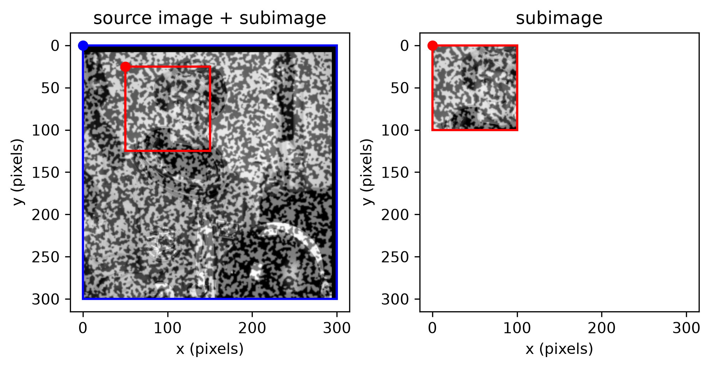
current_image centered on search_center, with origin pixels (red dot); the source image's own origin is labeled , the search area's origin is labeled . Right: the extracted search area on its own, in its own local reference frame , with origin .The search area likewise has its own local frame , origin
at its top-left corner. The location of in the current_image is given by:
The goal of the DIC process is to locate by solving for the quantity . The location of in the search area's local frame is the single unknown; all other vectors are known.
Solution
The insight into the solution is to further decompose into the sum of two additional vectors:
The second term, , is a known constant. The first term, , is unknown and can be calculated using cross-correlation. When the kernel and search area subimages align, their cross-correlation is maximized. We find the maximum cross-correlation to determine and thus calculate .
This is exactly what
dictk.translation.locate computes
internally — via
skimage.registration.phase_cross_correlation
for .
The locate function returns directly (one does not assemble the
vector chain manually).
phase_cross_correlation is a Fourier-domain computation — every locate
call in this book takes that route under the hood, rather than sliding
the kernel across the search area one position at a time. Correlation
Criteria examines that
Fourier-domain implementation in greater depth, alongside the
spatial-domain CC, NCC, ZCC, and ZNCC criteria it complements.
Locating the Point
from dictk.translation import locate
found = locate(
reference_image=reference_image,
current_image=current_image,
reference_point=p0,
search_center=search_center,
kernel_margin_width=kernel_margin,
kernel_margin_height=kernel_margin,
search_margin_width=search_margin,
search_margin_height=search_margin,
)
print(f"found = {found}")
print(f"displacement = ({found.x - p0.x}, {found.y - p0.y})")
found = PixelCoordinate(x=94, y=83)
displacement = (-6, 8)
found matches the ground-truth pixels from
earlier, recovering the known displacement
pixels using only the two images and — exactly the
information available for a real (not synthetically generated) image
pair.
Visualizing the Solution
For illustration, we can back out — the
one quantity locate finds via cross-correlation, everything else here
being known geometry — from found and the boxed equation above, and
draw the full chain on
current_image:
from dictk.plot import point_plot, ArrowAnnotation, BoxAnnotation, PointAnnotation
r_sk = PixelCoordinate(
x=found.x - search_origin.x - kernel_margin,
y=found.y - search_origin.y - kernel_margin,
)
kernel_found_origin = PixelCoordinate(
x=search_origin.x + r_sk.x, y=search_origin.y + r_sk.y
)
image_height, image_width = current_image.shape
point_plot(
image=current_image,
boxes=[
BoxAnnotation(
origin=PixelCoordinate(x=0, y=0),
width=image_width,
height=image_height,
color="blue",
label="source image",
),
BoxAnnotation(
origin=search_origin,
width=2 * search_margin,
height=2 * search_margin,
color="red",
label="search area",
),
BoxAnnotation(
origin=kernel_found_origin,
width=2 * kernel_margin,
height=2 * kernel_margin,
color="green",
label="kernel",
),
],
points=[
PointAnnotation(position=PixelCoordinate(x=0, y=0), label="$O$", color="blue"),
PointAnnotation(position=search_origin, label="$S$", color="red"),
PointAnnotation(position=kernel_found_origin, label="$K$", color="green"),
PointAnnotation(position=found, label="$P$", color="black"),
],
arrows=[
ArrowAnnotation(
tail=PixelCoordinate(x=0, y=0),
head=found,
color="cyan",
label=r"$\boldsymbol{r}_{OP'/\mathcal{F}}$",
),
ArrowAnnotation(
tail=PixelCoordinate(x=0, y=0),
head=search_origin,
color="blue",
label=r"$\boldsymbol{r}_{OS/\mathcal{F}}$: search area origin",
),
ArrowAnnotation(
tail=search_origin,
head=kernel_found_origin,
color="red",
label=r"$\boldsymbol{r}_{SK/\mathcal{S}}$: kernel found in search area",
),
ArrowAnnotation(
tail=kernel_found_origin,
head=found,
color="green",
label=r"$\boldsymbol{r}_{KP/\mathcal{K}}$: point within kernel",
),
],
figsize=(6.4, 4.8),
path="single_point_motion_solution_vectors.png",
)
Saved: single_point_motion_solution_vectors.png
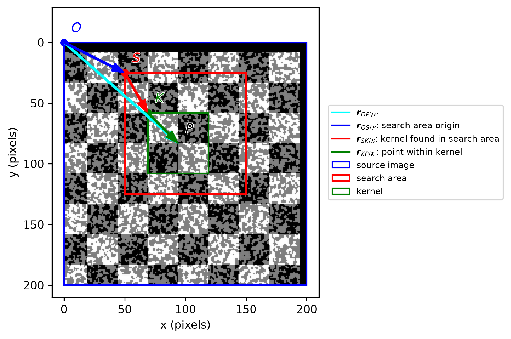
current_image — with the source image (blue box), search area (red box), and the kernel as found within it (green box) shown behind the arrows, each origin labeled: , , , and the found point .| vector, value | description |
|---|---|
| + | origin of the search area (blue arrow) |
| + | kernel located within the search area, from cross-correlation (red arrow) |
| = | point's fixed position within the kernel (green arrow) |
current position , matching found above (cyan arrow) |
NOTE: Cross-correlation may be conceptualized as the sliding dot product of pixel values from the kernel with pixel values from the search area. In this discussion we have described sliding the kernel across a stationary search area. The reverse, sliding the search area across a stationary kernel, is conceptually different but mathematically identical. Both approaches yield the same result: , which locates the kernel frame in the search area frame.
Next: Correlation Criteria defines the four
cross-correlation formulas and explains the Fourier-domain route locate
actually takes, and Correlation
Visualization visualizes each of them on
this same kernel and search area.
Correlation Criteria
Cross-correlation itself can be computed two ways: directly in the
spatial domain — literally sliding the kernel over the search area and
summing a per-position inner product, as shown below — or in the Fourier
domain via the fast Fourier transform (FFT), which is what locate
actually does (see Fourier Domain, below). Both compute
the same underlying quantity, but at very different cost: for the
sliding sum, evaluated at every candidate offset, against
for the FFT, with the number of pixels — a gap that widens sharply as
images grow beyond this page's small teaching examples.
Spatial Domain
Cross Correlation (CC) walks through the geometry of locating a point: the kernel/search-area vector chain, solved by finding where their cross-correlation is maximized. This page covers what "cross-correlation" actually means as a formula — several related criteria are used in the spatial domain, differing in how each responds to brightness and contrast differences between the kernel and a candidate window — a same-sized window of the search area at one particular offset — summed pixelwise over index :
-
Cross-Correlation (CC)
-
Normalized Cross-Correlation (NCC)
-
Zero-mean Cross-Correlation (ZCC)
where and likewise for .
-
Zero-mean Normalized Cross-Correlation (ZNCC)
where and .
Invariance and Robustness
Invariance describes whether or not a correlation is robust or insensitive to changes in brightness and/or contrast.
- For brightness, which is additive, subtracting each side's own mean cancels any constant added to that side, making "Zero-mean" approaches effective.
- For contrast, which is multiplicative, dividing by each side's own norm cancels any constant scaling of that side, making "Normalized" approaches effective.
Whether a criterion performs each of those two cancellations determines its invariance:
| Method | Invariant to brightness (additive) | Invariant to contrast (multiplicative) | Robustness |
|---|---|---|---|
| CC | ❌ No | ❌ No | Least robust — neither cancellation |
| NCC | ❌ No | ✅ Yes | Only robust to contrast changes |
| ZCC | ✅ Yes | ❌ No | Only robust to brightness changes |
| ZNCC | ✅ Yes | ✅ Yes | Most robust |
ZNCC combines ZCC's mean-subtraction (brightness invariance) with NCC's
norm-division (contrast invariance), which is why it's the standard choice
in most DIC implementations — including dictk.translation.locate's own
underlying skimage.registration.phase_cross_correlation call (see
Fourier Domain, below).
Neither cancellation helps against nonlinear or spatially-varying brightness/contrast (a shadow crossing part of the kernel, sensor saturation) — none of the four criteria above address that.
Brightness and Contrast Invariance in Practice
The table above is a formula-level guarantee, verified here on
astronaut0 — the
speckle-over-photograph image used from Multi-Point
Motion onward — rather than taken on faith.
Extract a kernel from astronaut0 unmodified, then compare it against a
search area from a translated and brightness-shifted copy of the same
image, using dictk.image.brightness
with a small enough factor that no pixel clips at 255 (clipping is a
genuine loss of information no correlation criterion can see past, and
would contaminate this test):
from dictk.image import read, translate, brightness, PixelCoordinate, subimage
from dictk.correlation import cc, ncc, zcc, zncc
astronaut0 = read(path="astronaut0.png")
p0 = PixelCoordinate(x=100, y=100)
kernel_margin, search_margin = 25, 50
kernel = subimage(image=astronaut0, origin=PixelCoordinate(x=p0.x - kernel_margin, y=p0.y - kernel_margin), width=2 * kernel_margin, height=2 * kernel_margin)
dx, dy = -6, 8
current_baseline = translate(arr=astronaut0, dx=dx, dy=dy)
current_bright = brightness(arr=current_baseline, factor=1.01) # +1.275 per pixel, no clipping here
search_origin = PixelCoordinate(x=p0.x - search_margin, y=p0.y - search_margin)
baseline_search = subimage(image=current_baseline, origin=search_origin, width=2 * search_margin, height=2 * search_margin)
bright_search = subimage(image=current_bright, origin=search_origin, width=2 * search_margin, height=2 * search_margin)
for name, fn in [("CC", cc), ("NCC", ncc), ("ZCC", zcc), ("ZNCC", zncc)]:
baseline_peak = fn(kernel=kernel, search=baseline_search).max()
bright_peak = fn(kernel=kernel, search=bright_search).max()
pct_change = (bright_peak - baseline_peak) / abs(baseline_peak) * 100
print(f"{name}: peak value change under brightness shift = {pct_change:+.4f}%")
CC: peak value change under brightness shift = +0.6431%
NCC: peak value change under brightness shift = -0.0007%
ZCC: peak value change under brightness shift = +0.0000%
ZNCC: peak value change under brightness shift = +0.0000%
ZCC and ZNCC come back at exactly +0.0000% — bit-for-bit unchanged, as
the formula guarantees for any brightness shift small enough to avoid
clipping. CC and NCC both drift, confirming they are not brightness
invariant — even though, on astronaut0's strong, distinctive texture,
that drift isn't large enough to move where the peak lands, only its
value. That value-only distinction still matters in practice: it's what
makes CC's raw magnitude unsafe to compare across different points or
lighting conditions in a Multi-Point Motion
grid, even on images where its peak still happens to land in the right
place for any one point in isolation.
A parallel contrast test — dictk.image.contrast
instead of brightness, same astronaut0 kernel/search pair — shows the
other pairing:
CC: peak value change under contrast shift = +0.2194%
NCC: peak value change under contrast shift = -0.0052%
ZCC: peak value change under contrast shift = +1.8999%
ZNCC: peak value change under contrast shift = -0.0021%
NCC drifts about 40x less than CC does (-0.0052% vs +0.2194%), and ZNCC
about 900x less than ZCC does (-0.0021% vs +1.8999%). Not perfectly
bit-exact like the brightness case, because contrast scales around the
image's own mean rather than performing a pure multiplicative gain,
which mixes in a small secondary additive term — but the qualitative
result matches the table: contrast invariance belongs to NCC and ZNCC, not
CC or ZCC.
See Pan B, Xie H, Wang Z. "Equivalence of digital image correlation criteria for pattern matching." Applied Optics 2010;49(28):5501-9. [download]
dictk.correlation implements all four as
standalone functions (cc, ncc, zcc, zncc), each returning the full
correlation surface rather than just its peak — see Correlation
Visualization for what those surfaces
look like on the kernel and search area established in Cross Correlation
(CC).
Next: Correlation Visualization
visualizes these four correlation criteria in detail; the Fourier Domain
section below explains the route locate itself actually takes.
Fourier Domain
Correlation Visualization computes CC
directly in the spatial domain: a literal sliding sum, one value per
candidate offset. The
convolution theorem gives an equivalent route: multiplying the two
images' Fourier transforms (one of them conjugated) and inverse-transforming
the product yields that same correlation, all at once, for every offset —
without ever explicitly sliding a window. This is exactly what
dictk.translation.locate does
internally, via
skimage.registration.phase_cross_correlation.
The appeal isn't a different answer — it's speed: a fast Fourier transform
(FFT) costs per image, against the sliding sum's
per candidate offset — decisive once images grow beyond this page's small
teaching example.
reference_image, p0, current_image, kernel, and search are the
same as in Correlation Visualization:
from dictk.image import read, translate, PixelCoordinate, subimage
reference_image = read(path="checkerboard0.png")
p0 = PixelCoordinate(x=100, y=75)
current_image = translate(arr=reference_image, dx=-6, dy=8)
kernel_margin = 25
kernel = subimage(
image=reference_image,
origin=PixelCoordinate(x=p0.x - kernel_margin, y=p0.y - kernel_margin),
width=2 * kernel_margin,
height=2 * kernel_margin,
)
search_margin = 50
search_center = p0
search = subimage(
image=current_image,
origin=PixelCoordinate(
x=search_center.x - search_margin, y=search_center.y - search_margin
),
width=2 * search_margin,
height=2 * search_margin,
)
locate pads kernel to search's own shape before comparing them,
though not quite with the padding used here — see the note below:
import numpy as np
pad_height = search.shape[0] - kernel.shape[0]
pad_width = search.shape[1] - kernel.shape[1]
kernel_padded = np.pad(kernel.astype(np.float64), ((0, pad_height), (0, pad_width)))
image_product = np.fft.fft2(search.astype(np.float64)) * np.fft.fft2(kernel_padded).conj()
fft_surface = np.fft.ifft2(image_product).real
dy, dx = np.unravel_index(np.argmax(fft_surface), fft_surface.shape)
print(f"FFT-domain peak offset (dx, dy) = ({dx}, {dy})")
FFT-domain peak offset (dx, dy) = (19, 33)
That peak, , matches exactly —
the same offset Correlation Visualization's
cc() surface and locate itself both find. That agreement is about the
peak's location only. fft_surface here and locate's own computation
differ in three ways, none of which change where the peak lands here,
on this page's small, comfortably-within-bounds displacement:
- Shape.
fft_surfaceis the circular correlation over the full padded extent (search's own shape,100x100).cc()returns valid positions only (a smaller51x51array, no wraparound). The two arrays don't share a shape, sonp.allclosebetween them wouldn't be meaningful. - Normalization.
fft_surfaceis a raw, unnormalized cross-power spectrum.locateinstead passesnormalization="phase"tophase_cross_correlation, dividing that spectrum by its own magnitude at every frequency before inverting it (see the extensive comment inlocate's source for why). - Padding anchor.
kernel_paddedabove keepskernel's content anchored at the padded array's top-left corner (np.pad's own default), matchingcc()'s corner-offset convention above.locatecenters it instead — a reason worth knowing once you've worked withlocatea bit more: see Recoverable Displacement Range.
Correlation Visualization
This page visualizes each of the four spatial-domain correlation criteria
from Correlation Criteria — CC, NCC, ZCC, and
ZNCC — one at a time, in a four-panel composite reproducing a reference
composite-figure layout used in prior DIC tooling, via
dictk.plot.spatial_correlation_quadrant_plot:
the search area with the found kernel marked (Fixed Image), the kernel
itself zero-padded to the search area's shape (Moving Image), the full
correlation surface, and a zoomed Solution Vicinity around its peak —
closer to how a single registration result is typically inspected in
practice than a side-by-side comparison of criteria.
reference_image, p0, current_image, kernel_margin, search_margin,
kernel, and search are the same as in Cross Correlation
(CC):
from dictk.image import read, translate, PixelCoordinate, subimage
reference_image = read(path="checkerboard0.png")
p0 = PixelCoordinate(x=100, y=75)
current_image = translate(arr=reference_image, dx=-6, dy=8)
kernel_margin = 25
kernel = subimage(
image=reference_image,
origin=PixelCoordinate(x=p0.x - kernel_margin, y=p0.y - kernel_margin),
width=2 * kernel_margin,
height=2 * kernel_margin,
)
search_margin = 50
search_center = p0
search = subimage(
image=current_image,
origin=PixelCoordinate(
x=search_center.x - search_margin, y=search_center.y - search_margin
),
width=2 * search_margin,
height=2 * search_margin,
)
The Fixed Image panel below plots the search area in its own pixel frame
, with a yellow dashed box marking where the kernel was found
and red/green dashed guide lines through that box's origin — the same
quantity Cross Correlation
(CC) solves for by hand. The Correlation
Surface panel plots that same quantity as candidate offset and marks the peak with a red circle of radius
vicinity_margin (4 pixels by default) — exactly the region the Solution
Vicinity panel zooms into, so the same circle reappears there too, now
clipped by that panel's own edges.
Cross-Correlation (CC)
from dictk.correlation import cc
from dictk.plot import spatial_correlation_quadrant_plot
spatial_correlation_quadrant_plot(
kernel=kernel,
search=search,
correlation_surface=cc(kernel=kernel, search=search),
title="Cross-Correlation (CC)",
path="correlation_visualization_cc.png",
)
Saved: correlation_visualization_cc.png

locate in Cross Correlation (CC).Normalized Cross-Correlation (NCC)
from dictk.correlation import ncc
spatial_correlation_quadrant_plot(
kernel=kernel,
search=search,
correlation_surface=ncc(kernel=kernel, search=search),
title="Normalized Cross-Correlation (NCC)",
path="correlation_visualization_ncc.png",
)
Saved: correlation_visualization_ncc.png
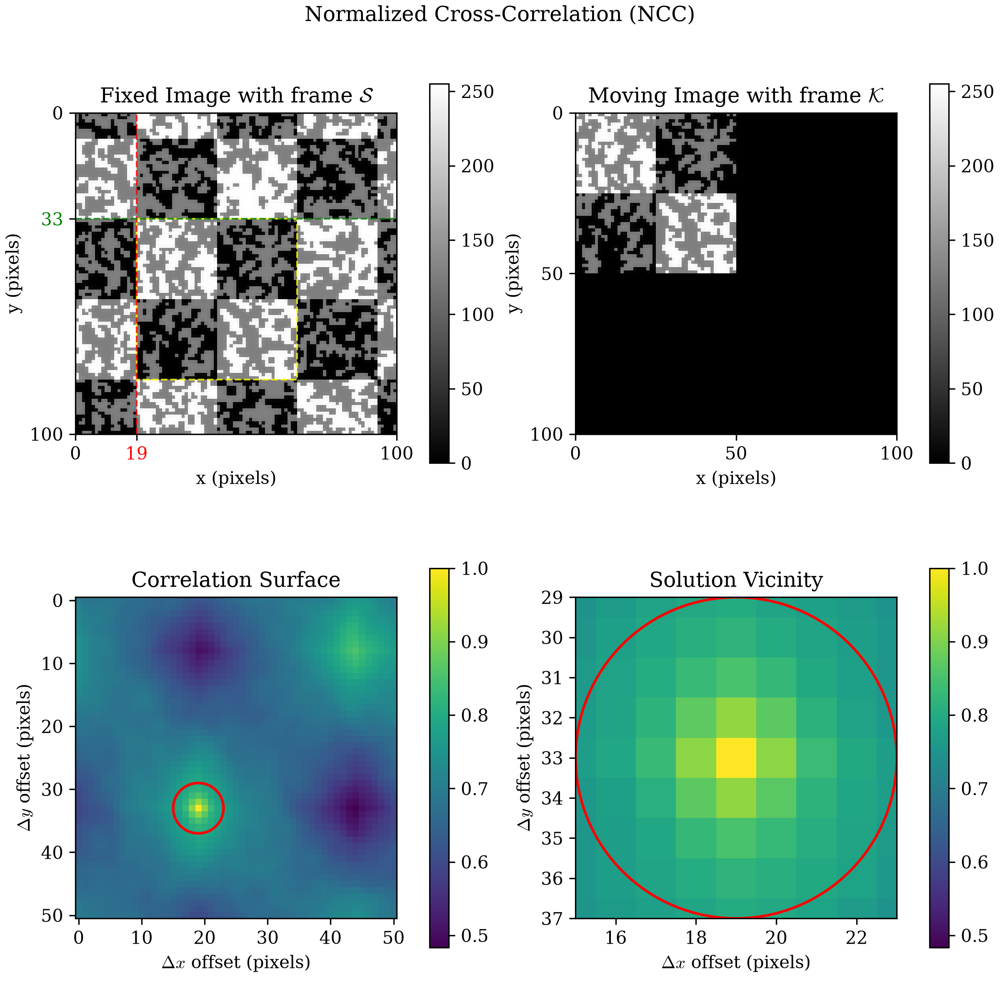
locate in Cross Correlation (CC).Zero-mean Cross-Correlation (ZCC)
from dictk.correlation import zcc
spatial_correlation_quadrant_plot(
kernel=kernel,
search=search,
correlation_surface=zcc(kernel=kernel, search=search),
title="Zero-mean Cross-Correlation (ZCC)",
path="correlation_visualization_zcc.png",
)
Saved: correlation_visualization_zcc.png
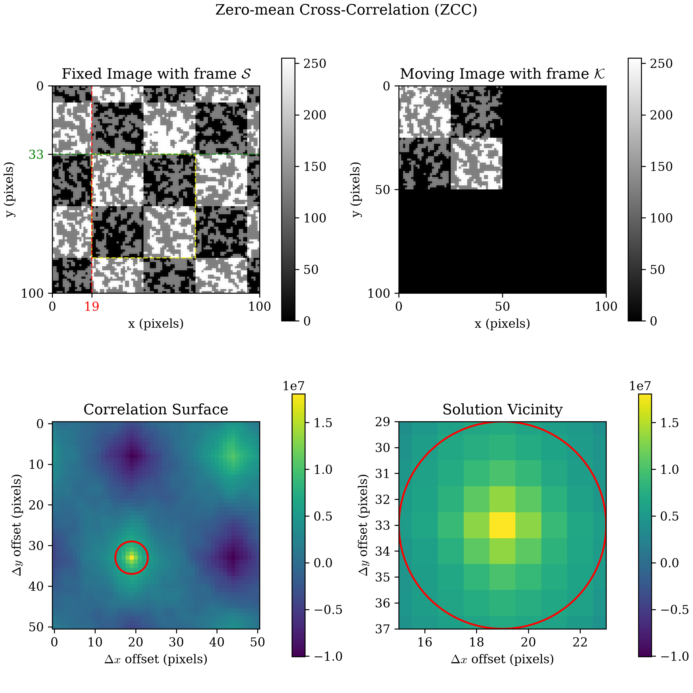
locate already found in Cross Correlation (CC).Zero-mean Normalized Cross-Correlation (ZNCC)
from dictk.correlation import zncc
spatial_correlation_quadrant_plot(
kernel=kernel,
search=search,
correlation_surface=zncc(kernel=kernel, search=search),
title="Zero-mean Normalized Cross-Correlation (ZNCC)",
path="correlation_visualization_zncc.png",
)
Saved: correlation_visualization_zncc.png

dictk.translation.locate's own underlying skimage.registration.phase_cross_correlation call is built on the same combination (see Correlation Criteria). Its Correlation Surface panel is likewise 51×51, "valid" positions only. Peak still at pixels, matching locate's own result in Cross Correlation (CC).All four land on the same peak, pixels, since kernel and search here share identical brightness
and contrast (both come from checkerboard0.png, only translated). What
differs between the four is what each panel's colorbar reveals about how
safely that peak can be trusted once brightness or contrast do differ, as
Correlation Criteria
covers in detail.
Phase Correlation
Every panel above comes from a spatial-domain criterion —
dictk.correlation's cc/ncc/zcc/
zncc, sliding kernel over search one window at a time. There's a
second way to get an equivalent answer: all at once, in the Fourier
domain, via
dictk.correlation.phase_correlation
— the same computation
dictk.translation.locate already
runs internally via skimage.registration.phase_cross_correlation. Unlike
its spatial-domain siblings, there's only one Fourier-domain flavor here,
so phase_correlation_quadrant_plot
takes kernel/search directly rather than a pre-computed surface — no
method to choose, nothing to compute beforehand. It does, however, take
an optional windowing parameter (see Windowing): the
three subsections below run this same kernel/search pair through no
windowing, Hann windowing, and Hamming windowing in turn, so the effect
is directly comparable rather than just described.
No Windowing (default)
windowing defaults to None, applying no tapering — this reproduces
exactly what every earlier page in this book that calls
phase_correlation/locate already does.
from dictk.plot import phase_correlation_quadrant_plot
phase_correlation_quadrant_plot(
kernel=kernel,
search=search,
title="Phase Correlation (No Windowing)",
path="correlation_visualization_phase_none.png",
)
Saved: correlation_visualization_phase_none.png
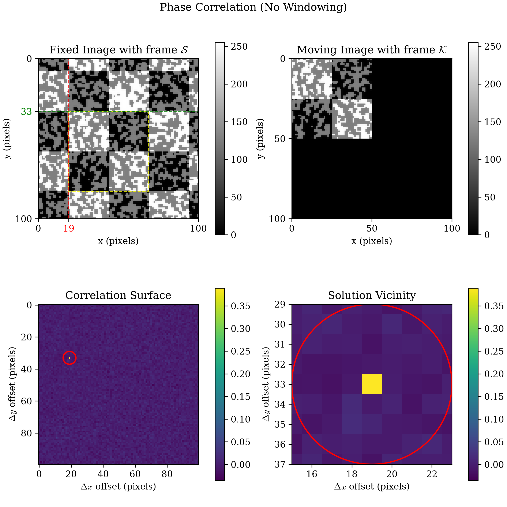
search itself, since kernel is zero-padded up to search's shape before the FFT rather than restricted to "valid" positions — every candidate offset, including circular wraparound ones, gets a value. Same peak, pixels — matching the value already found by locate in Cross Correlation (CC) — as every criterion above, but the correlation-surface panel looks nothing like them: essentially flat/uniform everywhere except one crisp, isolated cell, rather than the broader, multi-peaked terrain CC/NCC/ZCC/ZNCC show on this same tiled checkerboard0.png.Hann Windowing
from dictk.correlation import WindowingMethod
phase_correlation_quadrant_plot(
kernel=kernel,
search=search,
windowing=WindowingMethod.HANN,
title="Phase Correlation (Hann Windowing)",
path="correlation_visualization_phase_hann.png",
)
Saved: correlation_visualization_phase_hann.png
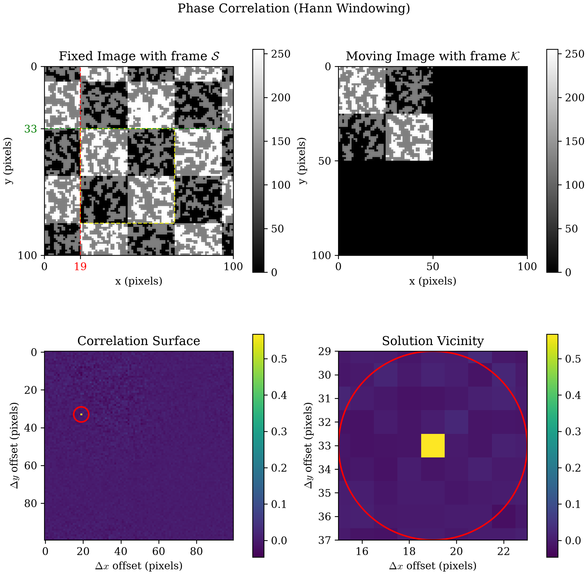
window() only tapers kernel/search before the FFT, it doesn't change the surface's shape or relocate the peak. Unlike No Windowing's panels, though, the Fixed Image and Moving Image panels here darken toward their own edges too — the same Hann taper Windowing shows on this exact kernel, now applied to what's actually fed into the FFT rather than left as a stale, untapered view next to a surface that no longer matches it. What windowing changes numerically is the surface's own values — see Peak Prominence below for how much.Hamming Windowing
phase_correlation_quadrant_plot(
kernel=kernel,
search=search,
windowing=WindowingMethod.HAMMING,
title="Phase Correlation (Hamming Windowing)",
path="correlation_visualization_phase_hamming.png",
)
Saved: correlation_visualization_phase_hamming.png
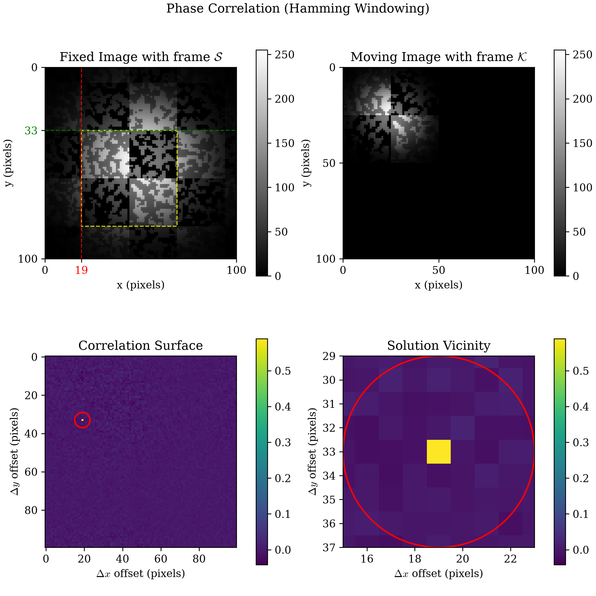
Peak Prominence
That sharpness isn't just a visual impression. Define a correlation surface's peak prominence as how many standard deviations above its own mean the peak sits — a scale-independent way to compare surfaces with very different raw units (CC's arbitrary sums, NCC/ZNCC's -bounded values, phase correlation's own normalized range):
for a correlation surface flattened to its values. By this measure, all three phase correlation surfaces above are dramatically higher than any spatial-domain criterion — and windowing raises that further still, even on this book's clean, noise-free synthetic images:
CC: prominence P = 4.93
NCC: prominence P = 5.60
ZCC: prominence P = 5.48
ZNCC: prominence P = 5.60
Phase correlation (no windowing): prominence P = 38.91
Phase correlation (Hann): prominence P = 56.76
Phase correlation (Hamming): prominence P = 58.95
A histogram of each surface's own values makes the same result visual: each panel's dashed red line is that surface's peak, at the value computed above.
import matplotlib.pyplot as plt
from dictk.correlation import cc, ncc, zcc, zncc, phase_correlation, WindowingMethod
surfaces = {
"CC": cc(kernel=kernel, search=search),
"NCC": ncc(kernel=kernel, search=search),
"ZCC": zcc(kernel=kernel, search=search),
"ZNCC": zncc(kernel=kernel, search=search),
"Phase correlation\n(no windowing)": phase_correlation(kernel=kernel, search=search),
"Phase correlation\n(Hann)": phase_correlation(kernel=kernel, search=search, windowing=WindowingMethod.HANN),
"Phase correlation\n(Hamming)": phase_correlation(kernel=kernel, search=search, windowing=WindowingMethod.HAMMING),
}
plt.rcParams.update({"font.family": "serif", "mathtext.fontset": "cm"})
fig, axes = plt.subplots(4, 2, figsize=(11, 16), constrained_layout=True)
for ax, (name, surface) in zip(axes.flat, surfaces.items()):
flat = surface.ravel()
prominence = (flat.max() - flat.mean()) / flat.std()
ax.hist(flat, bins=60, color="black", alpha=0.7)
ax.axvline(flat.max(), color="red", linestyle="--", linewidth=1.5)
ax.set_yscale("log")
ax.set_title(f"{name}: $P = {prominence:.1f}$")
ax.set_xlabel("surface value")
ax.set_ylabel("frequency")
axes.flat[-1].axis("off") # 7 panels in a 4x2 grid -- last slot stays empty
fig.savefig("correlation_visualization_prominence.png", dpi=300)
Saved: correlation_visualization_prominence.png
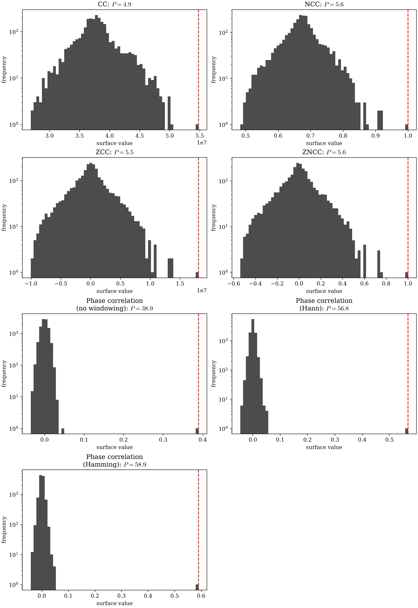
locate already found in Cross Correlation (CC), just plotted by value here rather than position. CC/NCC/ZCC/ZNCC's peaks sit a short, visible distance beyond their own bulk. All three phase correlation panels sit in a class of their own — an empty gap separates each peak from every other value its surface takes on — and windowing (Hann, Hamming) narrows that surface's own bulk further still, widening the gap even more.Windowing's effect here isn't about relocating the peak — all seven surfaces, spatial and Fourier alike, land on the same -pixel offset — it's about how far above the rest of the surface that peak stands. No-windowing phase correlation already beats every spatial criterion by a wide margin (prominence 38.91 vs. ZNCC's 5.60, the best of the four); Hann windowing raises that to 56.76 and Hamming to 58.95, by lowering the energy the leaking, untapered edges were contributing everywhere else on the surface, so the same peak stands out further above that now-lower background. Hann and Hamming land close to each other, both clearly above no windowing — a real, measurable benefit even before considering the noisier, less-clean real-world images this book's synthetic ones deliberately simplify away.
Phase correlation's peak already stands roughly seven times taller above
its own background, relative to the surface's own spread, than even
ZNCC — the most robust of the four spatial criteria — before windowing is
even applied. That sharpness, not just brightness/contrast invariance, is
a second, independent reason dictk.translation.locate is built on phase
correlation rather than a spatial-domain criterion: a sharper peak is
easier to locate with confidence and precision, and harder to confuse
with a nearby runner-up. locate accepts the same windowing parameter
too (see Windowing) — the prominence gain above isn't
unique to the surface phase_correlation() exposes for visualization;
it applies wherever the same FFT-based comparison runs, locate
included.
Multi-Point Motion
Single Point Motion tracked exactly one point, , between a reference and current image. Digital image correlation was illustrated in the context of that single point. Now, we turn to consider many points at once. A collection of tracked points will serve as the nodes of a finite element mesh. This page shows how to track many points simultaneously, and motivates the connection to the Finite Element Method (FEM).
Point Grid
A grid is an ordered, sequential collection of points, arranged in a rectilinear
pattern.
The function dictk.grid.generate creates
a grid that spans some number of points along and along ,
with some spacing between adjacent points along each axis.
The count of points along and along need not be equal, and the
spacing along and along need not be equal either. The grid is a
general rectangular collection of points, not necessarily a square or
uniformly-spaced one. spacing_x and spacing_y are in pixels.
This page uses astronaut0, the speckle pattern combined with the
astronaut photograph introduced in Image
Generation.
from dictk.image import read, PixelCoordinate
from dictk.plot import point_grid_plot
from dictk.grid import generate
reference_image = read(path="astronaut0.png")
points = generate(
origin=PixelCoordinate(x=50, y=50),
count_x=3,
count_y=4,
spacing_x=50,
spacing_y=55,
)
point_grid_plot(
image=reference_image,
points=points,
color="orange",
figsize=(6.4, 4.8),
path="multi_point_motion_grid.png",
)
Saved: multi_point_motion_grid.png

astronaut0 with a 3x4 grid of 12 points (count_x=3, count_y=4), spaced 50 pixels apart along and 55 pixels apart along (spacing_x=50, spacing_y=55), labeled 00-11 in row-major order (top-left to bottom-right).The reference coordinates in pixels for each point follow:
| Point | Reference Configuration | |
|---|---|---|
| (pixels) | (pixels) | |
| 00 | 50 | 50 |
| 01 | 100 | 50 |
| 02 | 150 | 50 |
| 03 | 50 | 105 |
| 04 | 100 | 105 |
| 05 | 150 | 105 |
| 06 | 50 | 160 |
| 07 | 100 | 160 |
| 08 | 150 | 160 |
| 09 | 50 | 215 |
| 10 | 100 | 215 |
| 11 | 150 | 215 |
dx, dy = -6, 8 is the same known rigid-body displacement that Single Point
Motion
gave checkerboard0. Applying it to astronaut0 produces current_image:
from dictk.image import translate
dx, dy = -6, 8
current_image = translate(arr=reference_image, dx=dx, dy=dy)
Every point will need a kernel (the patch of reference_image used to
identify it) and a search area (the region of current_image searched
for a match). Before tracking the grid, it helps to see both relative to
the point spacing.
dictk.plot.point_grid_boxes_plot
draws one box type per call, so kernel and search area each get their own
figure — each point's own box gets its own color and its own legend
entry (kernel 00, kernel 01, ..., kernel 11), cycling through a
12-color palette (using matplotlib's Tableau colormap):
from dictk.plot import point_grid_boxes_plot
point_grid_boxes_plot(
image=reference_image,
points=points,
margin_width=20,
margin_height=20,
label_prefix="kernel",
figsize=(6.4, 4.8),
path="multi_point_motion_kernels.png",
)
Saved: multi_point_motion_kernels.png

margin_width=20, margin_height=20).The kernel comes from reference_image. The search area comes from
current_image instead — still centered on each point's reference
position (search_centers defaults to reference_points), since the
point's true displacement is exactly what tracking is trying to find:
point_grid_boxes_plot(
image=current_image,
points=points,
margin_width=48,
margin_height=52,
label_prefix="search area",
figsize=(6.4, 4.8),
path="multi_point_motion_search.png",
)
Saved: multi_point_motion_search.png

margin_width=48, margin_height=52), drawn on current_image — the region actually searched — and still centered on each point's reference position.Tracking the Grid
Choosing a kernel size relative to point spacing is a tradeoff: a kernel needs to be large enough to contain enough distinctive texture to locate reliably, but small enough that neighboring kernels don't just duplicate each other's content.
A common rule of thumb (with no hard requirement
behind it) is to space points roughly half a kernel's side length apart.
A kernel's full side length is twice its margin, so kernel_margin_width
and kernel_margin_height are themselves already exactly half that side
length — meaning the rule of thumb reduces to a simple comparison: each
margin should be close to the point spacing itself, without exceeding it (past
that point, neighboring kernels start overlapping).
The point spacing above is 50 pixels in and 55 pixels in
(spacing_x=50, spacing_y=55). Keeping the kernel isotropic (a single
margin for both axes, kernel_margin_width=kernel_margin_height) means
the smaller of the two spacings is the binding constraint: a margin
greater than 25 pixels would overlap its -neighbor, since is
already the full spacing in . That value, 25, is therefore the largest isotropic
margin with zero overlap — but right at that ceiling, adjacent kernels
touch exactly, sharing a boundary with no gap at all.
The kernel figure
above backs off from that ceiling on purpose: kernel_margin_width=20,
kernel_margin_height=20, leaving a clear 10-pixel gap in and a
15-pixel gap in , comfortably inside the no-overlap ceiling in both
directions, so every kernel's own boundary reads as visibly separate from
its neighbors', not merely non-overlapping.
The two numbers side by side make the relationship exact, not just described:
import matplotlib.pyplot as plt
import matplotlib.patches as patches
from dictk.image import PixelCoordinate
p0, p1, p2 = PixelCoordinate(x=50, y=50), PixelCoordinate(x=100, y=50), PixelCoordinate(x=150, y=50)
kernel_margin = 20
plt.rcParams.update({"font.family": "serif", "mathtext.fontset": "cm"})
fig, ax = plt.subplots(figsize=(7, 3.2), constrained_layout=True)
for p, label in [(p0, "00"), (p1, "01"), (p2, "02")]:
ax.plot(p.x, p.y, "o", color="black", markersize=4)
ax.annotate(label, (p.x, p.y), textcoords="offset points", xytext=(6, 6), fontsize=8)
for p in (p0, p1):
ax.add_patch(patches.Rectangle(
(p.x - kernel_margin, p.y - kernel_margin),
2 * kernel_margin, 2 * kernel_margin,
edgecolor="green", facecolor="none", linewidth=1.5,
))
box_top = p0.y - kernel_margin # 30
box_bottom = p0.y + kernel_margin # 70
# 50-pixel point spacing. The dashed guide lines start near each point
# (nearly touching its marker) and run down through its kernel box to
# the dimension line just below the boxes. Arrow flush with the dashed
# lines (shrinkA/shrinkB=0); label centered at the true midpoint between
# the box bottom and the dimension line.
dim_y = box_bottom + 8
for p in (p0, p1):
ax.plot([p.x, p.x], [p.y + 3, dim_y], color="gray", linestyle="--", linewidth=0.8)
ax.annotate("", xy=(p0.x, dim_y), xytext=(p1.x, dim_y), arrowprops=dict(arrowstyle="<->", color="black", shrinkA=0, shrinkB=0))
ax.text((p0.x + p1.x) / 2, (box_bottom + dim_y) / 2, "50 px", ha="center", va="center", fontsize=9)
# 40-pixel kernel width, flush with the box's own left/right edges
# (shrinkA/shrinkB=0 so the arrow isn't inset from those edges).
top_y = box_top - 10
ax.annotate("", xy=(p0.x - kernel_margin, top_y), xytext=(p0.x + kernel_margin, top_y), arrowprops=dict(arrowstyle="<->", color="green", shrinkA=0, shrinkB=0))
ax.text(p0.x, top_y - 4, "40 px", ha="center", va="bottom", fontsize=8, color="green")
# 10-pixel gap between the two kernels' facing edges, moved up to the
# boxes' shared top edge, flush with the box's own edges (shrinkA/
# shrinkB=0), with the label on top of the dimension line.
gap_y = box_top - 2
ax.annotate("", xy=(p0.x + kernel_margin, gap_y), xytext=(p1.x - kernel_margin, gap_y), arrowprops=dict(arrowstyle="<->", color="tab:red", shrinkA=0, shrinkB=0))
ax.text(p0.x + kernel_margin + (p1.x - kernel_margin - (p0.x + kernel_margin)) / 2, gap_y - 4, "10 px", ha="center", va="bottom", fontsize=7, color="tab:red")
ax.set_xlim(15, 175)
ax.set_ylim(84, 8)
# Tick marks: 50/100/150 in x (the point positions), 40 pixels apart
# starting at 20; every 10 pixels in y, but text labels only at
# 30/50/70 (the box's top edge, the point row, and the box's bottom
# edge) -- a tight range with no dead space below the boxes, since the
# dimension line sits just beneath them.
xticks = list(range(20, 161, 10))
ax.set_xticks(xticks)
ax.set_xticklabels([str(v) if v in (50, 100, 150) else "" for v in xticks])
yticks = list(range(20, 81, 10))
ax.set_yticks(yticks)
ax.set_yticklabels([str(v) if v in (30, 50, 70) else "" for v in yticks])
ax.set_xlabel("x (pixels)")
ax.set_ylabel("y (pixels)")
ax.set_aspect("equal")
fig.savefig("multi_point_motion_spacing.png", dpi=300)
Saved: multi_point_motion_spacing.png
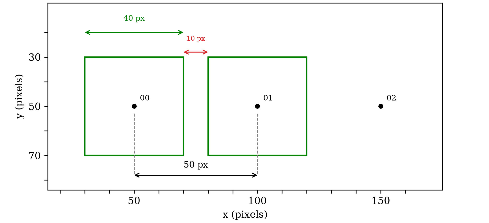
Nothing requires the kernel to be isotropic — dictk supports an
independent margin per axis just as easily. The equal 20/20 above is
a deliberate choice to illustrate that dictk supports both isotropic and
non-isotropic margins, not a consequence of spacing_x and spacing_y
being unequal forcing one shape or the other.
The search area, by contrast, keeps a clearly
non-isotropic shape: search_margin_width=48, search_margin_height=52
— just under the point spacing itself, comfortably containing the known
-pixel displacement with plenty of room to spare, while staying
just shy of spacing_x/spacing_y rather than matching them outright.
That much slack still means search areas overlap their neighbors heavily
and run off the image at the edges, which is harmless:
subimage zero-pads whatever falls
outside current_image. Unlike kernels, search areas that overlap cost
nothing aside from redundant computation; there's no accuracy downside to
searching the same region for two different points.
One important practical detail: phase_cross_correlation
requires the kernel and search area to be exactly the same shape. So
dictk.translation.locate doesn't
crop the search area down to the kernel's size; rather, it zero-pads the kernel up to match the search area's size. Here a
40x40 kernel is zero-padded up to the search area's 96x104 size.
Note: In practice, kernel size has little effect on FFT runtime once a search area is chosen — the transform zero-pads the kernel up to match the search area's own size. Shrinking an already-small kernel further doesn't make the correlation any faster.
Single Point Motion
confirmed that a single point's found position matches a known
displacement exactly. Reuse current_image from Point
Grid — the same -pixel
displacement. The same idea, applied to all 12 points in the grid at
once, is exactly what a real DIC workflow looks like.
dictk.grid.locate tracks all 12 points
in one call. It doesn't do the correlation itself — it calls
dictk.translation.locate once
per point, and that function is dictk's actual FFT-based DIC engine: for
each point it extracts a kernel from reference_image and a search area
from current_image, then locates the kernel within the search area via
skimage.registration.phase_cross_correlation — FFT-based phase
cross-correlation, not a spatial-domain sliding-window search (see
Correlation Criteria for the
single-point version of this same technique).
Twelve points means twelve independent calls into that engine, using the
same kernel and search-area sizes visualized above:
from dictk.grid import locate
found = locate(
reference_image=reference_image,
current_image=current_image,
reference_points=points,
kernel_margin_width=20,
kernel_margin_height=20,
search_margin_width=48,
search_margin_height=52,
)
Point found expected match
00 44,58 44,58 True
01 94,58 94,58 True
02 144,58 144,58 True
03 44,113 44,113 True
04 94,113 94,113 True
05 144,113 144,113 True
06 44,168 44,168 True
07 94,168 94,168 True
08 144,168 144,168 True
09 44,223 44,223 True
10 94,223 94,223 True
11 144,223 144,223 True
Every one of the 12 found positions matches reference_points[i] + (dx, dy) exactly — not approximately, the same exact-integer-pixel guarantee
Single Point Motion established for one point,
now confirmed across the whole grid at once:
from dictk.plot import point_grid_plot
point_grid_plot(
image=current_image,
points=found,
color="orange",
figsize=(6.4, 4.8),
path="multi_point_motion_found.png",
)
Saved: multi_point_motion_found.png

That every point was found exactly is expected, not a coincidence: the
kernel margins above were chosen to roughly follow the rule of thumb, not
to violate it. What the rule of thumb actually buys is robustness, not
correctness on an easy case like this one — a kernel needs enough
distinctive texture to locate reliably, and astronaut0 is a clean,
synthetic image with strong texture everywhere and no noise. A smaller,
more aggressively undersized kernel would likely still have worked here
too; it's on real, noisier imagery, or content with repetitive texture,
that a larger kernel's extra context resolves an ambiguity a smaller one
can't.
Data Download
Every image this page used is downloadable below, as a TIFF. Download files individually, or all at once: one compressed zip file bundles every full image (reference and current), every kernel, and every search area.
import zipfile
import imageio.v3 as iio
images = {"astronaut0.tiff": reference_image, "astronaut1.tiff": current_image}
for i, point in enumerate(points):
origin = PixelCoordinate(x=point.x - kernel_margin, y=point.y - kernel_margin)
images[f"kernel_{i:02d}.tiff"] = subimage(
image=reference_image, origin=origin, width=2 * kernel_margin, height=2 * kernel_margin
)
for i, point in enumerate(points):
origin = PixelCoordinate(x=point.x - search_margin_width, y=point.y - search_margin_height)
images[f"search_area_{i:02d}.tiff"] = subimage(
image=current_image, origin=origin, width=2 * search_margin_width, height=2 * search_margin_height
)
with zipfile.ZipFile("multi_point_motion_data.zip", "w", zipfile.ZIP_DEFLATED) as zf:
for name, arr in images.items():
zf.writestr(name, iio.imwrite("<bytes>", arr, extension=".tiff"))
Download all: multi_point_motion_data.zip (26 files, 291 KB)
Full Images
astronaut0.tiffisreference_image.astronaut1.tiffiscurrent_image—reference_imagedisplaced down and to the left by pixels, the same displacement Tracking the Grid tracked:
from dictk.image import write
write(arr=reference_image, path="astronaut0.tiff")
write(arr=current_image, path="astronaut1.tiff")
| File | Description |
|---|---|
| astronaut0.tiff | Reference image, 300x300 pixels |
| astronaut1.tiff | Current image, displaced by (dx, dy) = (-6, 8) pixels |
Kernels
Every point's kernel, extracted from reference_image — the same 12
boxes shown in Point Grid (kernel_margin_width=20,
kernel_margin_height=20, 40x40 pixels each):
from dictk.image import subimage, write
kernel_margin = 20
for i, point in enumerate(points):
origin = PixelCoordinate(x=point.x - kernel_margin, y=point.y - kernel_margin)
kernel = subimage(image=reference_image, origin=origin, width=2 * kernel_margin, height=2 * kernel_margin)
write(arr=kernel, path=f"kernel_{i:02d}.tiff")
| File | Point | Origin (pixels) |
|---|---|---|
| kernel_00.tiff | 00 | (30, 30) |
| kernel_01.tiff | 01 | (80, 30) |
| kernel_02.tiff | 02 | (130, 30) |
| kernel_03.tiff | 03 | (30, 85) |
| kernel_04.tiff | 04 | (80, 85) |
| kernel_05.tiff | 05 | (130, 85) |
| kernel_06.tiff | 06 | (30, 140) |
| kernel_07.tiff | 07 | (80, 140) |
| kernel_08.tiff | 08 | (130, 140) |
| kernel_09.tiff | 09 | (30, 195) |
| kernel_10.tiff | 10 | (80, 195) |
| kernel_11.tiff | 11 | (130, 195) |
Search Areas
Every point's search area, extracted from current_image — not
reference_image, since a search area is always a region of the current
image (see Point Grid). The same 12 boxes shown there
(search_margin_width=48, search_margin_height=52, 96x104 pixels
each), still centered on each point's reference position:
search_margin_width, search_margin_height = 48, 52
for i, point in enumerate(points):
origin = PixelCoordinate(x=point.x - search_margin_width, y=point.y - search_margin_height)
search_area = subimage(image=current_image, origin=origin, width=2 * search_margin_width, height=2 * search_margin_height)
write(arr=search_area, path=f"search_area_{i:02d}.tiff")
| File | Point | Origin (pixels) |
|---|---|---|
| search_area_00.tiff | 00 | (2, -2) |
| search_area_01.tiff | 01 | (52, -2) |
| search_area_02.tiff | 02 | (102, -2) |
| search_area_03.tiff | 03 | (2, 53) |
| search_area_04.tiff | 04 | (52, 53) |
| search_area_05.tiff | 05 | (102, 53) |
| search_area_06.tiff | 06 | (2, 108) |
| search_area_07.tiff | 07 | (52, 108) |
| search_area_08.tiff | 08 | (102, 108) |
| search_area_09.tiff | 09 | (2, 163) |
| search_area_10.tiff | 10 | (52, 163) |
| search_area_11.tiff | 11 | (102, 163) |
Verification Against VIC-2D
In this section, we run this page's own dx = -6, dy = 8 example through
VIC-2D (Correlated Solutions, Inc.),
a widely used commercial DIC package, to verify agreement with dictk.
dx = -6, dy = 8 example (click either image for the full-size version): U, the x-axis displacement, uniformly -6 pixels (left, multi_point_motion_U); V, the y-axis displacement, uniformly -8 pixels (right, multi_point_motion_V) — VIC-2D's own -axis points opposite dictk's, so its sign is flipped from this page's dy = 8 even though both describe the identical physical motion.Across the 2861 subsets VIC-2D correlated successfully (109 more, all
along the image's outer edge, fell outside the shifted current image and
were masked out rather than reported), U ranges from exactly
to px and V from to px, in VIC-2D's own
columns (u_c/v_c in the raw output below). VIC-2D's own V
is measured with positive pointing up the page, opposite dictk's
downward-positive -axis. Once that sign difference is reconciled,
VIC-2D's result matches dictk's own / px ground truth exactly.
The full, subset-by-subset VIC-2D output,
multi_point_motion_vic_out.csv,
is available for closer inspection: every subset's position, displacement,
strain, and correlation quality metrics, not just the two summary fields
shown above. It carries two displacement column pairs: u_c/v_c
(VIC-2D's own convention, matching the two figures above exactly) and a
second u/v pair already expressed with v's sign flipped to match
dictk's downward-positive — u/v land on / px directly,
with no sign reconciliation needed to compare against dictk's ground
truth.
Next Steps
This page tracked rigid-body translation. Every point moved by the same amount. Simple Stretch is next. It tracks a stretching deformation, where each point moves by a different amount in the direction.
Simple Stretch
Multi-Point Motion tracked a grid of points under rigid-body translation — every point moves by the same , so Single Point Motion's known-integer-pixel trick (choosing so the ground truth is exact, not a sub-pixel estimate) carried over for free. A stretch is the next step up in complexity: a genuine deformation, not just a rigid shift, where different points move by different amounts. Getting the same exact-integer ground truth here takes more care.
dictk.image.stretch applies a uniaxial
or biaxial stretch pivoting at the image's origin : a point at moves to . Fixing
isolates the stretch to alone, so every point's
stays exactly as-is — the only question is which
values keep every point's new an integer too, rather than landing
between pixels.
Choosing an Integer-Safe Stretch Factor
Point Grid's 12 points span only three distinct values: 50, 100, and 150. Writing the stretch as a percentage , , and the new is:
For , this is just — always an integer, for any integer . But and both carry a factor of once divided by 100, so itself must be even for those points to land on an integer — which means must be even. Odd percentages (1%, 3%, 5%, ...) always leave and on a half-pixel.
That parity argument is exact in real-number math, but factor_x is a
64-bit float at runtime, and not every value that's mathematically an
integer survives that arithmetic unscathed — 1.1, for example, has no exact
binary floating-point representation, so 50 * 1.1 doesn't land on exactly
55.0 even though the true product is. Checking every even percentage
directly against dictk's actual points, rather than trusting the parity
argument alone:
from dictk.image import PixelCoordinate
from dictk.grid import generate
points = generate(
origin=PixelCoordinate(x=50, y=50),
count_x=3,
count_y=4,
spacing_x=50,
spacing_y=55,
)
xs = sorted({point.x for point in points})
for p in range(1, 21):
factor = (100 + p) / 100
exact = all((x * factor).is_integer() for x in xs)
print(f"{p:2d}% factor={factor!r} all-integer={exact}")
1% factor=1.01 all-integer=False
2% factor=1.02 all-integer=True
3% factor=1.03 all-integer=False
4% factor=1.04 all-integer=True
5% factor=1.05 all-integer=False
6% factor=1.06 all-integer=True
7% factor=1.07 all-integer=False
8% factor=1.08 all-integer=True
9% factor=1.09 all-integer=False
10% factor=1.1 all-integer=False
11% factor=1.11 all-integer=False
12% factor=1.12 all-integer=False
13% factor=1.13 all-integer=False
14% factor=1.14 all-integer=False
15% factor=1.15 all-integer=False
16% factor=1.16 all-integer=False
17% factor=1.17 all-integer=False
18% factor=1.18 all-integer=True
19% factor=1.19 all-integer=False
20% factor=1.2 all-integer=True
The parity argument is necessary but not sufficient: every odd percentage
fails as predicted, but so do several even ones (10%, 12%, 14%, 16%) purely
from floating-point representation error, not the underlying math. Of the
percentages that survive both checks, 2% is the smallest — the least
aggressive stretch that still keeps every point's ground-truth position an
exact pixel, with factor_x = 1.02 giving new values of 51, 102, and
153.
Applying the Stretch
Reuse points and reference_image from Point
Grid.
dictk.image.stretch builds current_image:
from dictk.image import read, stretch, PixelCoordinate
reference_image = read(path="astronaut0.png")
factor_x = 1.02
current_image = stretch(arr=reference_image, factor_x=factor_x)
factor_y defaults to 1.0. Every point's stays fixed. Only
changes, and by a different amount for each point:
expected = [
PixelCoordinate(x=int(point.x * factor_x), y=point.y)
for point in points
]
| Point | Reference Configuration | Expected | ||
|---|---|---|---|---|
| (pixels) | (pixels) | (pixels) | (pixels) | |
| 00 | 50 | 50 | 51 | 50 |
| 01 | 100 | 50 | 102 | 50 |
| 02 | 150 | 50 | 153 | 50 |
| 03 | 50 | 105 | 51 | 105 |
| 04 | 100 | 105 | 102 | 105 |
| 05 | 150 | 105 | 153 | 105 |
| 06 | 50 | 160 | 51 | 160 |
| 07 | 100 | 160 | 102 | 160 |
| 08 | 150 | 160 | 153 | 160 |
| 09 | 50 | 215 | 51 | 215 |
| 10 | 100 | 215 | 102 | 215 |
| 11 | 150 | 215 | 153 | 215 |
This is a real deformation, not a rigid shift. Multi-Point Motion moved every point by the same . A stretch moves each point by a different amount. A point at moves 1 pixel. A point at moves 3 pixels. The grid spreads apart under the stretch. It does not translate as one block.
Locating the Stretched Grid
dictk.grid.locate tracks the stretched
grid the same way it tracked the translated one in Tracking the
Grid. Reuse the same kernel
and search-area margins:
from dictk.grid import locate
found = locate(
reference_image=reference_image,
current_image=current_image,
reference_points=points,
kernel_margin_width=20,
kernel_margin_height=20,
search_margin_width=48,
search_margin_height=52,
)
Point found expected match
00 51,50 51,50 True
01 102,50 102,50 True
02 153,50 153,50 True
03 51,105 51,105 True
04 102,105 102,105 True
05 153,105 153,105 True
06 51,160 51,160 True
07 102,160 102,160 True
08 153,160 153,160 True
09 51,215 51,215 True
10 102,215 102,215 True
11 153,215 153,215 True
from dictk.plot import point_grid_plot
point_grid_plot(
image=current_image,
points=found,
color="orange",
figsize=(6.4, 4.8),
path="simple_stretch_current.png",
)
Saved: simple_stretch_current.png

Every found position matches the expected stretched position exactly. The stretch introduces no sub-pixel error at these 12 points. Multi-Point Motion established this exact-integer guarantee for rigid translation. This page confirms it holds under a real deformation too.
Twelve points, twelve independent correlations, whether the underlying motion is a rigid shift or a stretch: Recoverable Displacement Range picks up from here.
Strain
Visualizing strain results is a combination of mathematical accuracy and visual clarity. One might want to plot the "raw" data at the Gauss points, since that is the location within the element where the FEA solver actually calculates strain, making it the most accurate. However, this manner of visualization causes jumps (discontinuities) at element boundaries.
The professional standard is to calculate strain at the Gauss points, extrapolate the results to the nodes, and then report the nodal average from all adjacent elements to create a smooth contour plot.
For now, let's report the strain at the Gauss points.
12-Point Sample
dictk.grid.elements turns the
tracked grid's 12 points into 6 Q4 elements, then
dictk.element.gauss_point_log_strains
and
dictk.element.gauss_point_coordinates
compute each element's 4 Gauss points' logarithmic (Hencky) strain and
their own global position, in the current (found) configuration.
Logarithmic strain, matching the Verification Against
VIC-2D section below, which reports
VIC-2D's own logarithmic/Euler strain:
from dictk.element import gauss_point_coordinates, gauss_point_log_strains
from dictk.grid import elements
from dictk.plot import element_strain_plot
element_indices = elements(count_x=3, count_y=4)
values = []
coordinates = []
for element in element_indices:
reference_corners = [points[i] for i in element]
current_corners = [found[i] for i in element]
strains = gauss_point_log_strains(
reference_points=reference_corners, current_points=current_corners
)
values.extend(strain[0, 0] for strain in strains)
coordinates.extend(gauss_point_coordinates(points=current_corners))
element_strain_plot(
points=found,
elements=element_indices,
coordinates=coordinates,
values=values,
label=r"Log Strain, $E_{11}$",
show_node_numbers=True,
path="simple_stretch_strain_gauss_points.png",
)
element_strain_plot(
points=found,
elements=element_indices,
coordinates=coordinates,
values=values,
label=r"Log Strain, $E_{11}$",
image=current_image,
show_node_numbers=True,
path="simple_stretch_strain_on_current.png",
)


current_image.Strain Component: E11
----------------------------------------
Element 0 | GP (xi=-0.577, eta=-0.577) | E11: 1.980263e-02
Element 0 | GP (xi=+0.577, eta=-0.577) | E11: 1.980263e-02
Element 0 | GP (xi=+0.577, eta=+0.577) | E11: 1.980263e-02
Element 0 | GP (xi=-0.577, eta=+0.577) | E11: 1.980263e-02
Element 1 | GP (xi=-0.577, eta=-0.577) | E11: 1.980263e-02
Element 1 | GP (xi=+0.577, eta=-0.577) | E11: 1.980263e-02
Element 1 | GP (xi=+0.577, eta=+0.577) | E11: 1.980263e-02
Element 1 | GP (xi=-0.577, eta=+0.577) | E11: 1.980263e-02
Element 2 | GP (xi=-0.577, eta=-0.577) | E11: 1.980263e-02
Element 2 | GP (xi=+0.577, eta=-0.577) | E11: 1.980263e-02
Element 2 | GP (xi=+0.577, eta=+0.577) | E11: 1.980263e-02
Element 2 | GP (xi=-0.577, eta=+0.577) | E11: 1.980263e-02
Element 3 | GP (xi=-0.577, eta=-0.577) | E11: 1.980263e-02
Element 3 | GP (xi=+0.577, eta=-0.577) | E11: 1.980263e-02
Element 3 | GP (xi=+0.577, eta=+0.577) | E11: 1.980263e-02
Element 3 | GP (xi=-0.577, eta=+0.577) | E11: 1.980263e-02
Element 4 | GP (xi=-0.577, eta=-0.577) | E11: 1.980263e-02
Element 4 | GP (xi=+0.577, eta=-0.577) | E11: 1.980263e-02
Element 4 | GP (xi=+0.577, eta=+0.577) | E11: 1.980263e-02
Element 4 | GP (xi=-0.577, eta=+0.577) | E11: 1.980263e-02
Element 5 | GP (xi=-0.577, eta=-0.577) | E11: 1.980263e-02
Element 5 | GP (xi=+0.577, eta=-0.577) | E11: 1.980263e-02
Element 5 | GP (xi=+0.577, eta=+0.577) | E11: 1.980263e-02
Element 5 | GP (xi=-0.577, eta=+0.577) | E11: 1.980263e-02
----------------------------------------
All 24 Gauss points report the identical value,
— expected here, since factor_x = 1.02 is a uniform, axis-aligned
stretch, a globally affine map that Q4's bilinear interpolation
reproduces exactly everywhere, not just at element corners. In the
general case, where the deformation isn't perfectly uniform, each Gauss
point's strain would differ.
Data Download
Every image this page used is downloadable below, as a TIFF. Download files individually, or all at once: one compressed zip file bundles every full image (reference and current), every kernel, and every search area.
import zipfile
import imageio.v3 as iio
images = {"astronaut0.tiff": reference_image, "astronaut2.tiff": current_image}
for i, point in enumerate(points):
origin = PixelCoordinate(x=point.x - kernel_margin, y=point.y - kernel_margin)
images[f"kernel_{i:02d}.tiff"] = subimage(
image=reference_image, origin=origin, width=2 * kernel_margin, height=2 * kernel_margin
)
for i, point in enumerate(points):
origin = PixelCoordinate(x=point.x - search_margin_width, y=point.y - search_margin_height)
images[f"search_area_stretch_{i:02d}.tiff"] = subimage(
image=current_image, origin=origin, width=2 * search_margin_width, height=2 * search_margin_height
)
with zipfile.ZipFile("simple_stretch_data.zip", "w", zipfile.ZIP_DEFLATED) as zf:
for name, arr in images.items():
zf.writestr(name, iio.imwrite("<bytes>", arr, extension=".tiff"))
Download all: simple_stretch_data.zip (26 files, 299 KB)
Full Images
astronaut0.tiff is reference_image — identical to Multi-Point
Motion's copy, since both pages
reuse the same reference image. astronaut2.tiff is current_image,
stretched by factor_x=1.02 — named astronaut2, not astronaut1, to
stay distinct from Multi-Point Motion's translated current image,
which is a different file with different content:
from dictk.image import write
write(arr=reference_image, path="astronaut0.tiff")
write(arr=current_image, path="astronaut2.tiff")
| File | Description |
|---|---|
| astronaut0.tiff | Reference image, 300x300 pixels (same as Multi-Point Motion) |
| astronaut2.tiff | Current image, stretched by factor_x=1.02 |
Kernels
Kernels are unchanged from Multi-Point
Motion: the stretch only ever moves
current_image, and a kernel always comes from reference_image.
Regenerated here, byte-for-byte identical, for a self-contained download
set:
from dictk.image import subimage, write
kernel_margin = 20
for i, point in enumerate(points):
origin = PixelCoordinate(x=point.x - kernel_margin, y=point.y - kernel_margin)
kernel = subimage(image=reference_image, origin=origin, width=2 * kernel_margin, height=2 * kernel_margin)
write(arr=kernel, path=f"kernel_{i:02d}.tiff")
| File | Point | Origin (pixels) |
|---|---|---|
| kernel_00.tiff | 00 | (30, 30) |
| kernel_01.tiff | 01 | (80, 30) |
| kernel_02.tiff | 02 | (130, 30) |
| kernel_03.tiff | 03 | (30, 85) |
| kernel_04.tiff | 04 | (80, 85) |
| kernel_05.tiff | 05 | (130, 85) |
| kernel_06.tiff | 06 | (30, 140) |
| kernel_07.tiff | 07 | (80, 140) |
| kernel_08.tiff | 08 | (130, 140) |
| kernel_09.tiff | 09 | (30, 195) |
| kernel_10.tiff | 10 | (80, 195) |
| kernel_11.tiff | 11 | (130, 195) |
Search Areas
Search areas, unlike kernels, are different from Multi-Point Motion's:
they come from this page's current_image — the stretched one, not the
translated one. Named search_area_stretch_* to keep the two sets of
files distinct, still centered on each point's reference position:
search_margin_width, search_margin_height = 48, 52
for i, point in enumerate(points):
origin = PixelCoordinate(x=point.x - search_margin_width, y=point.y - search_margin_height)
search_area = subimage(image=current_image, origin=origin, width=2 * search_margin_width, height=2 * search_margin_height)
write(arr=search_area, path=f"search_area_stretch_{i:02d}.tiff")
| File | Point | Origin (pixels) |
|---|---|---|
| search_area_stretch_00.tiff | 00 | (2, -2) |
| search_area_stretch_01.tiff | 01 | (52, -2) |
| search_area_stretch_02.tiff | 02 | (102, -2) |
| search_area_stretch_03.tiff | 03 | (2, 53) |
| search_area_stretch_04.tiff | 04 | (52, 53) |
| search_area_stretch_05.tiff | 05 | (102, 53) |
| search_area_stretch_06.tiff | 06 | (2, 108) |
| search_area_stretch_07.tiff | 07 | (52, 108) |
| search_area_stretch_08.tiff | 08 | (102, 108) |
| search_area_stretch_09.tiff | 09 | (2, 163) |
| search_area_stretch_10.tiff | 10 | (52, 163) |
| search_area_stretch_11.tiff | 11 | (102, 163) |
Verification Against VIC-2D
Path Forward names a direction worth
pursuing: running this book's own synthetic datasets through established
DIC software, and comparing directly against dictk's own results. This
page's own factor_x = 1.02 stretch was run through
VIC-2D (Correlated
Solutions, Inc.), independently of dictk. VIC-2D reports logarithmic
(Euler) strain, so it's compared here against the Strain
section above's own dictk-computed log strain:

factor_x = 1.02 stretch (click to enlarge). The horizontal line is VIC-2D's own extensometer annotation, reading 19905.2 microstrain along that path.VIC-2D placed its own subsets on a regular grid, 5 pixels apart in both directions — 53x54, 2862 candidate positions across the image. 180 of them sit close enough to the image's outer edge that their own correlation window would run off-canvas, so VIC-2D masks those out, leaving 2682 valid subsets. Across those 2682 subsets, averages 19875.8 microstrain — close to, but noisier than, Multi-Point Motion's displacement match, since strain is a spatial derivative of already-noisy per-point displacement data, not a directly measured quantity.
Three values agree closely: VIC-2D's own measured mean, 19875.8
microstrain; dictk's own computed from the Strain section
above, 19803.0 microstrain (identical at all 24 Gauss points, since
this page's stretch is exact and uniform); and the analytical
logarithmic (true/Euler) strain a factor_x = 1.02 stretch implies,
microstrain.
dictk's own value lands within 0.02% of the analytical one — it's
derived from the exact-integer tracked positions established earlier
on this page, not a separately measured quantity, so it agrees almost
exactly. VIC-2D's own mean, measured from real correlated subsets
rather than exact tracked points, lands within 0.4% of the same
analytical value.
The full, subset-by-subset VIC-2D output —
simple_stretch_vic_out.csv
— is available for closer inspection: every subset's position,
displacement, strain, and correlation quality metrics, not just the
summary field shown above.
Simple Stretch Revisited
Every point tracked so far on this page has landed on an exact integer pixel in the deformed configuration. That only works because of how the 12-point grid's own values were chosen. is . A point's stretched only comes out as a whole number when itself is a multiple of 50 — , exactly, but , not exactly. The grid's three distinct values, 50, 100, and 150, are all multiples of 50. That's not a coincidence — it's the same integer-safety check Choosing an Integer-Safe Stretch Factor already ran, just not stated in exactly these terms yet.
A much denser grid doesn't automatically keep that property. Spacing points 5 pixels apart, matching VIC-2D's own subset grid, mostly lands on values that aren't multiples of 50 — most of those points' true stretched position isn't an integer at all, so nothing can land on it exactly, no matter how the tracking works.
250-Point Sample
has no such restriction — every stays fixed,
so spacing is free. That leaves one real lever: keep restricted
to multiples of 50, and pack the direction as densely as space
allows. Within this image, — 5
values, still 50 pixels apart, and (with search_margin_width=48) all
comfortably clear of the image's own edges. A much larger, still fully
integer-safe grid follows directly:
from dictk.grid import generate
points = generate(
origin=PixelCoordinate(x=50, y=52),
count_x=5,
count_y=50,
spacing_x=50,
spacing_y=4,
)
250 points, x values: [50, 100, 150, 200, 250], y range: 52-248
Tracked the same way as every other grid on this page:
from dictk.grid import locate
found = locate(
reference_image=reference_image,
current_image=current_image,
reference_points=points,
kernel_margin_width=20,
kernel_margin_height=20,
search_margin_width=48,
search_margin_height=52,
)
250/250 points land on their expected integer pixel exactly
Every one of them lands exactly, the same as the 12-point grid — this grid is 20x larger, entirely by choosing values that stay integer-safe, not by luck.
Strain follows the same recipe as the Strain section above:
dictk.grid.elements for
connectivity, then
dictk.element.gauss_point_log_strains
and
dictk.element.gauss_point_coordinates
at each of the resulting 196 elements' Gauss points. Node numbers are
left off this time — 250 labels would be clutter, not information, at
this density:
from dictk.element import gauss_point_coordinates, gauss_point_log_strains
from dictk.grid import elements
from dictk.plot import element_strain_plot
element_indices = elements(count_x=5, count_y=50)
values = []
coordinates = []
for element in element_indices:
reference_corners = [points[i] for i in element]
current_corners = [found[i] for i in element]
strains = gauss_point_log_strains(
reference_points=reference_corners, current_points=current_corners
)
values.extend(strain[0, 0] for strain in strains)
coordinates.extend(gauss_point_coordinates(points=current_corners))
element_strain_plot(
points=found,
elements=element_indices,
coordinates=coordinates,
values=values,
label=r"Log Strain, $E_{11}$",
path="simple_stretch_revisited_strain_gauss_points.png",
)
element_strain_plot(
points=found,
elements=element_indices,
coordinates=coordinates,
values=values,
label=r"Log Strain, $E_{11}$",
image=current_image,
path="simple_stretch_revisited_strain_on_current.png",
)


current_image.is still exactly at all 784 Gauss points — a uniform stretch is still a uniform stretch, regardless of how finely it's sampled. What's new here isn't the number, it's that the method now scales cleanly to a grid closer to VIC-2D's own density, with no tracking failures anywhere in it.
Point count was the free variable throughout this section — 250 here,
chosen for exactness, not for speed. How dictk's own tracking time
scales as point count grows much larger, and how that scaling compares
across sequential, threaded, and multi-process execution, is
Parallelization's own question, not this one.
Two things this section deliberately leaves open. Every point here still has to land on an exact integer pixel — real displacements won't. Recovering those is Subpixel Accuracy's own job, not this section's — it picks up exactly this constraint, using this same scenario. And the timing question just raised — how tracking time actually scales once point count grows past 250 — is Parallelization's to answer, not this page's.
Recoverable Displacement Range
Simple Stretch raised a natural follow-up
question: how far can astronaut0 be stretched, or compressed, before
locate stops finding the exact expected position? The investigation
that followed didn't answer that question directly. It found something
more fundamental first — a real, silent bug in locate itself, now
fixed. This page chronicles how.
The First Sweep
The rest of this page traces a real, silent bug in locate: the kernel
content it correlates against gets padded asymmetrically, capping how
far a point can move and still be found. Here it is, directly. A point
at px, a 60x60 px kernel (kernel_margin = 30), moved by
a series of dx values, tracked with a deliberately pre-fix version of
locate.
locate_uncentered —
introduced properly, with the reasoning behind it, in Isolating the
Real Variable below — reproduces exactly
the padding this page's real, shipped locate no longer has. The fixed
version wouldn't reproduce this collapse at all:
from dictk.image import PixelCoordinate, read, translate
from recoverable_displacement_range_uncentered_demo import locate_uncentered
reference_image = read(path="astronaut0.png")
p0 = PixelCoordinate(x=150, y=150)
kernel_margin = 30
search_margin = 150 # generous -- per Root Cause, size won't help here --
# and exactly half of astronaut0's 300px canvas, so the search reads the
# whole image with no extraction margin of its own
for dx in [0, 10, 20, 25, 29, 30, 31, 35, 40, 50]:
current_image = translate(arr=reference_image, dx=dx, dy=0)
expected = PixelCoordinate(x=p0.x + dx, y=p0.y)
found = locate_uncentered(reference_image, current_image, p0, p0, kernel_margin, search_margin)
print(f"dx={dx} expected={expected} found={found} match={found == expected}")
expected/found below appear in two reference frames side by side:
current_image's own absolute frame (what locate_uncentered actually
returns, same as the code above), and the local frame of search
itself -- labeled "Fixed Image, frame ", matching Seeing
the Cliff's quadrant figures just below exactly.
expected there always equals the correlation surface's own true peak
(that section's yellow box); found always equals what
locate_uncentered actually reports (its magenta box):
| dx | current_image (absolute) | Fixed Image, frame | match | ||
|---|---|---|---|---|---|
| expected | found | expected | found | ||
| 0 | (150,150) | (150,150) | (120,120) | (120,120) | True |
| 10 | (160,150) | (160,150) | (130,120) | (130,120) | True |
| 20 | (170,150) | (170,150) | (140,120) | (140,120) | True |
| 25 | (175,150) | (175,150) | (145,120) | (145,120) | True |
| 29 | (179,150) | (179,150) | (149,120) | (149,120) | True |
| 30 | (180,150) | (180,150) | (150,120) | (150,120) | True |
| 31 | (181,150) | (-119,150) | (151,120) | (-149,120) | False |
| 35 | (185,150) | (-115,150) | (155,120) | (-145,120) | False |
| 40 | (190,150) | (-110,150) | (160,120) | (-140,120) | False |
| 50 | (200,150) | (-100,150) | (170,120) | (-130,120) | False |
A sharp cliff, right at dx = kernel_margin + 1. search_margin = 150
— five times kernel_margin — makes no difference past that point at
all. The rest of this page explains why, and fixes it.
Seeing the Cliff
The correlation surface behind this is never actually wrong -- its own
peak lands at the correct position for both dx = 30 and dx = 31,
confirmed separately. The bug is downstream: locate_uncentered's
skimage-based conversion of that surface into a signed shift, which
misreads the answer only past the cliff. recoverable_displacement_range_first_sweep_quadrant.py
marks both positions on the same Fixed Image panel
phase_correlation_quadrant_plot
already draws elsewhere in this book -- the surface's own true peak
(yellow, dashed, unchanged from every other use of that function) and
where locate_uncentered actually reports the point (magenta). search
here reads the entire astronaut0 canvas -- search_margin = 150 is
exactly half its 300px width -- so the extraction itself adds no black
margin of its own; the only black left is dx's own left-side gap from
shifting the image right:
Saved: recoverable_displacement_range_first_sweep_quadrant_dx30.png
Saved: recoverable_displacement_range_first_sweep_quadrant_dx31.png
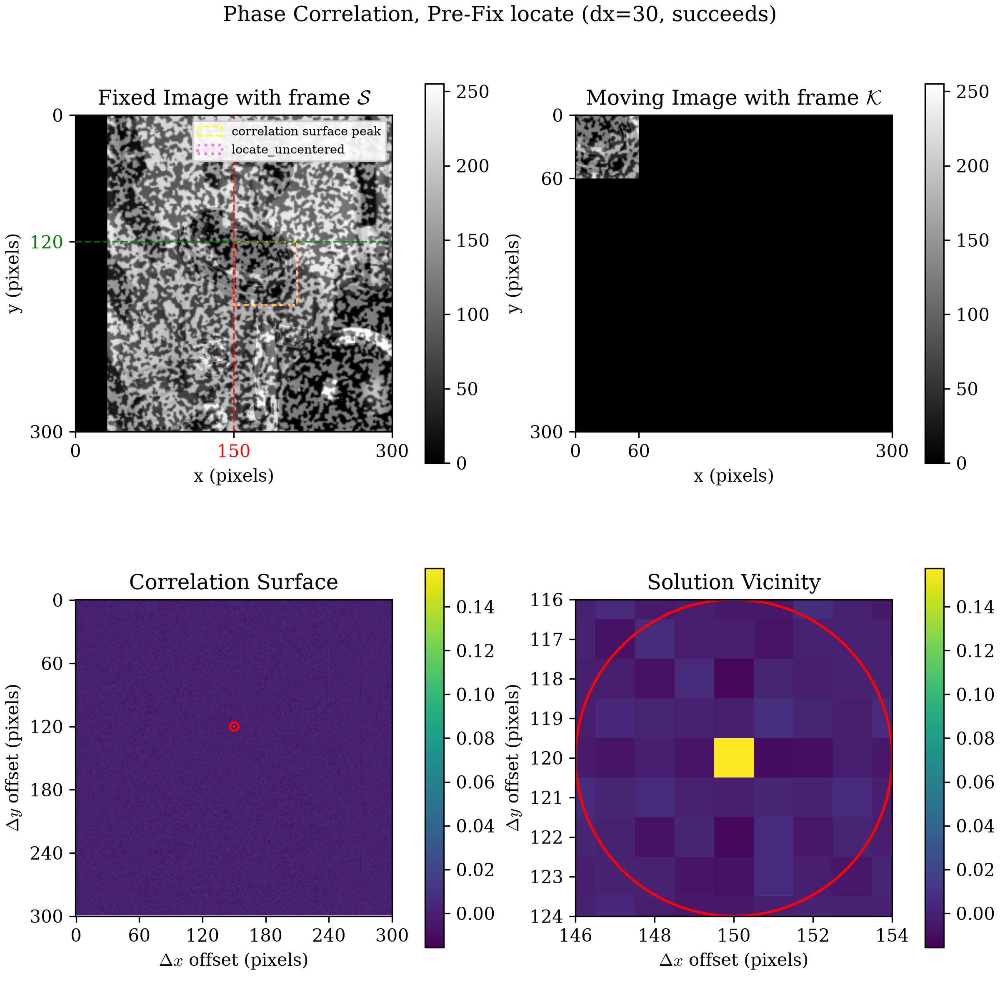
dx = 30: the black margin on the left is exactly 30px wide -- dx itself, visible directly, not just computed. The two boxes coincide: locate_uncentered reports the same position the surface actually peaks at.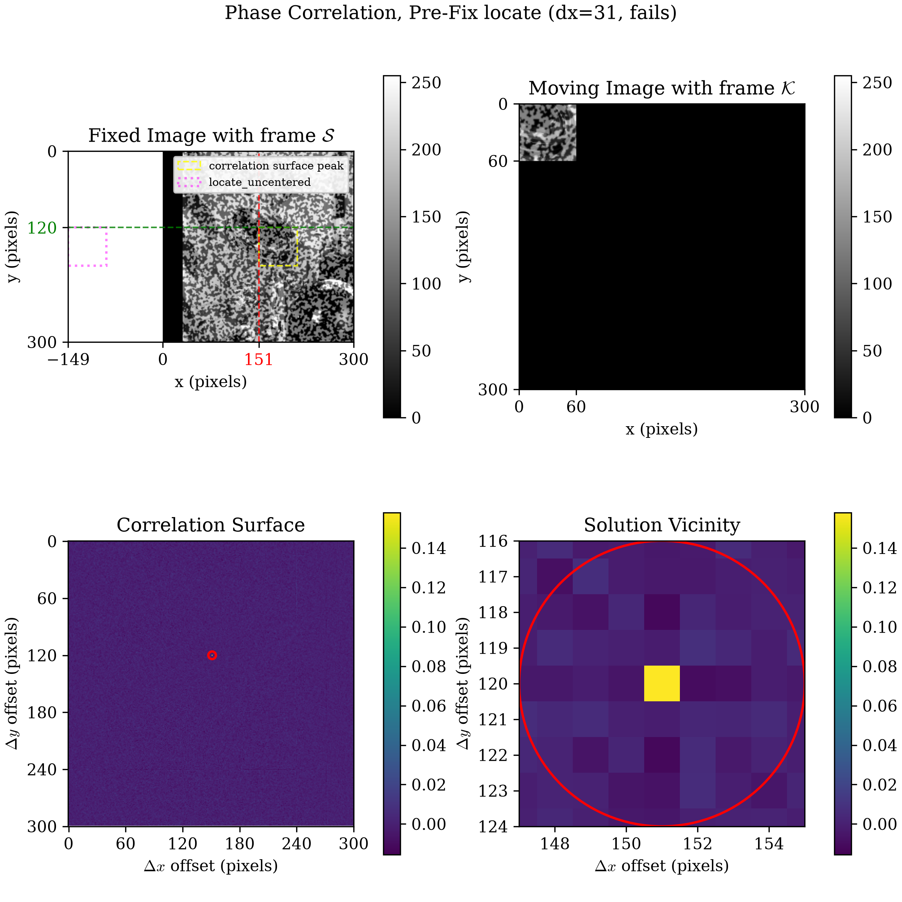
dx = 31: the yellow box still marks the surface's true (correct) peak. The magenta box -- where locate_uncentered actually reports the point -- lands entirely outside the visible search frame, off by exactly the padded array's own width.Fixing locate
recoverable_displacement_range_fixing_locate.py
(full source at the bottom of this page) re-runs The First Sweep's
exact scenario and dx values against the real, shipped
dictk.translation.locate --
not locate_uncentered -- before this page walks through why the fix
was needed. Same two reference frames as The First Sweep's own table
above:
| dx | current_image (absolute) | Fixed Image, frame | match | ||
|---|---|---|---|---|---|
| expected | found | expected | found | ||
| 0 | (150,150) | (150,150) | (120,120) | (120,120) | True |
| 10 | (160,150) | (160,150) | (130,120) | (130,120) | True |
| 20 | (170,150) | (170,150) | (140,120) | (140,120) | True |
| 25 | (175,150) | (175,150) | (145,120) | (145,120) | True |
| 29 | (179,150) | (179,150) | (149,120) | (149,120) | True |
| 30 | (180,150) | (180,150) | (150,120) | (150,120) | True |
| 31 | (181,150) | (181,150) | (151,120) | (151,120) | True |
| 35 | (185,150) | (185,150) | (155,120) | (155,120) | True |
| 40 | (190,150) | (190,150) | (160,120) | (160,120) | True |
| 50 | (200,150) | (200,150) | (170,120) | (170,120) | True |
Every row matches now, cliff included.
recoverable_displacement_range_fixing_locate_quadrant.py
draws dx = 31 -- the cliff itself -- the same way Seeing the Cliff
did, but with centered=True:
phase_correlation_quadrant_plot
pads the Moving Image panel's kernel the same way locate now does
internally, instead of the permanent bottom-right-only padding
phase_correlation itself always keeps. Compare the two Moving Image
panels directly: Seeing the Cliff's dx = 31
figure shows the kernel's content pinned to the
top-left corner of an otherwise-black canvas; this one shows the exact
same content centered within it, black on all four sides evenly. That
single difference is the entire fix:
Saved: recoverable_displacement_range_fixing_locate_quadrant_dx31.png
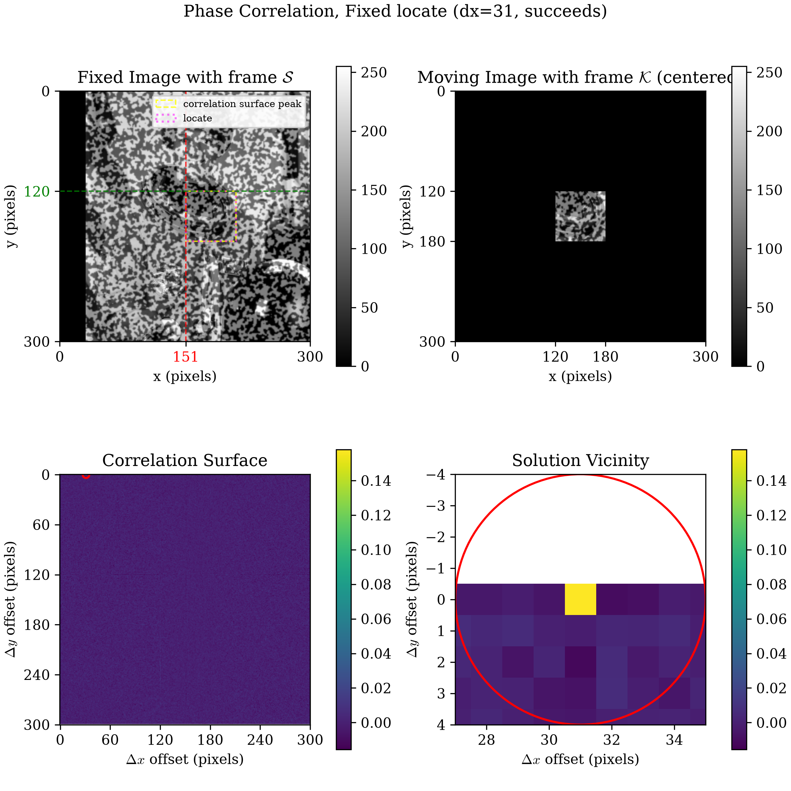
dx = 31, post-fix. The Moving Image panel's kernel content is centered, not pinned to the top-left corner -- compare directly against Seeing the Cliff's dx = 31 figure above. On the Fixed Image panel, the two boxes coincide again: locate now reports the same position the surface actually peaks at, past the old cliff.The rest of this page takes a step back and walks through the investigation in full -- the hypotheses that turned out not to explain it, the confound that had to be set aside, isolating the real variable, and exactly why the kernel's padding needed to be centered to fix this.
The Original Stretch Question
That cliff is the real bug this page fixes, but it isn't how the
investigation actually started. It began from a different angle:
Simple Stretch's own question, how far can
astronaut0 be stretched, or compressed, before locate stops finding
the exact expected position? Reuse Point
Grid's 12 points and sweep
factor_x upward, sizing search_margin_width per factor so it always
comfortably contains the largest point's displacement — wide enough
that "the window was too small" can't explain a failure:
from dictk.image import read, stretch, PixelCoordinate
from dictk.grid import generate, locate
reference_image = read(path="astronaut0.png")
points = generate(
origin=PixelCoordinate(x=50, y=50), count_x=3, count_y=4, spacing_x=50, spacing_y=55
)
kernel_margin = 20
for p in [2, 4, 6, 8, 18, 20, 40, 80]:
factor_x = 1 + p / 100
current_image = stretch(arr=reference_image, factor_x=factor_x)
max_disp = max(abs(pt.x * (factor_x - 1)) for pt in points)
search_margin_width = max(int(max_disp) + 15, kernel_margin + 10)
found = locate(
reference_image=reference_image, current_image=current_image, reference_points=points,
kernel_margin_width=kernel_margin, kernel_margin_height=kernel_margin,
search_margin_width=search_margin_width, search_margin_height=52,
)
expected = [PixelCoordinate(x=int(pt.x * factor_x), y=pt.y) for pt in points]
n_match = sum(1 for f, e in zip(found, expected) if f == e)
print(f"{p:3d}% search_margin_width={search_margin_width:4d} matched={n_match:2d}/12")
| Stretch | factor_x | search_margin_width | Matched |
|---|---|---|---|
| 2% | 1.02 | 30 | 12/12 |
| 4% | 1.04 | 30 | 12/12 |
| 6% | 1.06 | 30 | 10/12 |
| 8% | 1.08 | 30 | 6/12 |
| 18% | 1.18 | 41 | 1/12 |
| 20% | 1.20 | 44 | 1/12 |
| 40% | 1.40 | 74 | 0/12 |
| 80% | 1.80 | 135 | 0/12 |
Matching collapses almost immediately — well before 20% stretch. That's surprising: at this book's own 40-pixel kernel scale, a real degradation-driven failure shouldn't set in this early.
This table already runs against locate's real, fixed version — it's
live, re-run on every book build. Path
Forward already checked whether the fix
above changed it, and it doesn't: search_margin_width here is always
sized larger than the true displacement, so this sweep never actually
hits the cliff bug The First Sweep demonstrated. Something else
explains this particular collapse.
Two Hypotheses, Both Ruled Out
Two mechanisms seemed possible: blur or canvas exit.
Hypothesis 1: Blur
stretch uses bilinear interpolation, sampling an increasingly small
crop of the original image to fill the same canvas. Whole-image
contrast does drop as factor_x grows — but only mildly, from a
standard deviation of 63.8 at factor_x=1.0 to 58.1 even at
factor_x=3.0. Not a collapse.
That claim is a whole-image statistic. Seeing it directly, side by side with the image it's measuring, makes it concrete rather than just asserted:
import matplotlib.pyplot as plt
from dictk.image import read, stretch
reference_image = read(path="astronaut0.png")
factors = [1.0, 1.5, 2.0, 3.0]
plt.rcParams.update({"font.family": "serif", "mathtext.fontset": "cm"})
fig, axes = plt.subplots(2, len(factors), figsize=(11, 5.8), constrained_layout=True)
for col, factor_x in enumerate(factors):
img = stretch(arr=reference_image, factor_x=factor_x)
mean, std = img.mean(), img.std()
axes[0, col].imshow(img, cmap="gray", vmin=0, vmax=255)
axes[0, col].set_title(f"factor_x={factor_x:.1f}\nstd={std:.1f}", fontsize=10)
axes[0, col].set_xticks([])
axes[0, col].set_yticks([])
ax_hist = axes[1, col]
counts, _, _ = ax_hist.hist(img.ravel(), bins=50, range=(0, 255), color="black", alpha=0.7)
y_bracket = counts.max() * 1.12
ax_hist.axvline(mean - std, color="tab:red", linestyle="--", linewidth=1)
ax_hist.axvline(mean + std, color="tab:red", linestyle="--", linewidth=1)
ax_hist.annotate(
"",
xy=(mean - std, y_bracket),
xytext=(mean + std, y_bracket),
arrowprops=dict(arrowstyle="<->", color="tab:red"),
)
ax_hist.text(mean, y_bracket * 1.06, f"±1 std = {std:.1f}", ha="center", va="bottom", fontsize=8, color="tab:red")
ax_hist.set_ylim(0, y_bracket * 1.35)
ax_hist.set_xlim(0, 255)
ax_hist.set_xlabel("pixel value", fontsize=8)
fig.savefig("recoverable_displacement_range_blur.png", dpi=300)
Saved: recoverable_displacement_range_blur.png
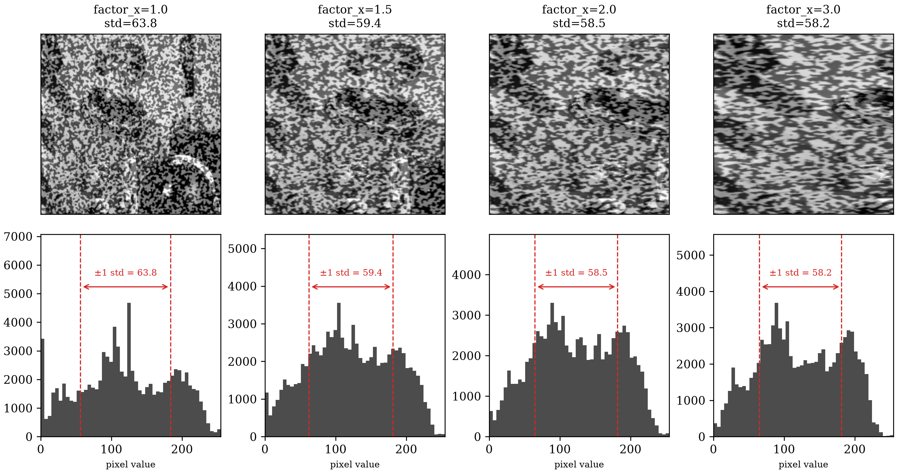
astronaut0 stretched at four factors. Bottom: each one's own pixel-value histogram, with a red bracket marking the ±1 standard deviation span. The images show where the blur comes from — horizontal streaking, since stretch only resamples along — but the bracket confirms it's mild: the span narrows only slightly as standard deviation drops from 63.8 to 58.2, nowhere near the collapse the first sweep showed at just 6-8%.There's also a theoretical reason this mild blur shouldn't move the peak
at all. locate's phase normalization
divides out signal strength at every frequency and keeps only direction.
Blurring changes strength, not direction — the same property that already
makes locate insensitive to contrast. Only heavy blur eventually breaks
that guarantee in practice, since real images pad and round at their
edges instead of matching the idealized math exactly. stretch never
reaches that regime at these factors.
Hypothesis 2: Canvas Exit
stretch pivots at the origin, so a point far enough from it can be
pushed past the image's fixed 300-pixel edge. For (this grid's
maximum dimension) that doesn't happen until factor_x=2.0 — 100%
stretch, long after the matching collapse above.
Plotting that point's expected position directly on each stretched image makes the exit itself visible, not just computed:
import matplotlib.pyplot as plt
from dictk.image import read, stretch
reference_image = read(path="astronaut0.png")
height, width = reference_image.shape
p_x, p_y = 150, 50 # the grid's farthest point from the origin
factors = [1.0, 1.5, 2.0, 2.5]
plt.rcParams.update({"font.family": "serif", "mathtext.fontset": "cm"})
fig, axes = plt.subplots(1, len(factors), figsize=(11, 3.4), constrained_layout=True)
for ax, factor_x in zip(axes, factors):
img = stretch(arr=reference_image, factor_x=factor_x)
x_expected = p_x * factor_x
on_canvas = x_expected < width
ax.imshow(img, cmap="gray", vmin=0, vmax=255, extent=[0, width, height, 0])
ax.axvline(width, color="tab:red", linestyle="--", linewidth=1)
ax.plot(x_expected, p_y, marker="+", color="tab:orange", markersize=10, markeredgewidth=2.5)
ax.set_xlim(-20, 400)
ax.set_ylim(height + 20, -20)
status = "on canvas" if on_canvas else "OFF CANVAS"
ax.set_title(f"factor_x={factor_x:.1f}\nx={x_expected:.0f} ({status})", fontsize=10)
ax.set_xticks([])
ax.set_yticks([])
fig.savefig("recoverable_displacement_range_canvas_exit.png", dpi=300)
Saved: recoverable_displacement_range_canvas_exit.png
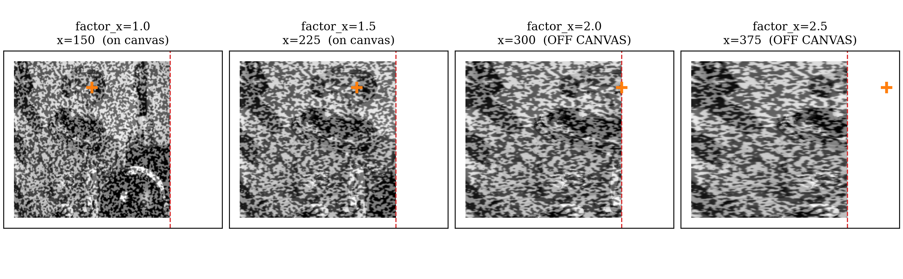
factor_x=2.0 — the threshold the text above states — and floats clearly outside the image by factor_x=2.5. That threshold sits far past the collapse the first sweep showed at just 6-8%, ruling canvas exit out too.Neither blur nor canvas exit explains a collapse at 6-8%. Something else is going on, and it isn't image degradation.
An Interpolation Confound, Set Aside
Chasing the real cause directly through stretch turned out to be the
wrong tool: even at a percentage chosen so a point's center pixel
lands on an exact integer, bilinear interpolation still resamples
every other pixel in that point's kernel from a fractional source
coordinate. The center matches; the kernel's surrounding texture is
subtly blurred anyway, in a way that grows with factor_x. That's a
real phenomenon — related to Path Forward's Postponed subpixel-accuracy
item — but a second, separate one from
whatever is causing the sharp, early collapse above. Isolating the real
cause means removing this confound entirely: pure integer-pixel
translate instead of stretch,
where every pixel maps from an exact integer source coordinate and
bilinear interpolation never activates at all.
Isolating the Real Variable
Consider a point in the reference configuration with coordinate px in astronaut0.
It moves a displacement of px — 10 px
to the right — landing at px in the current configuration.
Now consider four kernel margins ( px, small to large)
and, for each one, two search margins (kernel_margin + 15 and
kernel_margin + 80 px) — eight combinations in total.
- Question: Does the ratio of kernel size to search-window size explain anything?
- Answer: It does not.
All eight combinations find the exact expected point — from a comfortable ratio of 0.67 down to a razor-thin 0.10:
from dictk.image import read, translate, PixelCoordinate
from dictk.translation import locate
reference_image = read(path="astronaut0.png")
p0 = PixelCoordinate(x=150, y=150)
dx = 10
current_image = translate(arr=reference_image, dx=dx, dy=0)
expected = PixelCoordinate(x=p0.x + dx, y=p0.y)
for kernel_margin in [15, 20, 25, 30]:
for search_margin in [kernel_margin + 15, kernel_margin + 80]:
found = locate(
reference_image=reference_image, current_image=current_image,
reference_point=p0, search_center=p0,
kernel_margin_width=kernel_margin, kernel_margin_height=kernel_margin,
search_margin_width=search_margin, search_margin_height=search_margin,
)
ratio = kernel_margin / search_margin
print(f"kernel_margin={kernel_margin:2d} search_margin={search_margin:3d} ratio={ratio:.2f} match={found == expected}")
| kernel_margin | search_margin | ratio | match |
|---|---|---|---|
| 15 | 30 | 0.50 | True |
| 15 | 95 | 0.16 | True |
| 20 | 35 | 0.57 | True |
| 20 | 100 | 0.20 | True |
| 25 | 40 | 0.62 | True |
| 25 | 105 | 0.24 | True |
| 30 | 45 | 0.67 | True |
| 30 | 110 | 0.27 | True |
Ratio genuinely doesn't matter. But, raw displacement does matter.
locate compares that raw displacement against kernel_margin alone.
search_margin plays no role here, no matter how large it is.
The rest of this section demonstrates that failure directly, using
recoverable_displacement_range_uncentered_demo.py,
a Python script listed at the bottom of this page. That script
contains a (now understood to be buggy) version of locate, called
locate_uncentered. It calls _kernel_pad(..., centered=False), where the
centered=False is the crucial bug-inducing parameter. This
script exists because the real, shipped locate has already been
fixed to center-pad the kernel. It would no longer reproduce the
cliff bug, shown next.
Consider again a point in the reference configuration at px.
Let kernel_margin = 30 px, a reasonable size.
Let search_margin = 180 px, a generous size (and this size shouldn't matter, per the result above).
Now investigate a series of dx values: kernel_margin ,
which is . Each dx produces one candidate current
configuration. The (right-hand side) cliff appears the moment dx crosses one pixel past
kernel_margin, at kernel_margin . There, the found location is
predicted at px, not the expected px value.
The tabular output from recoverable_displacement_range_uncentered_demo.py follows:
| dx | kernel_margin offset | expected | found | match |
|---|---|---|---|---|
| 27 | -3 | (177,150) | (177,150) | True |
| 29 | -1 | (179,150) | (179,150) | True |
| 30 | +0 | (180,150) | (180,150) | True |
| 31 | +1 | (181,150) | (-179,150) | False |
| 33 | +3 | (183,150) | (-177,150) | False |
A sharp (right-side) cliff, exactly at dx == kernel_margin. The search_margin=180,
six times larger than kernel_margin, makes no difference at all.
Root Cause
dictk.translation.locate
zero-pads the kernel up to the search area's own size before the FFT
(see Correlation Criteria).
Until this page, that padding placed the kernel's real content at the
padded array's top-left corner — everything else, zero. FFT-based phase
correlation is circular: the shift it reports is only meaningful modulo
the array's own size, wrapping silently past that.
With the kernel
anchored at the corner instead of centered, the safe half of that
circle landed almost entirely on the negative side. The positive side
had almost none of it to spare — capped at exactly kernel_margin,
regardless of how large search_margin was set. Past that cap, locate
didn't fail visibly. It confidently returned a wrong PixelCoordinate,
offset from the true one by exactly the padded array's own width.
The Fix
Now let's use the fixed (updated/shipped) version of locate, which
centers the kernel's content within the padded array.
Consider again a point with reference configuration px.
Let kernel_margin = 30 and let search_margin = 45.
The recoverable range is now symmetric, bounded by search_margin in
both directions, exactly as the parameter's own name implies it
always should have been:
| dx | expected | found | match |
|---|---|---|---|
| 30 | (180,150) | (180,150) | True |
| 40 | (190,150) | (190,150) | True |
| 44 | (194,150) | (194,150) | True |
| 45 | (195,150) | (195,150) | True |
| 46 | (196,150) | (106,150) | False |
| -44 | (106,150) | (106,150) | True |
| -45 | (105,150) | (195,150) | False |
We now have success right up to the search_margin on the right:
- With
dx = 45,locatesuccessfully finds the correct value. - With
dx = 46,locatecycles back thesearch_margin, px, predicting , not the expected .
Similarly, on the left side of the search_margin:
- With
dx = -44,locatesuccessfully finds the correct value. - With
dx = -45,locatecycles forward thesearch_margin, px, predicting , not the expected .
Look closely at dx = 45 and dx = -45. One succeeds; the other fails.
That is not a contradiction of the symmetry claimed above — it is a
single, unavoidable edge case. In this circular system, and
land on the exact same point: they are px apart, and px is
the whole width of the padded array. locate cannot tell them apart.
It must pick one interpretation, and it happens to pick the positive
one. This one-pixel ambiguity is a property of representing a circle
with discrete arithmetic. It is not a bug.
The whole picture — point, kernel, search window, and the two
positions one pixel past the edge where locate wraps — drawn by
recoverable_displacement_range_the_fix_cliff.py
(full source at the bottom of this page):
Saved: recoverable_displacement_range_the_fix_cliff.png
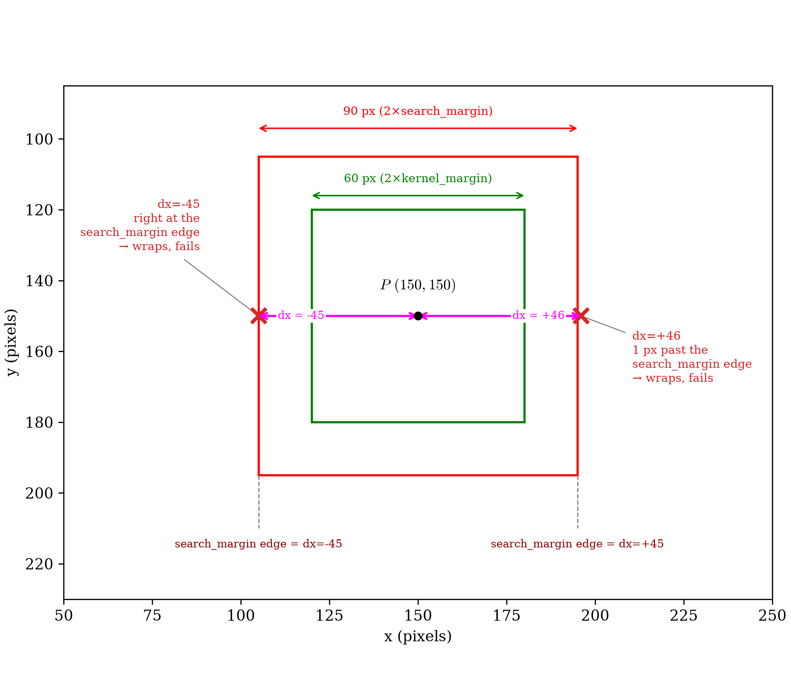
dx = -45 on the left, exactly at the search window's edge, and dx = +46 on the right, one pixel past it. At both (the red × marks), locate wraps and fails.Scope of the Fix
The old, single _window_and_pad helper did two separable jobs at
once: taper kernel/search toward zero (if windowing was given),
then zero-pad kernel up to search's own shape. Only the first job
ever needed the full search array; the second only ever read its
shape. Splitting them makes that honest: _window tapers both arrays
(unchanged from before), and _kernel_pad grows kernel up to a given
(height, width) — never search itself — gaining the centered
parameter this page is about. locate calls _kernel_pad with
centered=True.
phase_correlation —
the surface-visualization function behind every figure in Correlation
Visualization — keeps the old,
uncentered default. Every peak position already published there, all
well within the old safe range regardless of which convention computed
it, stays exactly as documented; nothing needed regenerating.
Correlation Criteria notes
the difference where its own teaching example reimplements this same
padding step.
What This Means in Practice
search_margin now means what it always should have: the full range a
true displacement can fall within, safely, in every direction. That's
progress, but it doesn't remove the underlying cost — a bigger unknown
displacement still needs a bigger search_margin, and a bigger
search_margin still means a bigger FFT at every point. Search Center
Predictions picks up exactly here: a
better initial guess than "zero displacement" shrinks how much
search_margin has to cover in the first place.
The original question — how far astronaut0 can actually be stretched
or compressed before locate breaks — is still open. This page didn't
answer it; it found and fixed something that had to be fixed first. The
interpolation confound flagged above is still there too. Both are
follow-up work, not resolved here.
recoverable_displacement_range_uncentered_demo.py
"""Reproduces `dictk.translation.locate`'s behavior before the fix
documented in Recoverable Displacement Range: kernel content anchored at
the padded array's top-left corner, not centered.
Runs live on every book build, not from a committed snapshot.
"""
from dictk.correlation import _kernel_pad, _window
from dictk.image import PixelCoordinate, read, subimage, translate
from skimage.registration import phase_cross_correlation
def locate_uncentered(
reference_image,
current_image,
reference_point,
search_center,
kernel_margin,
search_margin,
):
kernel_origin = PixelCoordinate(
x=reference_point.x - kernel_margin, y=reference_point.y - kernel_margin
)
kernel = subimage(
image=reference_image,
origin=kernel_origin,
width=2 * kernel_margin,
height=2 * kernel_margin,
)
search_origin = PixelCoordinate(
x=search_center.x - search_margin, y=search_center.y - search_margin
)
search = subimage(
image=current_image,
origin=search_origin,
width=2 * search_margin,
height=2 * search_margin,
)
kernel, search = _window(kernel=kernel, search=search, windowing=None)
kernel_padded, _, _ = _kernel_pad(kernel=kernel, shape=search.shape, centered=False)
shift, _, _ = phase_cross_correlation(
reference_image=search, moving_image=kernel_padded, normalization="phase"
)
return PixelCoordinate(
x=search_origin.x + int(shift[1]) + kernel_margin,
y=search_origin.y + int(shift[0]) + kernel_margin,
)
if __name__ == "__main__":
reference_image = read(path="astronaut0.png")
p0 = PixelCoordinate(x=150, y=150)
kernel_margin = 30
search_margin = (
180 # generous, fixed -- shouldn't matter, per the ratio result above
)
print("| dx | kernel_margin offset | expected | found | match |")
print("|---|---|---|---|---|")
for dx in [
kernel_margin - 3,
kernel_margin - 1,
kernel_margin,
kernel_margin + 1,
kernel_margin + 3,
]:
current_image = translate(arr=reference_image, dx=dx, dy=0)
expected = PixelCoordinate(x=p0.x + dx, y=p0.y)
found = locate_uncentered(
reference_image, current_image, p0, p0, kernel_margin, search_margin
)
print(
f"| {dx} | {dx - kernel_margin:+d} | ({expected.x},{expected.y}) | "
f"({found.x},{found.y}) | {found == expected} |"
)
recoverable_displacement_range_the_fix_cliff.py
"""Draws the reference point, its kernel (green), and its search window
(red) from The Fix in Recoverable Displacement Range, along with the
two positions one pixel past the search_margin edge where `locate`
wraps and fails.
Runs live on every book build, not from a committed snapshot.
"""
import matplotlib.patches as patches
import matplotlib.pyplot as plt
p0_x, p0_y = 150, 150
kernel_margin = 30
search_margin = 45
plt.rcParams.update({"font.family": "serif", "mathtext.fontset": "cm"})
fig, ax = plt.subplots(figsize=(7.5, 6.5), constrained_layout=True)
ax.plot(p0_x, p0_y, "o", color="black", markersize=5, zorder=8)
ax.annotate(
"$P\\ (150, 150)$",
(p0_x, p0_y),
textcoords="offset points",
xytext=(0, 18),
ha="center",
fontsize=10,
zorder=9,
)
# kernel (green) and search window (red), same colors as cross_correlation.md
ax.add_patch(
patches.Rectangle(
(p0_x - kernel_margin, p0_y - kernel_margin),
2 * kernel_margin,
2 * kernel_margin,
edgecolor="green",
facecolor="none",
linewidth=1.5,
zorder=3,
)
)
ax.add_patch(
patches.Rectangle(
(p0_x - search_margin, p0_y - search_margin),
2 * search_margin,
2 * search_margin,
edgecolor="red",
facecolor="none",
linewidth=1.5,
zorder=2,
)
)
# two dx displacement lines, each with arrowheads at both its own ends,
# right at y=150 -- P's own row. Left: P to the dx=-45 marker. Right: P
# to the dx=+46 marker. Labels sit right on the line, in the gap between
# the kernel box and each marker, clear of the kernel box itself.
dx_y = p0_y
for x_start, x_end, label, label_x in [
(p0_x - 45, p0_x, "dx = -45", 117),
(p0_x, p0_x + 46, "dx = +46", 184),
]:
ax.annotate(
"",
xy=(x_end, dx_y),
xytext=(x_start, dx_y),
arrowprops=dict(
arrowstyle="<->", color="magenta", linewidth=1.5, shrinkA=0, shrinkB=0
),
zorder=6,
)
ax.text(
label_x,
dx_y,
label,
ha="center",
va="center",
fontsize=7.5,
color="magenta",
zorder=7,
bbox=dict(facecolor="white", edgecolor="none", pad=1),
)
# one pixel past the search_margin edge, both sides -- where locate wraps
ax.plot(
p0_x + 46, p0_y, "x", color="tab:red", markersize=10, markeredgewidth=2.5, zorder=4
)
ax.plot(
p0_x - 45, p0_y, "x", color="tab:red", markersize=10, markeredgewidth=2.5, zorder=4
)
ax.annotate(
"dx=+46\n1 px past the\nsearch_margin edge\n→ wraps, fails",
(p0_x + 46, p0_y),
textcoords="offset points",
xytext=(35, -45),
fontsize=8,
ha="left",
color="tab:red",
arrowprops=dict(arrowstyle="-", color="gray", linewidth=0.7, shrinkA=3, shrinkB=3),
)
ax.annotate(
"dx=-45\nright at the\nsearch_margin edge\n→ wraps, fails",
(p0_x - 45, p0_y),
textcoords="offset points",
xytext=(-40, 45),
fontsize=8,
ha="right",
color="tab:red",
arrowprops=dict(arrowstyle="-", color="gray", linewidth=0.7, shrinkA=3, shrinkB=3),
)
# dimension arrows for both boxes -- kdim_y sits close to the kernel
# box's own top edge; sdim_y stays further out, above the search box
kdim_y, sdim_y = p0_y - kernel_margin - 4, p0_y - search_margin - 8
ax.annotate(
"",
xy=(p0_x - kernel_margin, kdim_y),
xytext=(p0_x + kernel_margin, kdim_y),
arrowprops=dict(arrowstyle="<->", color="green", shrinkA=0, shrinkB=0),
)
ax.text(
p0_x,
kdim_y - 3,
"60 px (2×kernel_margin)",
ha="center",
va="bottom",
fontsize=8,
color="green",
)
ax.annotate(
"",
xy=(p0_x - search_margin, sdim_y),
xytext=(p0_x + search_margin, sdim_y),
arrowprops=dict(arrowstyle="<->", color="red", shrinkA=0, shrinkB=0),
)
ax.text(
p0_x,
sdim_y - 3,
"90 px (2×search_margin)",
ha="center",
va="bottom",
fontsize=8,
color="red",
)
# guide lines from each search_margin edge down to a caption naming its dx value
caption_y = p0_y + search_margin + 18
for x_edge, sign in [(p0_x - search_margin, "-45"), (p0_x + search_margin, "+45")]:
ax.plot(
[x_edge, x_edge],
[p0_y + search_margin, caption_y - 3],
color="gray",
linestyle="--",
linewidth=0.8,
)
ax.text(
x_edge,
caption_y,
f"search_margin edge = dx={sign}",
ha="center",
va="top",
fontsize=7.5,
color="darkred",
)
ax.set_xlim(p0_x - search_margin - 55, p0_x + search_margin + 55)
ax.set_ylim(p0_y + search_margin + 35, sdim_y - 12)
ax.set_xlabel("x (pixels)")
ax.set_ylabel("y (pixels)")
ax.set_aspect("equal")
fig.savefig("recoverable_displacement_range_the_fix_cliff.png", dpi=300)
print("Saved: recoverable_displacement_range_the_fix_cliff.png")
recoverable_displacement_range_first_sweep_quadrant.py
"""Illustrates The First Sweep's cliff directly: a phase-correlation
quadrant figure for dx=30 (succeeds) and dx=31 (fails), the same
scenario as recoverable_displacement_range_first_sweep.py.
The correlation surface itself is always correct -- dictk.correlation.
phase_correlation() never wraps, confirmed separately. The bug lives in
locate_uncentered's downstream, skimage-based signed-shift conversion,
not in the surface. So each figure marks two positions on the Fixed
Image panel: the surface's own true peak (yellow dashed, unchanged from
phase_correlation_quadrant_plot's normal behavior), and where
locate_uncentered actually reports the point (magenta,
reported_position) -- for dx=30 the two coincide; for dx=31 the magenta
box lands entirely outside the visible search frame, off by exactly the
padded array's own width, matching Root Cause's description.
Runs live on every book build, not from a committed snapshot.
"""
from dictk.image import PixelCoordinate, read, subimage, translate
from dictk.plot import phase_correlation_quadrant_plot
from recoverable_displacement_range_uncentered_demo import locate_uncentered
if __name__ == "__main__":
reference_image = read(path="astronaut0.png")
p0 = PixelCoordinate(x=150, y=150)
kernel_margin = 30
search_margin = 150 # exactly half of astronaut0's 300px canvas --
# search reads the whole image, no extraction-margin black of its
# own, so the only black left is dx's own left-side gap
kernel_origin = PixelCoordinate(x=p0.x - kernel_margin, y=p0.y - kernel_margin)
kernel = subimage(
image=reference_image,
origin=kernel_origin,
width=2 * kernel_margin,
height=2 * kernel_margin,
)
search_origin = PixelCoordinate(x=p0.x - search_margin, y=p0.y - search_margin)
for dx, label in [(30, "succeeds"), (31, "fails")]:
current_image = translate(arr=reference_image, dx=dx, dy=0)
search = subimage(
image=current_image,
origin=search_origin,
width=2 * search_margin,
height=2 * search_margin,
)
found = locate_uncentered(
reference_image, current_image, p0, p0, kernel_margin, search_margin
)
# found is point-center convention (kernel_margin already added
# back in); convert to the surface's own top-left-corner-of-
# kernel-box, search-local convention to compare directly against
# the surface's own peak.
reported_local = PixelCoordinate(
x=(found.x - kernel_margin) - search_origin.x,
y=(found.y - kernel_margin) - search_origin.y,
)
path = f"recoverable_displacement_range_first_sweep_quadrant_dx{dx}.png"
phase_correlation_quadrant_plot(
kernel=kernel,
search=search,
title=f"Phase Correlation, Pre-Fix locate (dx={dx}, {label})",
path=path,
reported_position=reported_local,
reported_position_label="locate_uncentered",
)
print(f"Saved: {path}\n")
recoverable_displacement_range_fixing_locate.py
r"""Fixing `locate`: re-runs The First Sweep's exact scenario and dx
values, this time against the real, shipped `dictk.translation.locate`
-- not `locate_uncentered` -- to show the fix directly, before the rest
of this page walks through why it was needed.
Same two reference frames as The First Sweep's own table: `current_image`'s
own absolute frame (what `locate` actually returns), and the local frame
of `search` itself, labeled "Fixed Image, frame $\mathcal{S}$" to match
Seeing the Cliff's quadrant figures above -- those figures aren't
redrawn here (they already show the pre-fix failure; this table shows
the post-fix success, numbers only).
Runs live on every book build, not from a committed snapshot. Raw HTML,
not markdown pipe-table syntax, for the same colspan reason The First
Sweep's own table needs it.
"""
from dictk.image import PixelCoordinate, read, translate
from dictk.translation import locate
if __name__ == "__main__":
reference_image = read(path="astronaut0.png")
p0 = PixelCoordinate(x=150, y=150)
kernel_margin = 30
search_margin = 150
search_origin = PixelCoordinate(x=p0.x - search_margin, y=p0.y - search_margin)
print("<table>")
print("<thead>")
print(
'<tr><th rowspan="2">dx</th>'
'<th colspan="2">current_image (absolute)</th>'
'<th colspan="2">Fixed Image, frame $\\mathcal{S}$</th>'
'<th rowspan="2">match</th></tr>'
)
print("<tr><th>expected</th><th>found</th><th>expected</th><th>found</th></tr>")
print("</thead>")
print("<tbody>")
for dx in [0, 10, 20, 25, 29, 30, 31, 35, 40, 50]:
current_image = translate(arr=reference_image, dx=dx, dy=0)
expected = PixelCoordinate(x=p0.x + dx, y=p0.y)
found = locate(
reference_image=reference_image,
current_image=current_image,
reference_point=p0,
search_center=p0,
kernel_margin_width=kernel_margin,
kernel_margin_height=kernel_margin,
search_margin_width=search_margin,
search_margin_height=search_margin,
)
expected_s = PixelCoordinate(
x=(expected.x - kernel_margin) - search_origin.x,
y=(expected.y - kernel_margin) - search_origin.y,
)
found_s = PixelCoordinate(
x=(found.x - kernel_margin) - search_origin.x,
y=(found.y - kernel_margin) - search_origin.y,
)
print(
f"<tr><td>{dx}</td>"
f"<td>({expected.x},{expected.y})</td><td>({found.x},{found.y})</td>"
f"<td>({expected_s.x},{expected_s.y})</td><td>({found_s.x},{found_s.y})</td>"
f"<td>{found == expected}</td></tr>"
)
print("</tbody>")
print("</table>")
recoverable_displacement_range_fixing_locate_quadrant.py
"""Illustrates Fixing `locate`'s dx=31 row: the same phase-correlation
quadrant figure Seeing the Cliff drew for the pre-fix failure, this time
against the real, shipped `dictk.translation.locate`, with
`centered=True` -- the same centered kernel padding `locate` uses
internally now, via `_kernel_pad(..., centered=True)` -- instead of
`phase_correlation`'s own permanent bottom-right-only default.
Unlike Seeing the Cliff's dx=31 figure, the two boxes coincide here: the
surface's own true peak and locate's actual reported position agree,
since the fix is exactly what makes them agree past the old cliff.
Runs live on every book build, not from a committed snapshot.
"""
from dictk.image import PixelCoordinate, read, subimage, translate
from dictk.plot import phase_correlation_quadrant_plot
from dictk.translation import locate
if __name__ == "__main__":
reference_image = read(path="astronaut0.png")
p0 = PixelCoordinate(x=150, y=150)
kernel_margin = 30
search_margin = 150
dx = 31
kernel_origin = PixelCoordinate(x=p0.x - kernel_margin, y=p0.y - kernel_margin)
kernel = subimage(
image=reference_image,
origin=kernel_origin,
width=2 * kernel_margin,
height=2 * kernel_margin,
)
search_origin = PixelCoordinate(x=p0.x - search_margin, y=p0.y - search_margin)
current_image = translate(arr=reference_image, dx=dx, dy=0)
search = subimage(
image=current_image,
origin=search_origin,
width=2 * search_margin,
height=2 * search_margin,
)
found = locate(
reference_image=reference_image,
current_image=current_image,
reference_point=p0,
search_center=p0,
kernel_margin_width=kernel_margin,
kernel_margin_height=kernel_margin,
search_margin_width=search_margin,
search_margin_height=search_margin,
)
# Same conversion The First Sweep's own table uses: found is
# point-center convention (kernel_margin already added back in);
# convert to the surface's own frame-S, search-local convention.
reported_local = PixelCoordinate(
x=(found.x - kernel_margin) - search_origin.x,
y=(found.y - kernel_margin) - search_origin.y,
)
path = "recoverable_displacement_range_fixing_locate_quadrant_dx31.png"
phase_correlation_quadrant_plot(
kernel=kernel,
search=search,
title=f"Phase Correlation, Fixed locate (dx={dx}, succeeds)",
path=path,
reported_position=reported_local,
reported_position_label="locate",
centered=True,
)
print(f"Saved: {path}")
Pure Rotation
How large a rigid-body rotation angle can
dictk's correlation-based tracking actually recover before it breaks
down? Rigid Body Motion and the polar
decomposition (, see
Continuum Mechanics)
already separate rotation from stretch in theory — a pure rotation
carries zero strain by construction. This page starts checking that
against real tracking, not just the closed-form math.
The First Sweep
Reuse Point Grid's 12 points and
sweep rotate's angle upward. rotate pivots on the image's
top-left corner (0, 0), so each point's expected position after
rotation comes from the standard rotation matrix applied to its own
coordinate — not a fixed displacement, since points farther
from the pivot sweep a wider arc for the same angle. Size
search_margin_width/search_margin_height per angle so they always
comfortably contain the farthest point's displacement, the same
generous-margin approach Recoverable Displacement
Range used:
from dictk.image import read, rotate, PixelCoordinate
from dictk.grid import generate, locate
import numpy as np
reference_image = read(path="astronaut0.png")
points = generate(
origin=PixelCoordinate(x=50, y=50), count_x=3, count_y=4, spacing_x=50, spacing_y=55
)
kernel_margin = 20
def expected_position(pt, angle_deg):
theta = np.deg2rad(angle_deg)
c, s = np.cos(theta), np.sin(theta)
x = c * pt.x - s * pt.y
y = s * pt.x + c * pt.y
return PixelCoordinate(x=int(round(x)), y=int(round(y)))
for angle in [0.5, 1, 1.5, 2, 3, 5, 8, 15]:
current_image = rotate(arr=reference_image, angle=angle)
expected = [expected_position(pt, angle) for pt in points]
max_disp = max(max(abs(e.x - pt.x), abs(e.y - pt.y)) for pt, e in zip(points, expected))
search_margin = max(int(max_disp) + 15, kernel_margin + 10)
found = locate(
reference_image=reference_image, current_image=current_image, reference_points=points,
kernel_margin_width=kernel_margin, kernel_margin_height=kernel_margin,
search_margin_width=search_margin, search_margin_height=search_margin,
)
n_match = sum(1 for f, e in zip(found, expected) if f == e)
print(f"{angle}deg search_margin={search_margin} matched={n_match}/12")
| Angle (deg) | search_margin | Matched |
|---|---|---|
| 0.5 | 30 | 12/12 |
| 1 | 30 | 12/12 |
| 1.5 | 30 | 11/12 |
| 2 | 30 | 9/12 |
| 3 | 30 | 6/12 |
| 5 | 34 | 1/12 |
| 8 | 46 | 0/12 |
| 15 | 76 | 0/12 |
Matching collapses even faster than Recoverable Displacement
Range's stretch
sweep did — well under half the points still match by 2 degrees, and
none do by 8 degrees. search_margin is generous at every angle here,
so window size isn't the constraint.
A likely reason: a large enough rotation doesn't just move a
point, it turns the kernel's own content around that point, and a
translation-only search can't follow content that's rotating, not just
sliding. The next two sections test that directly.
Confirming the Content-Rotation Hypothesis
Removing the Search Itself
The First Sweep's search_margin is generous, but it's still a guess —
locate still has to search for the right answer within that margin.
Remove that variable entirely: pass search_centers the true expected
position directly, so locate doesn't have to search at all, and shrink
the margin down to a fixed, minimal size:
| Angle (deg) | Matched |
|---|---|
| 0.5 | 12/12 |
| 1 | 12/12 |
| 1.5 | 11/12 |
| 2 | 9/12 |
| 3 | 7/12 |
| 5 | 0/12 |
| 8 | 0/12 |
| 15 | 0/12 |
Nearly the same collapse, at nearly the same angles, as the First
Sweep's generous-margin version. Handing locate the exact right
answer barely helps. Search mechanics — margin size, centering guesses
— were never the constraint.
Measuring Content Similarity Directly
If the search itself isn't the problem, the content being matched is.
Set that up as a direct measurement, with no search or locate call at
all: extract the kernel from reference_image at each point, extract
the same-sized patch from the rotated current_image at that point's
exact true position, and score their similarity with
dictk.correlation.zncc, which is exactly
1.0 for identical content and falls toward 0 (or negative) as content
diverges:
| Angle (deg) | Mean ZNCC | Min ZNCC |
|---|---|---|
| 0 | 1.000 | 1.000 |
| 0.5 | 0.968 | 0.939 |
| 1 | 0.965 | 0.948 |
| 1.5 | 0.940 | 0.879 |
| 2 | 0.909 | 0.861 |
| 3 | 0.860 | 0.800 |
| 5 | 0.736 | 0.669 |
| 8 | 0.545 | 0.408 |
| 15 | 0.249 | -0.184 |
Similarity falls off steeply and smoothly with angle, with zero search involved at all — this is the exact correct alignment, every time. By 8 degrees, mean similarity has already dropped to about half; by 15, some points score negative, meaning the rotated patch is anti-correlated with the original, not just a weaker match. That confirms the hypothesis directly: a rotated kernel's content genuinely stops resembling itself, at exactly the position where it should match perfectly. This isn't a search, margin, or centering-guess problem — it's that the content itself has changed shape.
One thing this doesn't separate out: rotate uses the same bilinear
interpolation as stretch, and Recoverable Displacement
Range
already found interpolation blur alone can cause a similar-looking
near-miss failure. A genuinely rotated feature (say, a straight edge
tilted a few degrees) looks different from the original even with
perfect, blur-free resampling — so both effects are likely compounding
here, not just one. Telling those two contributions apart is a
reasonable next step, not done yet.
Search Center Predictions
dictk.grid.locate's search_centers
parameter defaults to None, which means each point's own
reference_points entry doubles as its search center — a "zero
displacement" guess. Every worked example in this book relies on that
default. It works well here because every displacement used so far is
small relative to the search margin chosen to contain it.
Recoverable Displacement Range
establishes that the searchable range is bounded by search_margin
itself now, not by kernel_margin. That's good news — it's a real,
symmetric bound to design around — but it doesn't remove the underlying
tension: a bigger unknown displacement still needs a bigger
search_margin to contain it, and a bigger search_margin costs more
compute (a larger FFT, at every point). The zero-displacement guess is
the worst case for this: it forces search_margin to cover the entire
possible displacement, with no help from anything already known about
how the specimen is actually deforming.
A Better Guess
If some estimate of the deformation already exists — a coarse global DIC
pass, a prior loading step in a finite element analysis, or just a
reasonable assumption about how the specimen is expected to move — that
estimate can predict roughly where each point ended up, instead of
guessing zero displacement. A smaller search_margin then suffices,
since it only needs to cover how wrong that prediction might be, not
the full displacement itself.
The natural way to express such an estimate is a deformation gradient, the same Continuum Mechanics already defines — extended here to an affine map in homogeneous coordinates, so a single matrix carries both the linear part (stretch, rotation, shear) and a translation:
where is a point's reference position (in homogeneous form) and is its predicted current position — the search center to use, not the answer itself. This is not quite Continuum Mechanics' own : that one is purely linear (no translation, in 2D); this extends it to specifically so one matrix can express a rigid translation too, the same kind of motion Multi-Point Motion tracks.
The default should be — the identity:
Because , an identity
predicts zero displacement — exactly today's existing
default (search_centers=None ⟹ each point's own reference position).
Introducing this way changes nothing for every example
already in this book; it only adds a way to do better when a better
guess is available.
Not Implemented Yet
This is a real API change, not a small one, and it touches design questions this page doesn't resolve on its own:
- Where does apply —
grid.locateonly (a natural fit, since it already computes asearch_centerslist per call), or doestranslation.locate's single-point API need an equivalent? - If a caller supplies both
Fandsearch_centersexplicitly, which wins, or is that combination an error? - Applying an affine to a
PixelCoordinateis itself a small, independently testable piece — likely a new function indictk.image, alongsidetranslate/stretch, beforegrid.locateever calls it. - A worked example needs a source for that isn't
circular (an estimate close enough to be useful, but not so close it
trivializes what
locateis finding). Where that estimate comes from in practice is its own open question.
None of this is scoped or scheduled — this page records that the
direction exists and sketches its math, not a commitment to build it on
any timeline. Build it in pieces, each with its own tests, rather than
landing the whole API change at once: the small affine-transform helper
first, then wiring it into grid.locate behind the identity default,
then a worked example once both exist. See Path
Forward for the related "dynamic
search-window sizing" direction this connects to — a better
-based guess and a smaller search_margin are two sides
of the same idea.
Twelve points, twelve independent correlations, each one still sequential so far: Parallelization picks up from here.
Parallelization
Multi-Point Motion just ran 12
independent calls to
dictk.translation.locate — one
per point, each doing its own FFT-based phase correlation — to verify
every point's displacement. We anticipate the need to process a very
large number of point-to-point correspondences to support large-scale
DIC work — a real finite element mesh (see Finite Element
Method) can easily have thousands-to-millions
of nodes, not the 12 points in the simple grid above. Each point
correspondence is independent of every other: locating point never
reads or writes anything locating point touches. That independence
isn't just a convenient property to point out —
dictk.grid.locate is already written to
exploit it. Its entire body is a single map over reference_points, one
call to dictk.translation.locate
per point, accumulating no shared state between iterations:
return [
translation.locate(
reference_image=reference_image,
current_image=current_image,
reference_point=reference_point,
search_center=search_center,
kernel_margin_width=kernel_margin_width,
kernel_margin_height=kernel_margin_height,
search_margin_width=search_margin_width,
search_margin_height=search_margin_height,
)
for reference_point, search_center in zip(reference_points, search_centers)
]
Because every iteration is already independent, parallelizing it is a
matter of swapping this list comprehension for a parallel map over the
same per-point calls. It is not a redesign.
dictk.grid.locate does exactly that
today, behind two extra keyword-only parameters: max_workers and
executor. Default max_workers=None stays sequential, the loop above,
byte-identical to locate's original behavior. A positive integer
switches to a worker pool instead.
Which pool, though, is not obvious. It needs its own explanation first.
Threads, Processes, and the GIL
CPython has a Global Interpreter Lock (GIL): only one thread can
execute Python bytecode at a time, even on a machine with many cores. A
plain Python for loop split across threads would not run any faster.
Each thread would still wait its turn for the same lock.
C extensions can release the GIL during their own C-level computation,
though. NumPy and SciPy both do this for many operations. The FFT
dictk.translation.locate actually runs is one of them —
skimage.registration.phase_cross_correlation calls scipy.fft.fftn
and scipy.fft.ifftn internally, not the Python-level fallback, and
scipy.fft releases the GIL for the duration of its own C computation.
So threads can run FFT correlations in true parallel. The GIL is not
held the whole time.
Whether that helps depends on scale. A tiny FFT finishes almost instantly. Most of the wall-clock time around it is Python-level overhead: function calls, object construction, array slicing. Releasing the GIL for a few microseconds does not buy much when the thread scheduling and GIL reacquisition around it cost microseconds too. A large FFT is different. Once the C computation itself dominates the call, the GIL-released fraction of wall-clock time dominates too, and threads start to pay off.
Threads vs. Processes: Two Different Costs
A ThreadPoolExecutor shares the caller's own memory. No pickling, no
process spawn. Cheap to start. But every task still pays a GIL
scheduling cost, and that cost does not shrink as task count grows. Run
one task or a million, each one pays it individually.
A ProcessPoolExecutor is different. Each worker is a separate OS
process, with its own interpreter and its own GIL. It gets true
parallelism regardless of whether the target function releases the GIL
at all. The cost moves elsewhere: data has to be pickled across the
process boundary, and on macOS (which spawns fresh interpreters rather
than forking) each worker re-imports NumPy, SciPy, and scikit-image
from scratch before it can do any work. That cost is mostly fixed and
paid once, when the pool starts.
That is the real asymmetry: processes pay once, threads pay every time. More tasks amortize a process pool's fixed startup cost. More tasks do not shrink a thread pool's per-task cost. Which one wins depends on both how big each task is and how many tasks there are — not on either alone.
Measuring the Trade Space
Rather than guess, measure.
parallelization_bench.py (full source
below) times sequential, threaded, and process-pool execution of
phase_cross_correlation across three scenarios. Correlation size and
point count are not independent in a real DIC problem — a
million-point mesh only makes sense with a small subset per point — so
this is three targeted scenarios, not one brute-force grid:
book_scale: this book's own kernel/search size (40 pixels), point count climbing from 100 to 1,000,000. Does point count alone ever create a crossover, at a size this small?large_subset: only 16 points, correlation size climbing from 200 to 2,000 pixels. Where does the threads crossover sit, as a function of size alone?realistic_mesh: a closer match to an actual finite element mesh — moderate correlation size (100 or 200 pixels), point count climbing from 1,000 to 100,000.
This sweep takes several minutes to run (the book_scale scenario's
1,000,000-point case alone runs over a minute) — far too slow to
re-run on every build the way this book's other figures do. Its results
are measured once and committed alongside the script that produced
them, not regenerated live. The table below still reads live from that
committed data, so it always matches the file on disk:
| Scenario | Size | Points | Sequential (s) | Threads (s) | Threads speedup | Processes (s) | Processes speedup |
|---|---|---|---|---|---|---|---|
| book_scale | 40 | 100 | 0.00752 | 0.02057 | 0.366x | 0.77663 | 0.01x |
| book_scale | 40 | 1000 | 0.07277 | 0.18621 | 0.391x | 0.99653 | 0.073x |
| book_scale | 40 | 10000 | 0.70866 | 1.83165 | 0.387x | 2.06538 | 0.343x |
| book_scale | 40 | 100000 | 7.16526 | 18.32857 | 0.391x | 14.26206 | 0.502x |
| book_scale | 40 | 1000000 | 71.65412 | 169.90165 | 0.422x | 116.62403 | 0.614x |
| large_subset | 200 | 16 | 0.01608 | 0.0087 | 1.847x | 0.83688 | 0.019x |
| large_subset | 500 | 16 | 0.10876 | 0.02691 | 4.041x | 0.82919 | 0.131x |
| large_subset | 1000 | 16 | 0.46973 | 0.10719 | 4.382x | 0.99717 | 0.471x |
| large_subset | 2000 | 16 | 2.2572 | 0.50896 | 4.435x | 2.85197 | 0.791x |
| realistic_mesh | 100 | 1000 | 0.26763 | 0.24035 | 1.114x | 0.8058 | 0.332x |
| realistic_mesh | 100 | 10000 | 2.6885 | 2.45357 | 1.096x | 2.13847 | 1.257x |
| realistic_mesh | 100 | 100000 | 26.81134 | 24.32667 | 1.102x | 15.24042 | 1.759x |
| realistic_mesh | 200 | 1000 | 0.95522 | 0.34662 | 2.756x | 1.02504 | 0.932x |
| realistic_mesh | 200 | 10000 | 9.59174 | 3.43856 | 2.789x | 4.41874 | 2.171x |
| realistic_mesh | 200 | 100000 | 98.60379 | 31.72111 | 3.108x | 36.23009 | 2.722x |
![three stacked panels: book_scale shows sequential always fastest from 100 to 1,000,000 points, with a dashed trend line predicting that holds out to a trillion points; large_subset shows threads reaching over 4x speedup as correlation size grows while processes never beat sequential at only 16 points, not extrapolated; realistic_mesh shows both threads and processes beating sequential, with processes catching up to threads as point count grows, and dashed trend lines predicting each pair levels off close to its last measured value](getting_started/parallelization_bench.png)
spawn start method). Solid lines are measured data. Dashed lines are trend extrapolations — a straight-line time-vs-point-count fit, projected out to 106, 109, and 1012 points. Top: at this book's own 40-pixel scale, sequential wins at every point count tested, up to 1,000,000, and the trend predicts it keeps winning — processes plateau near 0.62x, threads near 0.42x, even out to a trillion points. Middle: at only 16 points, threads win decisively once correlations are large enough; processes never recover their fixed startup cost. Not extrapolated: this panel's x-axis is correlation size, not point count, and a subset a billion pixels wide isn't physical. Bottom: with enough points, both help, and processes close the gap on threads as point count grows; the trend predicts each pair levels off close to its last measured value.Four findings, read directly off that data:
- At this book's own scale, sequential always wins. 1,000,000 points at 40 pixels still favors sequential (71.7s) over both threads (169.9s) and processes (116.6s). Point count alone never creates a crossover at this size — not at 100 points, not at a million.
- Few points, large correlations: threads win, processes cannot recover. At 2,000 pixels with only 16 points, threads reach 4.4x. Processes reach only 0.79x — still slower than sequential. Sixteen tasks is not enough to amortize a process pool's fixed startup cost, no matter how large each individual task is.
- Many points, moderate correlations: processes catch up, and can pass threads. At 100 pixels, processes start behind threads (0.33x vs. 1.11x at 1,000 points) but overtake them by 100,000 points (1.76x vs. 1.10x). More tasks keep amortizing a process pool's fixed cost long after a thread pool's per-task cost has stopped improving.
- The trend, extrapolated to Path Forward's north-star scale,
predicts a plateau, not a crossover. Fitting a straight line to
each method's measured time-vs-point-count and reading off the
resulting speedup ratio at 106, 109, and
1012 points:
book_scale's ordering never flips (processes settle near 0.62x, threads near 0.42x, both still slower than sequential);realistic_mesh's pairs settle close to their last measured value (size=100: threads 1.10x, processes 1.84x; size=200: threads 3.13x, processes 2.78x). This is a linear extrapolation from a handful of measured points, not a new measurement — a hypothesis worth testing at real scale, not a settled result.
Using max_workers
dictk.grid.locate accepts max_workers and executor directly now,
no sketch required. Run it against the same 12-point grid Multi-Point
Motion already tracked,
sequential and concurrent side by side:
from dictk.grid import Executor, locate
sequential = locate(
reference_image=reference_image,
current_image=current_image,
reference_points=points,
kernel_margin_width=20,
kernel_margin_height=20,
search_margin_width=48,
search_margin_height=52,
)
threaded = locate(
reference_image=reference_image,
current_image=current_image,
reference_points=points,
kernel_margin_width=20,
kernel_margin_height=20,
search_margin_width=48,
search_margin_height=52,
max_workers=4,
executor=Executor.THREAD,
)
print(f"results match: {sequential == threaded}")
results match: True
The results match, as they must — max_workers changes how the 12
points are tracked, not what answer each one finds. It does not change
the runtime in any way worth showing here, either. Twelve points at 40
pixels is deep in the book_scale regime above: sequential wins.
Demonstrating correctness at this scale, not speed, is the honest thing
to show.
Choosing an Executor
Given the measured trade space, not a guess:
- This book's own examples (small kernels, small search areas):
don't parallelize at all. Leave
max_workers=None. Sequential wins here regardless of point count. - Few points, each with a large correlation:
Executor.THREAD. Processes cannot recover their fixed cost across only a handful of tasks, no matter how large each one is. - Many points, each with a moderate-to-large correlation (the
closest match to a real finite element mesh): either pool helps;
Executor.PROCESScloses the gap on threads as point count grows, and can pass it. - Unsure which regime a problem falls in?
Executor.THREADislocate's default for exactly this reason. It is never catastrophically worse than sequential, unlike a process pool at low point counts, even though it is not always the fastest option available.
parallelization_bench.py
"""Benchmark: sequential vs. threads vs. processes for
skimage.registration.phase_cross_correlation, at varying correlation
sizes and call counts.
Not part of the dictk package -- a standalone, one-time measurement
script, matching the convention simple_shear.py already sets. Its
output (parallelization_bench.csv, parallelization_bench.png) is
committed alongside it rather than regenerated on every book build: the
full sweep takes several minutes (the 1,000,000-call case alone runs
over a minute), far too slow for the live cmdrun re-execution every
other figure in this book uses. Parallelization.md prints this script's
full source inline (see its own "parallelization_bench.py" section) so
the numbers stay checkable even though they are not live.
Must be a real module, not `python3 -c` -- ProcessPoolExecutor needs a
real, importable, top-level function to hand to spawned workers, the
same constraint dictk.grid._locate_worker exists for.
Re-run with: python3 parallelization_bench.py
"""
import csv
import os
import time
from concurrent.futures import ProcessPoolExecutor, ThreadPoolExecutor
import matplotlib.pyplot as plt
import numpy as np
from skimage.registration import phase_cross_correlation
WORKERS = os.cpu_count()
CSV_PATH = "parallelization_bench.csv"
FIGURE_PATH = "parallelization_bench.png"
# Point count and correlation size are not independent in a real DIC
# problem -- a million-point mesh only makes sense with small subsets
# per point. Three scenarios instead of one brute-force grid, each
# answering a different question:
SCENARIOS = {
# This book's own teaching scale (kernel/search sizes throughout
# Single/Multi-Point Motion). Does point count alone ever create a
# crossover, at a size this small?
"book_scale": [(40, n) for n in [100, 1_000, 10_000, 100_000, 1_000_000]],
# Few points, growing correlation size. Where does the threads
# crossover actually sit, as a function of size alone?
"large_subset": [(size, 16) for size in [200, 500, 1000, 2000]],
# A more realistic finite element mesh: moderate subset size,
# climbing point count. Does the processes-vs-threads balance shift
# as point count grows?
"realistic_mesh": [(100, n) for n in [1_000, 10_000, 100_000]]
+ [(200, n) for n in [1_000, 10_000, 100_000]],
}
def one(args: tuple[np.ndarray, np.ndarray]):
"""One correlation. Module-level and single-positional-argument on
purpose -- see the module docstring."""
kernel, search = args
return phase_cross_correlation(kernel, search, normalization="phase")
def make_args(size: int, n_calls: int, seed: int = 42):
"""`n_calls` copies of the same random kernel/search pair at `size`.
The same pair repeated, not `n_calls` distinct random pairs: this
benchmark measures call overhead, not correlation accuracy, so
identical inputs keep every call's own work identical too."""
rng = np.random.default_rng(seed)
kernel = rng.random((size, size))
search = rng.random((size, size))
return [(kernel, search)] * n_calls
def time_sequential(args) -> float:
t0 = time.perf_counter()
for x in args:
one(x)
return time.perf_counter() - t0
def time_threads(args) -> float:
t0 = time.perf_counter()
with ThreadPoolExecutor(max_workers=WORKERS) as pool:
list(pool.map(one, args))
return time.perf_counter() - t0
def time_processes(args) -> float:
t0 = time.perf_counter()
with ProcessPoolExecutor(max_workers=WORKERS) as pool:
list(pool.map(one, args))
return time.perf_counter() - t0
def run_case(scenario: str, size: int, n_calls: int, writer: csv.DictWriter) -> None:
args = make_args(size, n_calls)
sequential_s = time_sequential(args)
threads_s = time_threads(args)
processes_s = time_processes(args)
writer.writerow(
{
"scenario": scenario,
"size": size,
"n_calls": n_calls,
"workers": WORKERS,
"sequential_s": round(sequential_s, 5),
"threads_s": round(threads_s, 5),
"processes_s": round(processes_s, 5),
"threads_speedup": round(sequential_s / threads_s, 3),
"processes_speedup": round(sequential_s / processes_s, 3),
}
)
print(
f"[{scenario}] size={size:5d} n={n_calls:8d} "
f"sequential={sequential_s:8.3f}s "
f"threads={threads_s:8.3f}s (x{sequential_s / threads_s:5.2f}) "
f"processes={processes_s:8.3f}s (x{sequential_s / processes_s:5.2f})",
flush=True,
)
def run_sweep() -> None:
fieldnames = [
"scenario",
"size",
"n_calls",
"workers",
"sequential_s",
"threads_s",
"processes_s",
"threads_speedup",
"processes_speedup",
]
with open(CSV_PATH, "w", newline="") as f:
writer = csv.DictWriter(f, fieldnames=fieldnames)
writer.writeheader()
for scenario, cases in SCENARIOS.items():
for size, n_calls in cases:
run_case(scenario, size, n_calls, writer)
f.flush()
print(f"\nWrote {CSV_PATH}")
# Point counts to extrapolate speedup trends out to, tying directly to
# the "north star" scale in Path Forward (billions of correlations,
# staying under a trillion by design). Only scenarios whose x-axis is
# point count (book_scale, realistic_mesh) get this treatment --
# large_subset's x-axis is correlation *size*, and extrapolating a
# subset's side length out to a billion pixels isn't physical.
EXTRAPOLATION_TARGETS = [1_000_000, 1_000_000_000, 1_000_000_000_000]
def _trend_line(ns, seq_times, other_times, targets):
"""Fit a linear time-vs-n trend (time = a*n + b) to `seq_times` and
`other_times` independently, then extrapolate the *speedup ratio*
(their fitted-time ratio) out to every target beyond the last real
data point.
Returns `(xs, speedups, marks)`: `xs`/`speedups` start at the last
*measured* point (so a plotted dashed line picks up exactly where
the solid measured line ends, no visual gap) and run through every
target; `marks` is just the subset of targets genuinely beyond the
measured range, for placing "predicted value" markers.
"""
a_seq, b_seq = np.polyfit(ns, seq_times, 1)
a_other, b_other = np.polyfit(ns, other_times, 1)
last_n = ns[-1]
marks = [t for t in targets if t > last_n]
xs = [last_n] + marks
speedups = [(a_seq * n + b_seq) / (a_other * n + b_other) for n in xs]
return xs, speedups, marks
def _add_trend(ax, ns, seq_times, other_times, color):
xs, speedups, marks = _trend_line(ns, seq_times, other_times, EXTRAPOLATION_TARGETS)
ax.plot(xs, speedups, linestyle="--", color=color, linewidth=1.2)
mark_speedups = speedups[-len(marks) :] if marks else []
ax.plot(
marks,
mark_speedups,
linestyle="none",
marker="x",
color=color,
markersize=7,
markeredgewidth=1.5,
)
for n, s in zip(marks, mark_speedups):
ax.annotate(
f"{s:.2f}x",
(n, s),
textcoords="offset points",
xytext=(4, 4),
fontsize=7,
color=color,
)
def plot_summary() -> None:
with open(CSV_PATH) as f:
rows = list(csv.DictReader(f))
with plt.rc_context({"font.family": "serif", "mathtext.fontset": "cm"}):
fig, axes = plt.subplots(3, 1, figsize=(7, 15), constrained_layout=True)
panels = [
(
axes[0],
"book_scale",
"n_calls",
"point count (size=40 fixed)",
"log",
True,
),
(
axes[1],
"large_subset",
"size",
"correlation size (n=16 fixed)",
"linear",
False,
),
(
axes[2],
"realistic_mesh",
"n_calls",
"point count (size=100 or 200)",
"log",
True,
),
]
for ax, scenario, xkey, xlabel, xscale, extrapolate in panels:
data = [r for r in rows if r["scenario"] == scenario]
if scenario == "realistic_mesh":
for size, marker in [("100", "o"), ("200", "s")]:
sub = [r for r in data if r["size"] == size]
xs = [int(r[xkey]) for r in sub]
ax.plot(
xs,
[float(r["threads_speedup"]) for r in sub],
marker=marker,
color="tab:blue",
label=f"threads (size={size})",
)
ax.plot(
xs,
[float(r["processes_speedup"]) for r in sub],
marker=marker,
color="tab:orange",
label=f"processes (size={size})",
)
if extrapolate:
seq = [float(r["sequential_s"]) for r in sub]
thr = [float(r["threads_s"]) for r in sub]
proc = [float(r["processes_s"]) for r in sub]
_add_trend(ax, xs, seq, thr, "tab:blue")
_add_trend(ax, xs, seq, proc, "tab:orange")
else:
xs = [int(r[xkey]) for r in data]
ax.plot(
xs,
[float(r["threads_speedup"]) for r in data],
marker="o",
color="tab:blue",
label="threads",
)
ax.plot(
xs,
[float(r["processes_speedup"]) for r in data],
marker="o",
color="tab:orange",
label="processes",
)
if extrapolate:
seq = [float(r["sequential_s"]) for r in data]
thr = [float(r["threads_s"]) for r in data]
proc = [float(r["processes_s"]) for r in data]
_add_trend(ax, xs, seq, thr, "tab:blue")
_add_trend(ax, xs, seq, proc, "tab:orange")
ax.axhline(
1.0,
color="black",
linestyle="--",
linewidth=1,
label="sequential (baseline)",
)
ax.set_xscale(xscale)
if extrapolate:
# Headroom so the rightmost "N.NNx" annotation (at the
# 10^12 target) doesn't clip against the panel edge.
ax.set_xlim(right=ax.get_xlim()[1] * 3)
ax.set_xlabel(xlabel)
ax.set_ylabel("speedup vs sequential")
ax.set_title(scenario)
handles, labels = ax.get_legend_handles_labels()
if extrapolate:
from matplotlib.lines import Line2D
handles += [
Line2D(
[0],
[0],
color="gray",
marker="o",
linestyle="-",
label="measured",
),
Line2D(
[0],
[0],
color="gray",
marker="x",
linestyle="--",
label="trend (extrapolated)",
),
]
ax.legend(handles=handles, fontsize=7)
fig.savefig(FIGURE_PATH, dpi=300)
plt.close(fig)
print(f"Wrote {FIGURE_PATH}")
if __name__ == "__main__":
run_sweep()
plot_summary()
Subpixel Accuracy
dictk.translation.locate's
own docstring has said this from the start: "Integer-pixel precision
only; subpixel refinement is out of scope for now." Simple Stretch
Revisited found the
concrete case where that limitation actually bites. At VIC-2D's own
point density — 5 pixels apart — most points' true stretched position
isn't an integer at all. locate can only ever report a whole pixel,
so it's necessarily wrong by some amount for those points. That's not
a tracking failure. It's the wrong question being asked.
What locate Actually Rounds Away
skimage.registration.phase_cross_correlation, the FFT-based
correlation locate runs, doesn't only find whole-pixel peaks. Its own
upsample_factor parameter refines that peak to within 1 / upsample_factor of a pixel. locate never uses it — every result gets
truncated to the nearest whole pixel with int() before it's returned.
dictk.translation.locate_subpixel
and its batch counterpart,
dictk.grid.locate_subpixel,
are new, separate functions — not a parameter added to locate itself,
so locate's own return type never changes shape based on an argument.
They pass upsample_factor straight through, and return the refined
position directly, undiscarded, as a
dictk.image.SubpixelCoordinate
— the same (x, y) shape as PixelCoordinate, but float, not int.
Measuring the Difference
Reusing Simple Stretch Revisited's own scenario — astronaut0.png,
factor_x = 1.02 — at VIC-2D's own 5-pixel spacing across the whole
image, 2862 points:
from dictk.grid import generate, locate, locate_subpixel
points = generate(
origin=PixelCoordinate(x=18, y=16),
count_x=53,
count_y=54,
spacing_x=5,
spacing_y=5,
)
true_x = [point.x * factor_x for point in points]
integer_found = locate(
reference_image=reference_image,
current_image=current_image,
reference_points=points,
kernel_margin_width=20,
kernel_margin_height=20,
search_margin_width=48,
search_margin_height=52,
)
subpixel_found = locate_subpixel(
reference_image=reference_image,
current_image=current_image,
reference_points=points,
kernel_margin_width=20,
kernel_margin_height=20,
search_margin_width=48,
search_margin_height=52,
upsample_factor=10,
)
| Method | Mean abs error (px) | Max abs error (px) |
|---|---|---|
locate() (integer, truncated) | 0.2627 | 0.5600 |
locate_subpixel(upsample_factor=1) | 0.2627 | 0.5600 |
locate_subpixel(upsample_factor=10) | 0.0940 | 0.2600 |
locate_subpixel(upsample_factor=100) | 0.0885 | 0.2600 |
locate() lands on the exact expected integer pixel for 1479/2862 points (52%) — the same interpolation confound Simple Stretch Revisited found and worked around, not a new one.
upsample_factor=1 matches locate's own error exactly — no
refinement requested, none applied. upsample_factor=10 cuts the mean
error by roughly a third. upsample_factor=100 barely improves on
10 — diminishing returns past that point, for this scenario.
Why This Isn't "Fixing" the Exact-Match Problem
upsample_factor does not make locate's own truncated answer more
often correct. If the true target is 64.26, no amount of refinement
turns that into a whole number — locate_subpixel reports something
close to 64.26 itself, not 64 or 65 more reliably. Simple
Stretch Revisited
solved a different problem: it kept every point's restricted to
values where the true target genuinely is an integer, so locate
could report it exactly. This page accepts that most targets, at this
density, aren't integers at all, and asks how close tracking gets to
the real one instead. Two different, both legitimate, answers to the
same density problem.
This closes Path Forward's own
Postponed subpixel-accuracy item — real displacements don't land on
exact pixels, and now dictk has a way to track them without
pretending otherwise. High Point
Density picks this up next, at a density
Simple Stretch Revisited's own integer-safety constraint couldn't
reach.
High Point Density
Simple Stretch Revisited
capped out at 250 points — the most x values that stay integer-safe
at factor_x = 1.02, within the image's own margins. Subpixel
Accuracy removed that ceiling: once tracking
doesn't need its answer to be a whole pixel, x doesn't need to be a
multiple of 50 either. This page pushes all the way to VIC-2D's own
density — 5 pixels apart, the same 53x54, 2862-point grid Verification
Against VIC-2D and
Subpixel Accuracy both already used.
Tracking at Full Density
from dictk.grid import generate, locate_subpixel
points = generate(
origin=PixelCoordinate(x=18, y=16),
count_x=53,
count_y=54,
spacing_x=5,
spacing_y=5,
)
found = locate_subpixel(
reference_image=reference_image,
current_image=current_image,
reference_points=points,
kernel_margin_width=20,
kernel_margin_height=20,
search_margin_width=48,
search_margin_height=52,
upsample_factor=10,
)
2862 points tracked
Strain at Full Density
Same recipe as Simple Stretch Revisited: dictk.grid.elements
for connectivity (2756 elements this time, not 196), then
gauss_point_log_strains/gauss_point_coordinates
at each of the resulting 11024 Gauss points. Node numbers stay off —
2862 of them would be unreadable:
from dictk.element import gauss_point_coordinates, gauss_point_log_strains
from dictk.grid import elements
from dictk.plot import element_strain_plot
element_indices = elements(count_x=53, count_y=54)
values = []
coordinates = []
for element in element_indices:
reference_corners = [points[i] for i in element]
current_corners = [found[i] for i in element]
strains = gauss_point_log_strains(
reference_points=reference_corners, current_points=current_corners
)
values.extend(strain[0, 0] for strain in strains)
coordinates.extend(gauss_point_coordinates(points=current_corners))
element_strain_plot(
points=found,
elements=element_indices,
coordinates=coordinates,
values=values,
label=r"Log Strain, $E_{11}$",
path="high_point_density_strain_gauss_points.png",
)
element_strain_plot(
points=found,
elements=element_indices,
coordinates=coordinates,
values=values,
label=r"Log Strain, $E_{11}$",
image=current_image,
path="high_point_density_strain_on_current.png",
)
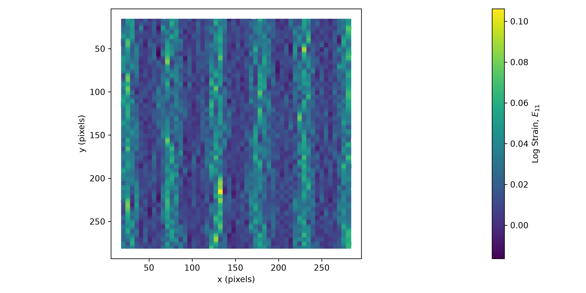
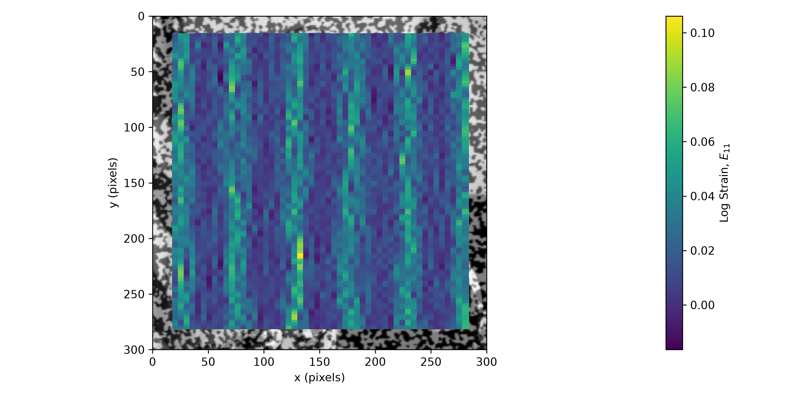
current_image.A Real Trade-Off, Not a Bug
2862-point, 5px-spacing mesh: mean = 0.0200 (true value 0.0198), but std = 0.0155, range [-0.0160, 0.0771]
The mean is accurate. The spread is not small. Unlike Simple Stretch Revisited's perfectly uniform result, individual elements here scatter well beyond the true value — some report negative strain, some report nearly 4 times the true value.
This isn't a tracking bug. Log strain is, in effect, a finite
difference: , a displacement difference
divided by element size . Subpixel Accuracy's
own measurement found locate_subpixel's residual error is small in
absolute terms — a few hundredths of a pixel, on average — but at 5
pixels of element spacing, that same absolute error is a much larger
fraction of than it was at Simple Stretch Revisited's 50-pixel
spacing. The smaller the element, the more a fixed amount of tracking
noise gets amplified into strain noise. Checked directly, not just
argued:
| Element spacing | Mean E11 | Std E11 |
|---|---|---|
| 5px | 0.01988 | 0.01544 |
| 10px | 0.01997 | 0.01247 |
| 20px | 0.02003 | 0.00988 |
| 40px | 0.01999 | 0.00318 |
Standard deviation falls as element spacing grows — the same tracking
noise, spread over a larger , moves less of the resulting strain.
This is exactly why VIC-2D and other commercial DIC packages offer a
strain window — averaging displacement over several subsets before
computing strain, trading spatial resolution for strain precision.
dictk doesn't implement that averaging yet. This page's own dense
mesh is accurate on average and honestly noisy point to point, not
silently smoothed into looking better than the underlying tracking
supports.
Point count, tracking accuracy, and now strain precision have all been
free variables throughout Simple Stretch, Subpixel Accuracy, and this
page. How dictk's own tracking time scales as point count grows —
across sequential, threaded, and multi-process execution — is
Parallelization's own question, still not
attempted here either.
Path Forward
This page is a running log, not a tutorial. It records forward-looking notes as they come up — open questions, scale targets, directions worth exploring — dated as they're written. Nothing here is implemented yet unless the note says so.
2026-08-11
North star. DIC at real finite-element-mesh scale eventually means at least a billion correlations. Realistically, tens of billions. The working assumption is that this stays under a trillion — that's the ceiling to design for, not a target to reach.
Four directions worth exploring, in the order we'll likely take them:
- GPU implementations. Parallelization only covers CPU-bound threads and processes so far. GPU work is still explicitly deferred until a documented CPU bottleneck exists (see the parallelism roadmap referenced there) — this note doesn't change that. It's on the list for when that bottleneck shows up.
- Dynamic search-window sizing. Every worked example so far uses a fixed, generously-sized search area per point. Parallelization's own measurements found that per-correlation size, not point count alone, is the dominant cost lever. A search window only as large as it needs to be — sized from a prior displacement estimate rather than a fixed worst-case margin — shrinks that per-correlation cost directly, for every point in a mesh, not just the parallelizable part of the problem.
- Pure rotation. Rigid Body Motion and
the polar decomposition (,
see Continuum Mechanics)
already separate rotation from stretch: a pure rotation carries zero
strain by construction. Two things worth testing empirically, not
just assuming from the closed-form math: how large a rigid-body
rotation angle
dictk's own correlation-based tracking can actually recover before it breaks down — a large enough rotation distorts a kernel's own content beyond what a translation-only search can still match — and confirming a correctly-tracked pure rotation reports zero strain end to end, not just in theory. - Synthetic dataset comparison to XCorrel and VIC-2D. Run the same
synthetic datasets this book already uses through both tools, and
compare their reported displacements and strain against
dictk's own. A synthetic dataset has a known, exact ground truth — the same trick every worked example in this book already relies on — so this is a direct, numeric check against established DIC software, not just a qualitative one.
A practical constraint to design around: real DIC data typically uses kernel sizes from about 35x35 pixels on the small end up to about 50x50 pixels on the large end. Every benchmark or worked example aimed at "realistic" DIC scale should stay inside that range, not the 40-pixel figure this book's own teaching examples happen to use.
Heaviside DIC and XFEM. Every correlation technique this book covers assumes a smooth displacement field. Real specimens don't always deform smoothly — a crack or a material interface can produce a genuine discontinuity, a jump rather than a gradient. Image Transformation already generates a synthetic example of exactly that jump, and names the reason: standard DIC can't capture it, and cases like it motivate the Heaviside finite-element formulation. XFEM handles this on the finite element side by enriching the basis with Heaviside step functions, so the mesh doesn't need to conform to the crack. The DIC-side analogue — enriching the correlation itself to detect and locate a discontinuity, not just generating test images that contain one — is worth exploring. Not scoped yet.
2026-08-14
Re-running The First Sweep after the centered-padding fix: checked,
not automatically fixed. Recoverable Displacement
Range's own
opening sweep sizes search_margin_width generously for every
percentage tested — always larger than the true displacement — so it
was never hitting the asymmetric-padding bug that page's fix
addresses. Re-ran it against the fixed locate() to check directly,
rather than assume: the collapse is identical to before the fix —
12/12, 12/12, 10/12, 6/12, 1/12, 1/12, 0/12, 0/12 for
. The real cause is still the
interpolation confound that page already
names:
stretch's own bilinear interpolation subtly blurs kernel-surrounding
texture even where a point's center pixel lands on an exact integer,
producing near-miss failures — not the wraparound cliff the fix
resolved. Confirms the Postponed subpixel-accuracy item below is still
the right next step here, not something this fix already covered.
Postponed
Noted, not being pursued right now:
- Heaviside DIC and XFEM — enriching the correlation itself to detect and locate a discontinuity, not just generating test images that contain one (see above).
grid.locate()windowing demo.windowinghas only ever been demonstrated directly ondictk.correlation.phase_correlation(see Correlation Visualization). Everygrid.locate()call across the book so far (Multi-Point Motion, Simple Stretch, Recoverable Displacement Range, Pure Rotation, Parallelization) leaveswindowingat its defaultNone— the one parameter ofgrid.locate's own signature with no live worked example yet.
2026-08-18
Pure Rotation: The First Sweep. New page, Pure
Rotation, starts checking direction 3 above
empirically. Its First Sweep reuses Point
Grid's 12-point grid and sweeps
rotate's angle, sizing search_margin generously at every step so
window size can't be the limiting factor — the same approach
Recoverable Displacement
Range used.
Matching collapses even faster than that page's stretch sweep did: well
under half the points still match by 2 degrees, none by 8 degrees. The
likely cause, already named in this page's own direction-3 note above,
isn't confirmed yet — a large enough rotation turns a kernel's own
content around a point, not just moves it, and a translation-only
search can't follow that. Checking that hypothesis directly is the next
step here, not started yet.
Pure Rotation: hypothesis confirmed. Same page, new Confirming the
Content-Rotation
Hypothesis
section. Two direct checks: handing locate the exact true search
center instead of a generous margin barely changes the collapse,
ruling out search mechanics; and a plain zncc similarity score
between the reference kernel and the true-aligned current-image patch
(no search at all) falls off steeply with angle, confirming the real
cause is content, not search. One thing this doesn't separate out yet:
rotate shares stretch's bilinear interpolation, and Recoverable
Displacement
Range
already found interpolation blur alone can look similar — genuine
geometric content rotation and interpolation blur are likely both
compounding here. Telling them apart is the next open step, not
started.
2026-08-20
Postponed subpixel accuracy item, resolved. Simple Stretch
Revisited found the
concrete trigger this Postponed item's own wording anticipated: at
factor_x = 1.02, only points whose x is a multiple of 50 land on
an integer pixel in the deformed configuration. A denser grid mostly
doesn't. New Subpixel
Accuracy page: dictk.translation.locate_subpixel
and dictk.grid.locate_subpixel, exposing
phase_cross_correlation's own upsample_factor — separate functions
from locate/grid.locate, not a parameter added to them, returning
a new dictk.image.SubpixelCoordinate (float x/y) instead of
PixelCoordinate. Measured directly against VIC-2D's own 2862-point
grid: upsample_factor doesn't make locate's truncated integer
answer more often correct (the true target usually isn't an integer at
that density, so no refinement changes that) — but it substantially
improves how close the tracked position lands to the true, generally
fractional, target (mean absolute error 0.26px at upsample_factor=1,
down to 0.09px at 10). Parallelization (9) gains this as its first
child, 9.1; a second child, 9.2 High Point Density, picking the same
subpixel tooling up at real density, is the planned next step, not
started yet.
2026-08-24
9.2 High Point Density, shipped. New page, High Point
Density, closes the 9.1/9.2 pair under
Parallelization. It pushes grid.locate_subpixel
to VIC-2D's own point density: 2862 points, 5px spacing, 2756 elements.
No new library code — it composes entirely from already-shipped
functions, the same way Simple Stretch
Revisited did.
A real finding came out of it, verified before writing anything up. The strain field isn't clean at this density. Mean E11 still tracks the true value closely (0.0199 vs. 0.0198), but individual elements scatter widely (std 0.0155, range -0.016 to 0.077). A live 4-point spacing sweep (5/10/20/40px) confirmed the mechanism directly: strain noise scales with displacement-noise divided by element size, so the same small subpixel tracking residual gets amplified more at smaller spacing. Std shrinks monotonically across the sweep (0.0154/0.0125/0.0099/0.0032). The page names VIC-2D's own strain-window averaging as the standard remedy but doesn't implement it — that stays open.
Contributing to dictk
dictk is developed on GitHub using
Git for version control. Git is the tool that tracks
changes to the source on your own computer; GitHub is the hosting service
that holds the canonical copy of the repository, tracks issues and pull
requests, and runs the CI/CD pipeline described below.
Cloning vs. forking
Contributors can get a working copy of dictk by either cloning or forking
the repository.
| Cloning | Forking |
|---|---|
| A Git action: it creates a copy of the repository on your own computer. | A GitHub action: it creates a personal copy of the entire project under your own GitHub account. |
| For authorized collaborators who can push changes directly to the main project. | For external contributors to make changes without affecting the original repository, then submit a pull request to share those changes. |
Getting the source code
Collaborators should clone directly:
git clone git@github.com:hovey/dictk.git
cd dictk
External contributors should first fork the repository to their own GitHub account, then clone their fork locally.
Installation
Using uv (recommended)
Install uv if you don't already have it:
# macOS / Linux
curl -LsSf https://astral.sh/uv/install.sh | sh
# or via Homebrew
brew install uv
Then, from the repository root:
uv sync --all-extras --dev
This creates a .venv and installs dictk plus its dev dependencies
(pytest, pytest-cov, ruff). Run commands inside that environment with
the uv run prefix, e.g. uv run pytest.
Using venv and pip (alternative)
python3 -m venv .venv
source .venv/bin/activate # bash/zsh
source .venv/bin/activate.fish # fish
.venv\Scripts\activate # Windows
pip install -e ".[dev]"
Git workflow
Branching model
main and dev are both long-lived: dev is branched from main, and
main only moves forward via merges from dev (each push to main is a
potential release — see "Releasing" below). Actual development happens one
level further out, on dev-feature, a branch cut from dev.
main ●───────────────●─────────── (releases only, tagged)
\ \
dev ●─────●───●───●───●────●──── (integration branch)
\ \ \
dev-feature ●───● ●─●───● ●──● (your work)
dev-feature above is a placeholder — name each branch dev-<short-description>
so its purpose is clear at a glance. For example:
dev-cicd— CI/CD pipeline or workflow-file changesdev-algorithm-refactor— refactoring an existing algorithm or moduledev-imaging— new imaging transformations/workflowsdev-docs— documentation-only updates
Starting a dev-feature branch
git checkout dev
git pull origin dev
git checkout -b dev-feature
Keeping your dev-feature branch up to date with dev
Before opening a PR, or periodically during long-lived work, bring in dev's
latest changes.
Option 1: Merge (safer, keeps history of both branches)
git checkout dev
git pull origin dev
git checkout dev-feature
git merge dev
If there are conflicts, git will tell you which files — resolve them, then:
git add <resolved-files>
git commit
Option 2: Rebase (cleaner, linear history)
git checkout dev
git pull origin dev
git checkout dev-feature
git rebase dev
If conflicts come up during rebase, fix them then run git add <files>
followed by git rebase --continue (repeat until done). To bail out at any
point: git rebase --abort.
Pushing after either approach — if dev-feature was already pushed and
has commits others might be using:
- After a merge:
git push origin dev-feature - After a rebase:
git push origin dev-feature --force-with-lease(rebase rewrites history, so you need a force push —--force-with-leaseis safer than--forcesince it won't overwrite someone else's pushed work)
Which to pick
- Use merge if the branch is shared with others or you want a clear record of when
dev's changes came in - Use rebase if it's mostly just your own branch and you want a clean, linear commit history without merge bubbles.
Tip — before doing either, it's worth running:
git log dev-feature..dev --oneline
to preview what's coming in, so conflicts aren't a total surprise.
Development workflow
Developers work locally and periodically push to their dev-<feature>
branch. Before pushing changes, developers should check code quality
locally rather than solely relying on CI to catch problems. This means
running tests, linting, format checking (ruff), code coverage, and
confirming that the documentation (mdBook + pdoc) builds locally. Catching
issues locally is faster than waiting on a CI run, and it keeps the CI
pipeline green for everyone else.
Running tests
uv run pytest
With coverage (matches what CI runs):
uv run pytest --cov=src/dictk --cov-report=xml --cov-report=html
Coverage HTML report is written to htmlcov/index.html.
Linting and formatting
ruff handles both formatting and linting.
uv run ruff format # auto-format
uv run ruff format --check # verify formatting without changing files (CI runs this)
uv run ruff check # lint
pyproject.toml has no [tool.ruff.lint] section, so ruff check runs
ruff's bare default rule selection — E4/E7/E9 (pycodestyle basics)
plus F (pyflakes). This is deliberate, not an oversight. ruff check is a
hard CI gate; broader rule sets (D docstring-style, ANN
type-annotation-completeness, S security, and the rest) risk fighting
conventions already established elsewhere in this codebase (e.g. the
Google-style docstrings pdoc --docformat google depends on), or simply
duplicating ground pylint already
covers informationally, without ruff's same all-or-nothing gating risk.
Building the docs
Documentation is an mdBook under
docs/userguide/, with two preprocessors enabled:
mdbook-cmdrun, so pages can
embed live, always-accurate command output (see the "Image Generation"
page for an example) instead of pasted-by-hand output, and
mdbook-katex, so pages can
include $$...$$ LaTeX math blocks (see the "Single Point Motion" page).
Neither is a Python dependency:
# mdbook must be pinned to 0.4.52: mdbook-cmdrun and mdbook-katex's 0.9.x
# line both depend on the mdbook crate's 0.4.x preprocessor JSON schema,
# which changed in mdbook 0.5 and broke compatibility
# (https://github.com/FauconFan/mdbook-cmdrun/issues/22, open as of this
# writing; mdbook-katex made the same jump at its own 0.10.0). Do not
# `brew install mdbook` or `cargo install mdbook`/`mdbook-katex` without a
# --version pin, or the build will fail with "Unable to parse the input".
cargo install mdbook --version 0.4.52
cargo install mdbook-cmdrun
cargo install mdbook-katex --version 0.9.4
If you already have a newer mdbook from Homebrew or elsewhere on your
PATH, make sure ~/.cargo/bin comes first (or check mdbook --version
reports 0.4.52 before building).
book.toml lives at the repo root (not inside docs/userguide/), with
src = "docs/userguide/src" and build-dir = "docs/userguide/book", so
both commands below run from the repo root:
uv run mdbook build # build once, output in docs/userguide/book/
uv run mdbook serve --open # live preview at http://localhost:3000
uv run puts dictk's own CLI on PATH for the build, since some
cmdrun directives invoke dictk directly.
Building the API docs
Python API reference docs (function signatures, docstrings) are generated from source with pdoc, a dev dependency:
uv run pdoc dictk -o docs/api --docformat google --math -t docs/pdoc_templates # build once, output in docs/api/
uv run pdoc dictk --docformat google --math -t docs/pdoc_templates # live preview, serves on localhost
--docformat google matters: pdoc defaults to restructuredtext, which
doesn't recognize this codebase's Google-style Args:/Returns:/Raises:
docstring sections — without it, an Args: section renders as one flat
paragraph instead of a proper bulleted list.
--math matters too: several docstrings (dictk.correlation's CC/NCC/
ZCC/ZNCC/phase-correlation formulas) use $...$/$$...$$ LaTeX — without
it, no MathJax gets included and the raw LaTeX source shows up literally
instead of being rendered. A separate trap in the same area: pdoc treats
a docstring as Markdown before MathJax ever sees it, and Markdown's own
backslash-escape rule silently strips the backslash off LaTeX commands
like \! (a backslash followed by ASCII punctuation). Avoid that pattern
in docstring math, or double the backslash (\\!).
No submodules need listing on the command line — bare pdoc dictk
discovers all of them, and also builds the "Submodules" links on the
dictk.html landing page, because every one of them
(image/translation/correlation/grid/cli/rosta) is named
directly in dictk/__init__.py's own __all__, alongside the
individual functions (astronaut, checkerboard, rosta,
__version__) it re-exports:
pdoc's __all__ handling
treats a name in __all__ that isn't already a bound attribute as a
submodule to import and document. Leaving a submodule out of __all__
doesn't fail the build — it silently drops that module from both the
generated docs and the landing page's own navigation — so if you add a
new top-level submodule, add its name to __all__ too, not to this
command.
Output goes to docs/api/ (gitignored, regenerated on demand). CI builds
this too and publishes it alongside the mdBook user guide — see
"CI/CD architecture" below.
Development note: -t docs/pdoc_templates points pdoc at
docs/pdoc_templates/custom.css, pdoc's own supported override point
(-t/--template-directory — see
pdoc's documentation). It's included
last, after theme.css/layout.css/content.css, so it always wins
the cascade. This one softens pdoc's default theme: a pure white page
background (--pdoc-background: #fff) with code-block/highlighted-box
backgrounds only slightly darker (--code: #f8f8f8, --accent: #eee)
reads as a stark white glare across the page as a whole. The override
shifts all three together — --pdoc-background: #efede7,
--code: #e3dfd7, --accent: #d7d3c9 — rather than tinting the
background alone, so the page < code-block < accent-box hierarchy
pdoc's default theme establishes stays intact, just softer throughout.
Tuned in two successive passes, each computed in HSL space (same hue/
saturation per variable, lightness lowered by a measured delta) rather
than picked by eye, so the gaps between the three tiers stay even
instead of collapsing into each other. --accent2 (the border/
scrollbar gray, #c1c1c1) is untouched — already reads with plenty of
contrast against every tone above.
Building the coverage badge
The README's coverage badge is a real SVG generated from coverage.xml with
genbadge, a dev dependency —
not a static label:
uv run pytest --cov=src/dictk --cov-report=xml --cov-report=html
uv run genbadge coverage -i coverage.xml -o coverage-badge.svg
In CI this runs in the docs job (not test) using the coverage.xml
produced by the test job's report-test artifact, so the badge only
updates on pushes to main or dev — same cadence as the Docs and API
badges, not per-PR. Both coverage-badge.svg and the full htmlcov/ report
are staged into the deployed site under that branch's subdirectory
(<branch>/badges/coverage.svg and <branch>/coverage/ respectively) — see
"CI/CD architecture" below.
Building the tests badge
The README's tests badge (tests: N pass M fail) is a real SVG built from
pytest's own JUnit XML report, not a static label:
uv run pytest --cov=src/dictk --cov-report=xml --cov-report=html --junitxml=junit.xml
uv run python .github/scripts/generate_tests_badge.py --input junit.xml --output tests-badge.svg
--junitxml is a builtin pytest flag — no extra plugin needed.
generate_tests_badge.py parses that report's pass/fail/skip counts and
requests a matching badge from shields.io directly (same service
genbadge uses for the coverage
badge above, just called directly here rather than through that library,
since genbadge's own test-badge format is N/M, not the N pass M fail
wording this one matches) — green when nothing fails, red otherwise. Like
the coverage badge, this runs in the docs job using the test job's
report-test artifact, so it updates on pushes to main/dev only. Staged
into the deployed site at <branch>/badges/tests.svg.
Development note: shields.io returns 403 Forbidden for urllib's
default User-Agent string (Python-urllib/x.y) — presumably basic bot
filtering, since curl (used by the lint badge below) isn't blocked.
Fixed by setting an explicit User-Agent header on the request rather
than shelling out to curl from a Python script for no other reason.
Running pylint (informational)
ruff (ruff format --check and ruff check) is what actually gates CI —
see "Linting and formatting" above. pylint
also runs, but only in the docs job, and only informationally: it can't
fail the build. It exists purely because ruff has no equivalent of pylint's
Your code has been rated at X.XX/10 score, and the README's lint badge
wants a score, not just a pass/fail (which the CI badge already covers).
Since pylint and ruff check overlapping-but-different rule sets, expect
pylint to flag a few things ruff doesn't (and vice versa) — that's expected
duplication from running two linters, not a bug in either.
uv run pylint src/dictk --output-format=text --reports=yes > pylint-report.txt
uv run python .github/scripts/render_pylint_report.py \
--input pylint-report.txt --output pylint-report.html
The badge itself is built by extracting the score from that output and
requesting a matching badge from shields.io — see the "Run pylint
(informational) and generate lint badge/report" step in ci.yml for the
exact score-extraction and color-threshold logic. pylint-report.html is
staged into the deployed site at <branch>/reports/lint/, and the badge at
<branch>/badges/lint.svg — same cadence as the other gh-pages badges
(updates on pushes to main or dev).
Building the status dashboard
<branch>/dashboard/ on the deployed site is a single page linking every
badge and report above for that branch, generated by
.github/scripts/render_dashboard.py. It exists because the mdBook user
guide occupies that branch's subdirectory root, so there's no natural
landing page that lists the API reference, coverage report, and lint report
together — rather than expecting visitors to already know those paths, or
scattering the links across the README only. It doesn't require any of the
other artifacts to already exist locally (it only generates links to them,
using paths relative to <branch>/dashboard/, e.g. ../coverage/):
uv run python .github/scripts/render_dashboard.py \
--github-repo hovey/dictk \
--run-id local \
--sha "$(git rev-parse HEAD)" \
--ref-name "$(git rev-parse --abbrev-ref HEAD)" \
--timestamp "$(date -u +'%Y-%m-%d %H:%M:%S UTC')" \
--output dashboard.html
In CI, ${{ github.run_id }}, ${{ github.sha }}, and ${{ github.ref_name }}
fill in the run metadata instead. dashboard.html is staged into the
deployed site at <branch>/dashboard/.
Building the root landing page
The site root (/) doesn't belong to either branch — main and dev each
deploy to their own subdirectory (see "CI/CD
architecture" below), so the root is a two-column
dashboard (main "Released" in blue, dev "Development" in orange) linking to
each branch's user guide, API reference, dashboard, coverage, lint, and
tests badges, styled with the Tailwind CDN build — modeled on
sandialabs/rattlesnake-vibration-controller's gh-pages
dashboard.
It's generated by .github/scripts/render_landing.py and regenerated on
every deploy from whichever branch ran most recently (only the footer's
timestamp/commit/CI-run attribution changes between deploys — the two
columns' links are static):
uv run python .github/scripts/render_landing.py \
--github-repo hovey/dictk \
--run-id local \
--sha "$(git rev-parse HEAD)" \
--ref-name "$(git rev-parse --abbrev-ref HEAD)" \
--timestamp "$(date -u +'%Y-%m-%d %H:%M:%S UTC')" \
--output landing.html
landing.html is staged as index.html at the deployed site's root.
Before pushing
There's no preflight command yet (see rattlesnake-vibration-controller's
preflight.py for an example of what that could grow into) — for now, run
the checks manually:
uv run ruff format --check
uv run ruff check
uv run pytest --cov=src/dictk --cov-report=xml --cov-report=html --junitxml=junit.xml
uv run mdbook build
uv run pdoc dictk -o docs/api --docformat google --math -t docs/pdoc_templates
uv run genbadge coverage -i coverage.xml -o coverage-badge.svg
uv run python .github/scripts/generate_tests_badge.py --input junit.xml --output tests-badge.svg
uv run pylint src/dictk --output-format=text --reports=yes
These are exactly the checks the test and docs jobs run in CI.
CI/CD architecture
CI and releasing live in two workflows: .github/workflows/ci.yml (checks
and docs, on every push/PR) and .github/workflows/release.yml (publishing,
on a version tag push).
ci.yml has two jobs, plus a workflow_call trigger so release.yml can
invoke it as a reusable workflow:
-
test— runs on every push, pull request, and when called fromrelease.yml. Installs dependencies withuv sync, runsuv buildas a build sanity check,ruff format --check,ruff check, andpytest --cov(with--junitxmltoo). Uploads the coverage and JUnit XML reports as a build artifact (report-test). -
docs— runs only on pushes tomainordev, aftertestpasses (thisifcondition also means it's skipped whenrelease.ymlcallsci.ymlfrom a tag push, since the ref won't berefs/heads/mainorrefs/heads/dev). Installs the pinnedmdbook0.4.52,mdbook-cmdrun, andmdbook-katex(cached viaactions/cache), downloads thetestjob'sreport-testartifact, builds the mdBook user guide withdictk's own CLI onPATH, builds the pdoc API reference, generates a coverage badge fromcoverage.xmlwith genbadge and a tests badge fromjunit.xml(N pass M fail, viagenerate_tests_badge.py— see "Building the tests badge" above), runs pylint informationally to get a 0-10 score (fetched as a shields.io badge) and a full findings report, renders a status dashboard linking all of the above, and stages all of it into one directory (user guide at the root, API reference underapi/, badges underbadges/coverage.svg,badges/lint.svg, andbadges/tests.svg, full HTML coverage report undercoverage/, full pylint report underreports/lint/, dashboard underdashboard/).That staged directory becomes the whole subtree for whichever branch triggered the run — deployed to
main/ordev/on thegh-pagesbranch (published via GitHub Pages), alongside a regenerated rootindex.htmllanding page linking to both (see "Building the root landing page" above). Deployment is a manual clone-of-gh-pages→ replace only${DEPLOY_SUBDIR}/andindex.html→ commit → push, notpeaceiris/actions-gh-pages: that action replaces the wholepublish_dir(or, withkeep_files, tries to preserve everything else, which is imprecise ifmainanddevdeploy close together and risks one branch's content clobbering the other's — a problem sandialabs/rattlesnake-vibration-controller'sci.ymlhit and solved the same way). The job'sconcurrencygroup (gh-pages-deploy,cancel-in-progress: false) serializesmain's anddev's deploys so this step never runs for both at once.
release.yml triggers on pushing a tag matching v* and runs, in order:
validate_tag— verifies the tag is valid PEP 440, that it's strictly newer than every existing tag, and that its branch matches its prerelease status: a prerelease tag (a/b/rc/.devsuffix) must be reachable fromorigin/dev; a stable/post tag must be reachable fromorigin/mainspecifically. Outputsis_prereleasefor the jobs below.test—needs: validate_tag, callsci.yml'stestjob fresh at the tagged commit (not reused from an earlier push-to-main run).build—needs: test. Runsuv build, generates a build-provenance attestation for the dist files, and uploads them as an artifact.github-release—needs: [build, validate_tag]. Creates a GitHub Release with auto-generated notes, attaching the dist files, marked prerelease or not pervalidate_tag's output.publish_testpypi/publish_pypi—needs: [build, github-release, validate_tag], gated onis_prereleasebeingtrue/falserespectively. Publishes to TestPyPI or PyPI. See "Releasing" below.
This is intentionally a minimal setup — no matrix OS/Python testing, no
containerized builds. pytribeam's ci.yml and
rattlesnake-vibration-controller's ci.yml/release.yml are useful
references for growing any of this out later (dictk's release.yml is in
fact modeled on rattlesnake-vibration-controller's, with one addition: tying
the branch check to prerelease status, described above).
Versioning
Versions are derived automatically from git tags via
hatch-vcs — there is no hand-maintained
version string anywhere in the source. Tag format is a v-prefixed
PEP 440 version, e.g. v0.1.0.
If the current commit isn't exactly at a tag (or the working tree is dirty),
hatch-vcs appends a local version segment (e.g. 0.1.dev1+gd975d09).
PyPI and TestPyPI reject uploads with a local version segment, so a
publishable commit must be exactly the tagged commit.
Tags and semantic versioning
Tags follow PEP 440, which requires version strings to follow this structure:
N.N.N[{a|b|rc}N][.postN][.devN]
Example tags
Prerelease tags:
| tag | description |
|---|---|
v1.1.0a1 | The first alpha for version 1.1.0 |
v1.1.0b2 | The second beta for version 1.1.0 |
v1.1.0rc1 | The first release candidate for version 1.1.0 |
A release candidate is made during the final testing stage before a full release.
Stable release tags (e.g., starting from a v1.0.0 release):
| tag | description |
|---|---|
v1.0.1 | Patch release: backwards-compatible bug fixes |
v1.1.0 | Minor release: new features that are backwards-compatible |
v2.0.0 | Major release: significant changes or breaking API updates |
Development and post-release tags:
| tag | description |
|---|---|
v1.1.0.dev1 | A version currently under development |
v1.0.0.post1 | A fix for a minor error in the release process, such as a typo in the documentation, without changing the code |
Release on tag
Pushing a tag is what triggers release.yml (see
"CI/CD architecture" above) — there's no separate
commit-message keyword. Which registry it publishes to is decided by the
tag's own shape: a prerelease tag (a/b/rc/.dev suffix) publishes to
TestPyPI, a stable/post tag publishes to PyPI. The branch the tag is cut from
has to match: prerelease tags on dev, stable/post tags on main. See
"Merging dev into main" and
"Publishing a release" below for the actual
commands.
Releasing
Releases are triggered by pushing a git tag matching v* — see
"Release on tag" above. validate_tag (the first job in release.yml) checks the tag is
valid PEP 440, strictly newer than every existing tag, and cut from the
branch its prerelease status requires (dev for prerelease, main for
stable/post). Because the release jobs build whatever hatch-vcs resolves at
the tagged commit, the tag must point at the exact commit you want published.
Merging dev into main
main is a protected branch — it only accepts changes through a merged pull
request, even for repo admins, so git push origin main will be rejected.
This step is only needed before a stable release (prereleases tag dev
directly — see "Publishing a release" below). Merge
dev into main through a PR:
git checkout dev
git pull origin dev
gh pr create --base main --head dev --title "Merge dev into main" --body ""
gh pr merge --merge
No approving review is required, so you can merge your own PR.
One-time setup (already done for this repo)
- GitHub → repo Settings → Environments: create
testpypiandpypienvironments.pypihas a "Required reviewers" rule (you) configured, so a real release needs manual approval in the Actions UI before publishing —testpypidoesn't need this. - On test.pypi.org and
pypi.org, under the
dictkproject's "Publishing" settings, add a trusted publisher: ownerhovey, repositorydictk, workflow filerelease.yml(notci.yml— publishing happens in the tag-triggered workflow), environment nametestpypi(for TestPyPI) orpypi(for PyPI).
No API tokens are stored anywhere — publishing uses OIDC trusted publishing
via the id-token: write permission.
Publishing a release
Prerelease (TestPyPI) — tag dev directly, no PR needed:
git checkout dev
git pull origin dev
git tag v0.1.0rc1
git push origin v0.1.0rc1
Stable (PyPI) — merge dev into main first (see
"Merging dev into main" above), then tag
main:
git checkout main
git pull origin main
git tag v0.1.0
git push origin v0.1.0
Either way, watch the Actions tab: validate_tag → test → build →
github-release → publish_testpypi/publish_pypi. For a prerelease, check
https://test.pypi.org/project/dictk/ once it succeeds. For a stable
release, the publish_pypi job pauses for your approval (the pypi
environment's required reviewer) before it runs; approve it from the Actions
run page, then check https://pypi.org/project/dictk/.
Uploads to PyPI (and TestPyPI) are permanent — a given version's files can
never be re-uploaded or deleted, only "yanked". Prefer testing on TestPyPI
first, as with v0.1.0rc1 above, before publishing the stable release.